| Variable | Nombre de données manquantes | Pourcentage de données manquantes |
|---|---|---|
| adl_score | 4296 | 74.9 |
| urine_output | 3028 | 52.8 |
Devoir Épidémiologie
ImportantUtilisation de l’IA
Des LLMs ont été utilisés à plusieurs reprises dans ce devoir, pour deux tâches principales :
En cas de problème d’exécution du code R (pour suggérer correction et amélioration)
Pour amélioration du rendu depuis un fichier Quarto Markdown vers PDF (avec code nécessaire pour passage Quarto vers LaTeX, notamment pour les tableaux et la mise en forme générale)
Utilisation de Gemini pour le rendu Quarto et Github Copilot pour le code R.
1 Introduction
1.1 Énoncé du devoir
Étude observationnelle réalisée en unité de soins intensifs
Question : efficacité de la pose d’une sonde de Swan Ganz pour cathéterisme cardiaque droit (Right Heart Catheterization, RHC) sur la mortalité des patients, en tenant compte des facteurs pronostiques et des risques associés à cette procédure invasive.
Objectif : évaluer l’apport de la procédure de cathétérisme cardiaque droit sur la mortalité́, en tenant compte des nombreux facteurs pronostiques.
Source : Connors et al. (1996): The effectiveness of RHC in the initial care of critically ill patients. J American Medical Association 276:889-897 (Connors et al. 1996).
1.2 Contexte
Cathéter de Swan Ganz : dispositif médical diagnostique et thérapeutique mesurant en temps réel le débit et les pressions sanguines dans les cavités cardiaques droites et l’artère pulmonaire par cathétérisme cardiaque droit (RHC).
Utilisé en réanimation à partir des années 1970, mais remis en question après réévaluation du rapport bénéfice/risque.
Études randomisées contrôlées difficiles à réaliser pour des raisons éthiques, car de nombreux praticiens considèrent que ne pas utiliser la sonde de Swan-Ganz pourrait entraîner une perte de chances pour les patients.
Article fourni : étude observationnelle conçue par Connors et al. pour aborder la question d’un point de vue épidémiologique, avec une cohorte prospective multicentrique de 5735 patients adultes hospitalisés en réanimation pour une déficience d’organe parmi 9 prédéfinies, dont 2184 ont eu un RHC.
Données rapportées : données socio-démographiques, diagnostic principal, comorbditié, données de survie, durée d’hospitalisation.
1.3 Plan du devoir
Data-management : nettoyage du jeu de données, renommage des variables et de leurs catégories, remise à l’échelle le cas échéant, prise en compte des données aberrantes ou manquantes.
Analyse descriptive univariée de la population, des différentes variables et de leur répartition au sein de la cohorte.
Analyse bivariée de ces variables au sein de sous-groupes : analyse de l’impact du cathétérisme cardiaque droit sur la mortalité, afin de mettre en évidence une éventuelle différence significative entre les groupes.
Appariement des patients ayant eu un RHC avec des patients n’ayant pas eu de RHC, sur la base d’un score de propension à la réalisation d’un RHC, pour limiter les biais de confusion et améliorer la comparabilité des groupes.
Nouvelle analyse dans la population appariée, pour évaluer l’impact du RHC sur la mortalité à 180 jours, en utilisant des méthodes statistiques adaptées à la nature appariée des données.
Analyse multivariée en population globable pour confirmer les résultats obtenus dans la population appariée, en ajustant sur les variables de confusion.
Conclusion : synthèse des résultats, discussion
2 Data-management
Le fichier contient 5735 observations et 63 variables, avec des types de données variés (numériques, caractères, facteurs).
La première colonne et la dernière sont inutiles pour l’analyse (identifiant et index), et seront supprimées.
Les variables de date sont au format caractère et doivent être converties en format date pour une manipulation plus facile.
Les variables de type “Yes”/“No” seront converties en facteurs pour faciliter l’analyse statistique.
Les colonnes sont renommées pour faciliter leur manipulation et leur compréhension.
2.1 Suppression des colonnes inutiles et renommage des variables
2.2 Taux de données manquantes
Les variables
adl_scoreeturine_outputsont les deux seules à avoir des données manquantes.Pour la variables
adl_score(correspondant au score ADL), le taux de données manquantes est de 74,9%.Pour la variable
urine_output(correspondant à la diurèse), le taux de données manquantes est de 52,8%.
2.3 Conversion des types de données
Les variables de dates sont converties au format date.
Les variables de type “Yes”/“No” sont converties en facteurs.
Les variables de catégorie sont converties en facteurs avec des labels explicites.
Les variables numériques sont converties en format numérique si nécessaire.
2.4 Vérification de la cohérence des dates
2.4.1 Vérification de la cohérence entre date de décès et date des dernières nouvelles
Il existe une colonne codant pour la date de décès et une codant pour la date des dernières nouvelles.
Pour les patients décédés, on vérifie que la date de décès correspond à la date des dernières nouvelles
Il existe 2154 cas où les dates des dernières nouvelles sont incohérentes (soit postérieure à la date de décès, soit antérieure) : pour ces patients, on propose de corriger la date des dernières nouvelles en la remplaçant par la date de décès.
Après correction il existe 0 cas incohérents, ce qui correspond à une correction réussie de tous les cas de dates incohérentes entre date de décès et date des dernières nouvelles.
2.4.2 Vérification de la cohérence entre date de sortie d’hospitalisation et date des dernières nouvelles
On vérifie que la date de sortie d’hospitalisation n’est pas postérieure à la date des dernières nouvelles, ce qui serait incohérent.
1 patient a une date de sortie d’hospitalisation inconnue
Une vérification rapide montre qu’il est décédé 394 jours après son admission. On ne peut pas affirmer que le patient est sorti entre temps de son hospitalisation.
3 Description du jeu de données
3.1 Vue d’ensemble du jeu de données
- Nombre d’observations et de variables
| Nombre d’observations | Nombre de variables |
|---|---|
| 5735 | 78 |
- Types de variables (catégorielles, numériques, dates)
| Type | Nombre |
|---|---|
| factor | 33 |
| numeric | 24 |
| character | 17 |
| Date | 4 |
3.2 Variables catégorielles
- Nom des variables catégorielles
| Variable | Description |
|---|---|
| primary_disease_category | Diagnostic principal |
| secondary_disease_category | Comorbidité principale |
| cancer | Cancer (No, Yes, Metastatic) |
| death_180d | Décès à 180 jours (Yes/No) |
| comorbidity_cardiovascular | Antécédent : cardiovasculaire |
| comorbidity_congestive_heart | Antécédent : insuffisance cardiaque |
| comorbidity_dementia | Antécédent : démence |
| comorbidity_psych | Antécédent : psychiatrique |
| comorbidity_chronic_pulmonary | Antécédent : respiratoire chronique |
| comorbidity_renal | Antécédent : rénal |
| comorbidity_liver | Antécédent : hépatique |
| comorbidity_upper_gi_bleeding | Antécédent : hémorragie digestive haute |
| comorbidity_malignancy | Antécédent : cancer |
| comorbidity_immunosuppression | Antécédent : immunodépression |
| comorbidity_transfer | Transfert (> 24h) |
| comorbidity_myocardial_infarction | Antécédent : infarctus du myocarde |
| sex | Sexe |
| death_30d | Décès à 30 jours |
| rhc | Cathétérisme cardiaque droit (RHC) |
| dnr_status | Statut de non-réanimation (DNR) |
| insurance_class | Classe d’assurance |
| diagnosis_respiratory | Diagnostic : respiratoire |
| diagnosis_cardiovascular | Diagnostic : cardiovasculaire |
| diagnosis_neurological | Diagnostic : neurologique |
| diagnosis_gastrointestinal | Diagnostic : gastro-intestinal |
| diagnosis_renal | Diagnostic : rénal |
| diagnosis_metabolic | Diagnostic : métabolique |
| diagnosis_hematologic | Diagnostic : hématologique |
| diagnosis_sepsis | Diagnostic : sepsis |
| diagnosis_trauma | Diagnostic : traumatique |
| diagnosis_orthopedic | Diagnostic : orthopédique |
| race | Origine / race (selon codage de la base) |
| income | Revenu (selon codage de la base) |
- On peut séparer les variables catégorielles en plusieurs “sous-catégories” selon leur thème : comorbidités, diagnostics, variables sociodémographiques, etc.
3.2.1 Diagnostic principal et comorbidité principale
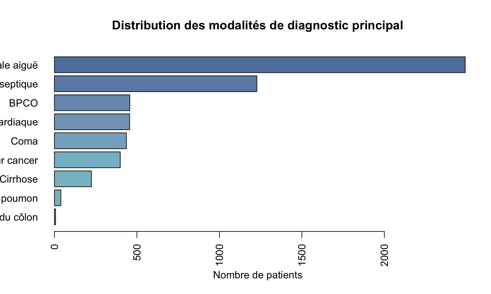
- Le diagnostic principal le plus fréquent est l’insuffisance rénale aiguë avec 2490 patients soit 43.4% des patients , suivi du choc septique avec 1227 patients soit 21.4% des patients.
3.2.2 Diagnostic et comorbidités (variables “Yes”/“No”)
Les variables de diagnostic et de comorbidités sont codées “Yes”/“No”.
On peut visualiser la distribution des modalités pour chacune de ces variables à l’aide de diagrammes en batons (barplots).
3.2.2.1 Diagnostics
- Il existe 10 variables de diagnostic codées “Yes”/“No” : respiratoire, cardiovasculaire, neurologique, gastro-intestinal, rénal, métabolique, hématologique, sepsis, trauma et orthopédique.
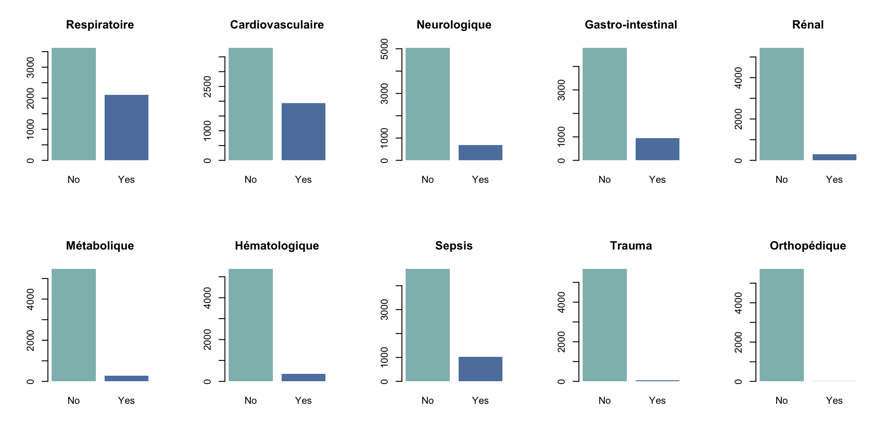
3.2.2.2 Comorbidités
- Il existe 12 variables de comorbidités codées “Yes”/“No” : cardiovasculaire, insuffisance cardiaque, démence, psychiatrique, respiratoire chronique, rénal, hépatique, hémorragie digestive haute, cancer, immunodépression, transfert (> 24h) et infarctus du myocarde.
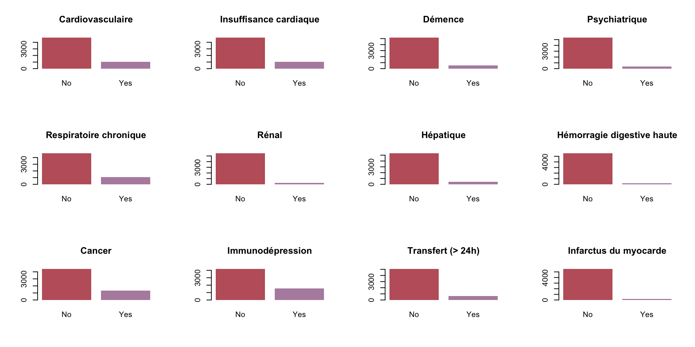
3.2.2.3 En un seul graphique
- Permet de mieux visualiser car même échelle pour tous, mais moins lisible car plus petit (surtout pour les moins fréquents)
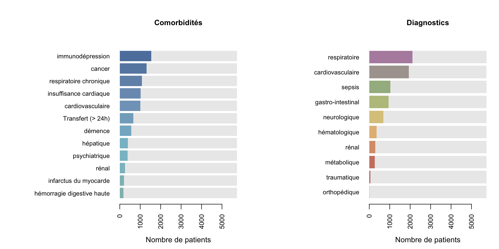
La comorbidité la plus fréquente est l’immunodépression avec 1543 patients soit 26.9% des patients, suivie du cancer avec 1316 patients soit 22.9% des patients.
Le diagnostic associé le plus fréquent est respiratoire avec 2113 patients soit 36.8% des patients, suivi des problèmes cardiovasculaires avec 1931 patients soit 33.7% des patients.
3.2.3 Variables sociodémographiques
- Il existe 5 variables sociodémographiques : sexe, statut non-réanimatoire, classe d’assurance, origine, revenu
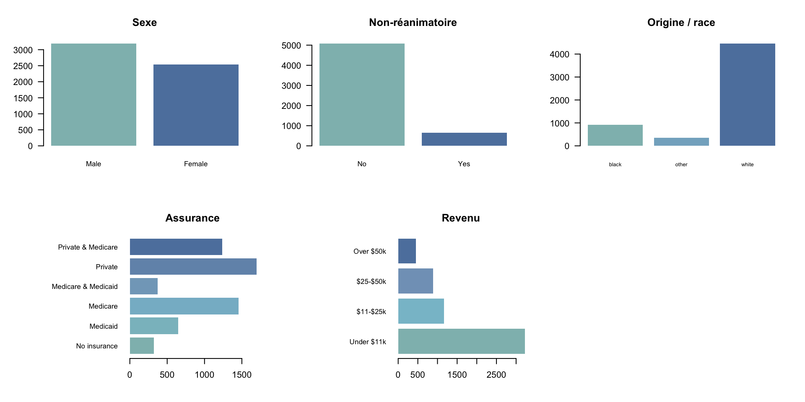
3.2.4 Cancer
La variable “cancer” était initialement codée en 3 modalités : “No”, “Yes” et “Metastatic”.
Du fait que les patients ayant la variable codée soit “Yes”, soit “Metastatic”, on en déduit que “Yes” correspond à un cancer localisé, tandis que “Metastatic” correspond à un cancer métastatique.
Une variable binaire “cancer_YN” a été créée à partir de la variable “cancer”, codée “Yes” si le patient a un cancer (localisé ou métastatique) et “No” sinon.
| Variable | Pourcentage | Effectifs |
|---|---|---|
| Cancer (Yes/No) | 23.6% | 1356/5735 |
| Cancer localisé | 71.7% | 972/1356 |
| Cancer métastatique | 28.3% | 384/1356 |
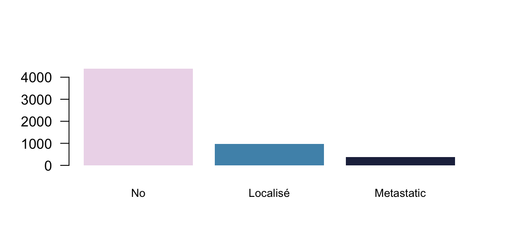
3.2.5 Variables liées au décès
À 30 jours : 1918 patients sont décédés, soit 33.4% de la cohorte.
À 180 jours : 3722 patients sont décédés, soit 64.9% de la cohorte.
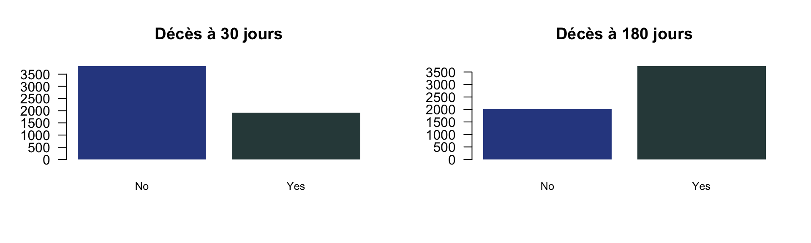
| Variable | Pourcentage | Effectifs |
|---|---|---|
| Décès à 30 jours | 33.4% | 1918/5735 |
| Décès à 180 jours | 64.9% | 3722/5735 |
- On constate qu’environ 1/3 des patients sont décédés à 30 jours et près des 2/3 à 180 jours.
3.2.6 Cathéterisme cardiaque droit (RHC)
- 2184 patients ont eu un cathétérisme cardiaque droit (RHC), soit 38.1% de la cohorte.
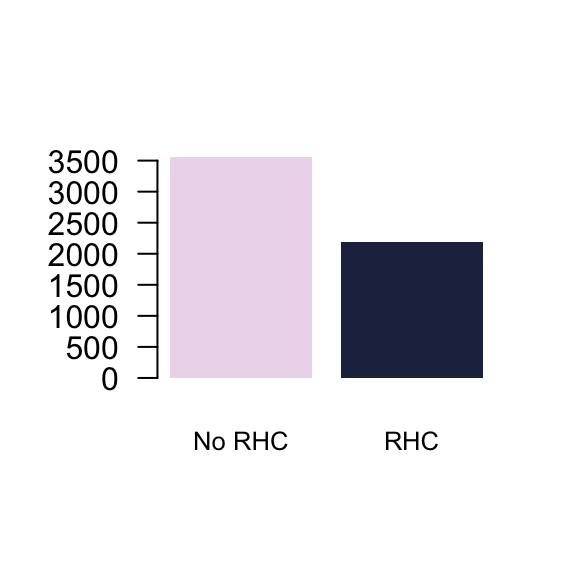
| Variable | Pourcentage | Effectifs |
|---|---|---|
| Cathéterisme cardiaque droit (RHC) | 38.1% | 2184/5735 |
3.3 Variables numériques
- Nombre de variables numériques : 24
3.3.1 Tableau récapitulatif des variables numériques
| Variables | Moyenne | SD | Médiane | Q1 | Q3 | Min | Max |
|---|---|---|---|---|---|---|---|
| Âge (années) | 61.38 | 16.68 | 64.05 | 50.15 | 73.93 | 18.04 | 101.85 |
| Niveau d'études (années) | 11.68 | 3.15 | 12.00 | 10.00 | 13.00 | 0.00 | 30.00 |
| Probabilité de survie prédite | 0.59 | 0.20 | 0.63 | 0.47 | 0.74 | 0.00 | 0.96 |
| Score DASI | 20.50 | 5.32 | 19.75 | 16.06 | 23.43 | 11.00 | 33.00 |
| Score APACHE | 54.67 | 19.96 | 54.00 | 41.00 | 67.00 | 3.00 | 147.00 |
| Score de Glasgow | 21.00 | 30.27 | 0.00 | 0.00 | 41.00 | 0.00 | 100.00 |
| Pression artérielle moyenne | 78.52 | 38.05 | 63.00 | 50.00 | 115.00 | 0.00 | 259.00 |
| Leucocytes (x10^9/L) | 15.65 | 11.87 | 14.10 | 8.40 | 20.05 | 0.00 | 192.00 |
| Fréquence cardiaque (bpm) | 115.18 | 41.24 | 124.00 | 97.00 | 141.00 | 0.00 | 250.00 |
| Fréquence respiratoire (rpm) | 28.09 | 14.08 | 30.00 | 14.00 | 38.00 | 0.00 | 100.00 |
| Température (°C) | 37.62 | 1.77 | 38.09 | 36.09 | 39.00 | 27.00 | 43.00 |
| Rapport PaO2/FiO2 | 222.27 | 114.95 | 202.50 | 133.31 | 316.62 | 11.60 | 937.50 |
| Albumine (g/L) | 3.09 | 0.78 | 3.50 | 2.60 | 3.50 | 0.30 | 29.00 |
| Hématocrite (%) | 31.87 | 8.36 | 30.00 | 26.10 | 36.30 | 2.00 | 66.19 |
| Bilirubine (mg/L) | 2.27 | 4.80 | 1.01 | 0.80 | 1.40 | 0.10 | 58.20 |
| Créatinine (mg/L) | 2.13 | 2.05 | 1.50 | 1.00 | 2.40 | 0.10 | 25.10 |
| Sodium (mmol/L) | 136.77 | 7.66 | 136.00 | 132.00 | 142.00 | 101.00 | 178.00 |
| Potassium (mmol/L) | 4.07 | 1.03 | 3.80 | 3.40 | 4.60 | 1.10 | 11.90 |
| PaCO2 | 38.75 | 13.18 | 37.00 | 31.00 | 42.00 | 1.00 | 156.00 |
| pH | 7.39 | 0.11 | 7.40 | 7.34 | 7.46 | 6.58 | 7.77 |
| Poids (kg) | 67.83 | 29.06 | 70.00 | 56.30 | 83.70 | 0.00 | 244.00 |
| Score ADL | 1.18 | 1.82 | 0.00 | 0.00 | 2.00 | 0.00 | 7.00 |
| Diurèse | 2192.45 | 1525.14 | 1927.00 | 1110.00 | 2955.00 | 0.00 | 9000.00 |
On constate quelques valeurs aberrantes dans les variables numériques :
Pression artérielle moyenne minimale à 0mmHg.
Leucocytose minimale à 0 G/L.
Fréquence cardiaque minimale à 0 bpm.
Fréquence respiratoire minimale à 0 resp/min.
Poids minimal à 0 kg.
3.3.2 Gestion des valeurs aberrantes dans les variables numériques
| Variable | Valeur.aberrante | Pourcentage.de.valeurs.0 |
|---|---|---|
| Pression artérielle moyenne | 80 | 1.39 |
| Leucocytose | 4 | 0.07 |
| Fréquence cardiaque | 159 | 2.77 |
| Fréquence respiratoire | 136 | 2.37 |
| Poids | 515 | 8.98 |
Le taux de valeurs “0” est relativement faible pour chacune de ces variables, ce qui suggère que ces valeurs pourraient être des erreurs de saisie ou des données manquantes codées à tort comme “0”.
Au maximum, la variable “Poids” contient 8.98% de valeurs “0”, ce qui est relativement faible.
Pour l’instant, ces valeurs “0” sont considérées comme des données manquantes et seront remplacées par
NA.
3.3.3 Histogramme et courbes de densité pour chacune des variables numériques
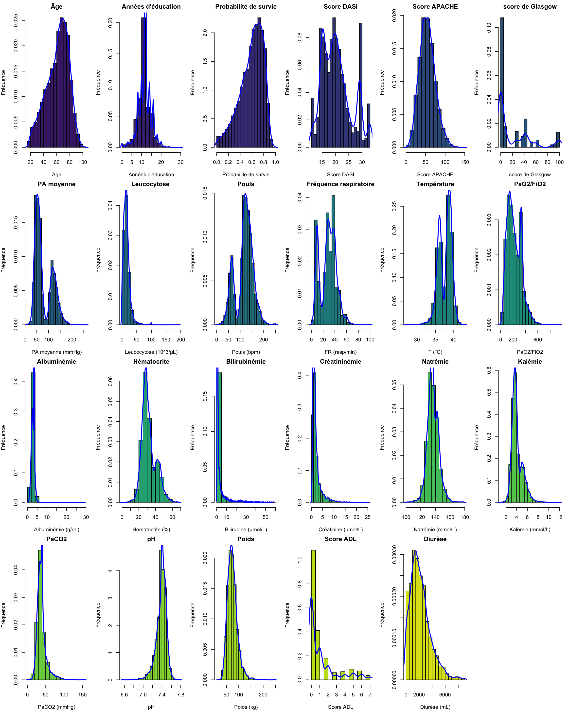
3.3.4 Normalité des variables
Certaines variables numériques semblent suivre une distribution approximativement normale : c’est le cas de l’âge (même prédominance des âges jeunes donc asymétrie vers les âges plus élevés).
A titre complémentaire, on peut réaliser un QQ-plot pour l’âge par exemple, qui visualise la distribution des données par rapport à une distribution normale théorique.
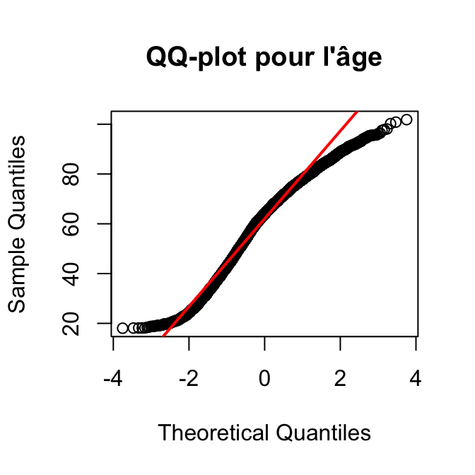
4 Analyse non ajustée
4.1 Résultats
L’objectif de l’étude est d’évaluer le cathétérisme cardiaque droit (RHC) sur plusieurs critères : temps de survie, durée de séjour à l’hôpital et en réanimation, coûts hospitaliers et intensité des soins.
On ne dispose pas dans le jeu de données d’informations sur les coûts hospitaliers et l’intensité des soins, donc on se concentre sur les deux premiers critères : temps de survie et durée de séjour à l’hôpital et en réanimation.
Il s’agit d’une analyse non ajustée, c’est à dire sans contrôle pour les facteurs de confusion potentiels.
4.1.1 En utilisant des critères binaires (décès à 30 jours et à 180 jours)
| Variable | No RHC N = 3,5511 |
RHC N = 2,1841 |
p-value2 |
|---|---|---|---|
| Décès à 30 jours | 1,088 (31%) | 830 (38%) | <0.001 |
| Décès à 180 jours | 2,236 (63%) | 1,486 (68%) | <0.001 |
| 1 n (%) | |||
| 2 Pearson’s Chi-squared test | |||
| Critère | OR | IC 95% |
|---|---|---|
| Décès à 30 jours | 1.39 | (1.24, 1.55) |
| Décès à 180 jours | 1.25 | (1.12, 1.4) |
Il y a significativement plus de décès à 30 jours et à 180 jours dans le groupe RHC que dans le groupe non-RHC (p < 0.001 pour les deux critères).
Les OR sont tous deux significativement positifs proches à 30 jours et 180 jours, indiquant une association positive entre le RHC et le risque de décès à ces deux critères.
4.1.2 En utilisant des critères de temps de survie (temps jusqu’au décès ou censure)
4.1.2.1 Comparaison des courbes de survie de Kaplan-Meier entre les groupes RHC vs non-RHC
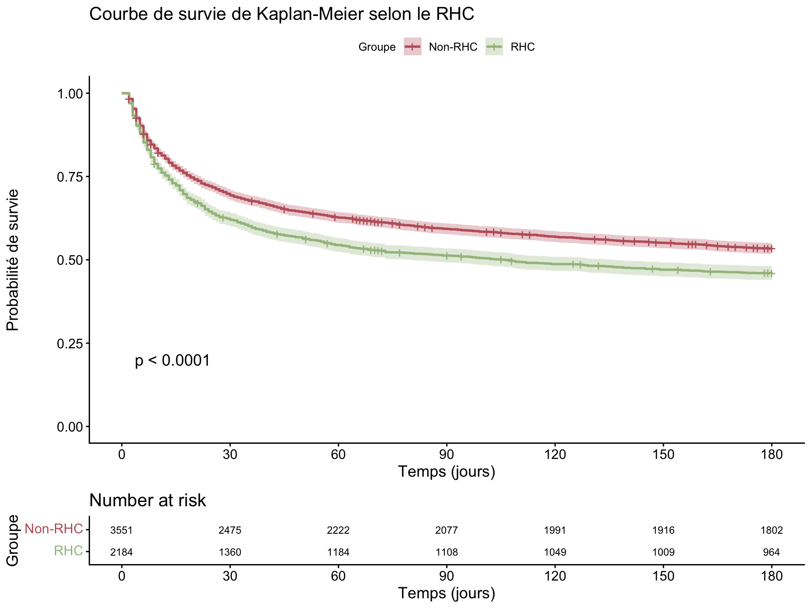
Le test du logrank indique une différence significative entre les courbes de survie des groupes RHC et non-RHC (p < 0.001), suggérant une différence entre les deux courbes de survie.
L’hypothèse de proportionnalité des risques semble être vérifiée, car les courbes de survie ne se croisent pas et restent parallèles au fil du temps
4.1.2.2 Modèle de Cox non ajusté pour évaluer l’association entre le RHC et le temps de survie jusqu’au décès à 180 jours
| Variable | HR | IC95 | p_value |
|---|---|---|---|
| RHC vs No RHC | 1.26 | (1.17, 1.36) | <0.001 |
ImportantInterprétation dans ce contexte
Ces tests supposent la comparabilité des groupes !
On ne sait pas si le décès est survenu à cause du cathétérisme cardiaque ou si les patients ayant eu un cathétérisme étaient plus graves au départ
En l’absence de randomisation, il est très probable que les patients ayant eu un RHC étaient plus sévères au départ, ce qui pourrait expliquer la plus grande mortalité observée dans ce groupe.
Il est donc essentiel de réaliser une analyse ajustée pour contrôler les facteurs de confusion potentiels avant de tirer des conclusions sur l’effet du RHC sur la mortalité.
4.2 Exploration des facteurs de confusion potentiels
On a donc observé que :
Les patients ayant eu un cathétérisme cardiaque droit (RHC) ont une mortalité plus élevée à 30 jours et à 180 jours que les patients n’ayant pas eu de RHC.
Les courbes de survie de Kaplan-Meier sont différentes, selon que les patients ont eu ou non un RHC.
Il s’agit probablement d’une association confondue par la sévérité initiale des patients, car les patients ayant eu un RHC étaient probablement plus sévères au départ.
Il faut donc réaliser une analyse ajustée pour contrôler les facteurs de confusion potentiels et améliorer la comparabilité des groupes RHC vs non-RHC.
Il est probable que les patients ayant eu un RHC étaient plus sévères au départ, ce qui pourrait expliquer la plus grande mortalité observée dans ce groupe
Il est donc essentiel d’explorer les caractéristiques basales des patients dans les groupes RHC vs non-RHC pour identifier les facteurs de confusion potentiels et évaluer la comparabilité des groupes avant de réaliser une analyse ajustée.
4.3 Les patients ayant eu un cathétérisme cardiaque droit sont-ils comparables aux patients n’en ayant pas eu ?
Il est important d’évaluer si les patients ayant eu un RHC sont différents des patients n’ayant pas eu de RHC en termes de caractéristiques basales, car cela peut indiquer la présence d’un biais de confusion.
Cela peut inclure des facteurs tels que l’âge, le sexe, la comorbidité, et la sévérité de la maladie au moment de l’admission.
Pour évaluer :
Une analyse univariée avec test pour chaque variable (test de chi2 pour les variables catégorielles, test de t pour les variables numériques) peut être réalisée pour comparer les caractéristiques basales entre les groupes RHC et non-RHC, mais ça va donner beaucoup de p-values à interpréter et il y a un risque de surinterprétation des résultats.
On peut réaliser un “love plot” pour visualiser les différences moyennes standardisées (qui correspondent à la différence de moyenne entre les groupes RHC et non-RHC, divisée par l’écart-type) pour chaque variable, avant et après ajustement (par exemple, après appariement). Cela permet de visualiser l’équilibre des covariables entre les groupes.
4.3.1 Tests comparatifs des caractéristiques basales entre les groupes RHC vs non-RHC
| Variable | No RHC N = 3,551 |
RHC N = 2,184 |
p-value |
|---|---|---|---|
| Démographie / socio-économique | |||
| Âge | 62 (17) | 61 (16) | 0.022 |
| Sexe | <0.001 | ||
| Male | 1,914 (54%) | 1,278 (59%) | |
| Female | 1,637 (46%) | 906 (41%) | |
| Ethnie | 0.4 | ||
| black | 585 (16%) | 335 (15%) | |
| other | 213 (6.0%) | 142 (6.5%) | |
| white | 2,753 (78%) | 1,707 (78%) | |
| Années d'éducation | 11.6 (3.1) | 11.9 (3.2) | <0.001 |
| Revenu | <0.001 | ||
| Under $11k | 2,081 (59%) | 1,145 (52%) | |
| $11-$25k | 713 (20%) | 452 (21%) | |
| $25-$50k | 500 (14%) | 393 (18%) | |
| Over $50k | 257 (7.2%) | 194 (8.9%) | |
| Classe d'assurance | <0.001 | ||
| No insurance | 186 (5.2%) | 136 (6.2%) | |
| Medicaid | 454 (13%) | 193 (8.8%) | |
| Medicare | 947 (27%) | 511 (23%) | |
| Medicare & Medicaid | 251 (7.1%) | 123 (5.6%) | |
| Private | 967 (27%) | 731 (33%) | |
| Private & Medicare | 746 (21%) | 490 (22%) | |
| Statut fonctionnel / scores | |||
| Score ADL | 1.24 (1.86) | 1.02 (1.69) | 0.027 |
| Score DASI | 20.4 (5.5) | 20.7 (5.0) | 0.020 |
| Score Coma | 22 (31) | 19 (28) | <0.001 |
| Score APACHE | 51 (19) | 61 (20) | <0.001 |
| Statut DNR | 499 (14%) | 155 (7.1%) | <0.001 |
| Comorbidités | |||
| Cardiopathie | 567 (16%) | 446 (20%) | <0.001 |
| Insuffisance cardiaque congestive | 596 (17%) | 425 (19%) | 0.010 |
| Infarctus du myocarde | 105 (3.0%) | 95 (4.3%) | 0.005 |
| Maladie pulmonaire chronique | 774 (22%) | 315 (14%) | <0.001 |
| Insuffisance rénale | 149 (4.2%) | 106 (4.9%) | 0.2 |
| Insuffisance hépatique | 265 (7.5%) | 136 (6.2%) | 0.075 |
| Saignement GI supérieur | 131 (3.7%) | 54 (2.5%) | 0.011 |
| Démence | 413 (12%) | 151 (6.9%) | <0.001 |
| Psychologique | 286 (8.1%) | 100 (4.6%) | <0.001 |
| Malignité | 872 (25%) | 444 (20%) | <0.001 |
| Immunosuppression | 907 (26%) | 636 (29%) | 0.003 |
| Transfert | 335 (9.4%) | 327 (15%) | <0.001 |
| Diagnostic principal (CAT1) | |||
| BPCO | 399 (11%) | 58 (2.7%) | <0.001 |
| Choc septique | 527 (15%) | 700 (32%) | <0.001 |
| Choc sur cancer | 241 (6.8%) | 158 (7.2%) | 0.5 |
| Insuffisance rénale aiguë | 1,581 (45%) | 909 (42%) | 0.031 |
| Insuffisance cardiaque | 247 (7.0%) | 209 (9.6%) | <0.001 |
| Coma | 341 (9.6%) | 95 (4.3%) | <0.001 |
| Cirrhose | 175 (4.9%) | 49 (2.2%) | <0.001 |
| Cancer du poumon | 34 (1.0%) | 5 (0.2%) | 0.001 |
| Cancer du colon | 6 (0.2%) | 1 (<0.1%) | 0.3 |
| Comorbidité principale (CAT2) | |||
| Choc septique | 406 (11%) | 420 (19%) | <0.001 |
| Choc sur cancer | 171 (4.8%) | 58 (2.7%) | <0.001 |
| Coma | 70 (2.0%) | 20 (0.9%) | 0.002 |
| Cirrhose | 27 (0.8%) | 11 (0.5%) | 0.2 |
| Cancer du poumon | 13 (0.4%) | 2 (<0.1%) | 0.048 |
| Cancer du colon | 1 (<0.1%) | 1 (<0.1%) | >0.9 |
| secondary_binaire_pas_de_comorbidite | 2,863 (81%) | 1,672 (77%) | <0.001 |
| Diagnostics | |||
| Diagnostic respiratoire | 1,481 (42%) | 632 (29%) | <0.001 |
| Diagnostic cardiovasculaire | 1,007 (28%) | 924 (42%) | <0.001 |
| Diagnostic neurologique | 575 (16%) | 118 (5.4%) | <0.001 |
| Diagnostic gastro-intestinal | 522 (15%) | 420 (19%) | <0.001 |
| Diagnostic rénal | 147 (4.1%) | 148 (6.8%) | <0.001 |
| Diagnostic métabolique | 172 (4.8%) | 93 (4.3%) | 0.3 |
| Diagnostic hématologique | 239 (6.7%) | 115 (5.3%) | 0.025 |
| Diagnostic sepsis | 515 (15%) | 516 (24%) | <0.001 |
| Diagnostic traumatique | 18 (0.5%) | 34 (1.6%) | <0.001 |
| Diagnostic orthopédique | 3 (<0.1%) | 4 (0.2%) | 0.4 |
| Cancer | |||
| Cancer (Oui/Non) | 899 (25%) | 457 (21%) | <0.001 |
| Type de cancer | <0.001 | ||
| No | 2,652 (75%) | 1,727 (79%) | |
| Localisé | 638 (18%) | 334 (15%) | |
| Metastatic | 261 (7.4%) | 123 (5.6%) | |
| Paramètres cliniques | |||
| Poids | 72 (21) | 78 (20) | <0.001 |
| Pression artérielle moyenne | 86 (38) | 70 (33) | <0.001 |
| Fréquence cardiaque | 116 (38) | 123 (35) | <0.001 |
| Fréquence respiratoire | 30 (13) | 27 (14) | <0.001 |
| Température | 37.63 (1.74) | 37.59 (1.83) | 0.4 |
| Ratio Pa/FI | 241 (117) | 192 (106) | <0.001 |
| Diurèse | 2,199 (1,445) | 2,183 (1,635) | 0.8 |
| Biologie | |||
| Globules blancs | 15 (11) | 16 (13) | 0.003 |
| Albumine | 3.16 (0.67) | 2.98 (0.93) | <0.001 |
| Hématocrite | 33 (9) | 31 (7) | <0.001 |
| Bilirubine | 2.00 (4.43) | 2.71 (5.33) | <0.001 |
| Créatinine | 1.92 (2.03) | 2.47 (2.05) | <0.001 |
| Sodium | 137 (8) | 136 (8) | <0.001 |
| Potassium | 4.08 (1.04) | 4.05 (1.01) | 0.3 |
| PaCO2 | 40 (14) | 37 (11) | <0.001 |
| pH | 7.39 (0.11) | 7.38 (0.11) | <0.001 |
| 1 Mean (SD); n (%) | |||
| 2 Welch Two Sample t-test; Pearson's Chi-squared test; Fisher's exact test |
Globalement, quasiment toutes les variables sont significativement différentes entre les groupes RHC et non-RHC, ce qui suggère que les patients ayant eu un RHC sont différents des patients n’ayant pas eu de RHC en termes de caractéristiques basales.
Cette analyse n’est pas idéale car contribue à l’inflation du risque alpha par multiplication des tests.
En pratique, on peut simplement considérer que les patients ne sont par définition pas comparables, car il n’y ni randomisation, ni contrôle pour les facteurs de confusion potentiels.
4.3.2 Visualisation des différences moyennes standardisées entre les groupes RHC et non-RHC (Love plot)
On peut aussi visualiser les différences moyennes standardisées pour chaque variable entre les groupes RHC et non-RHC, par exemple à l’aide d’un “love plot”, pour mieux visualiser l’équilibre des covariables entre les groupes.
Les différences moyennes standardisées correspondent à la différence de moyenne entre les groupes RHC et non-RHC, divisée par l’écart-type. Une valeur proche de 0 indique une bonne balance entre les groupes pour cette variable, tandis qu’une valeur éloignée de 0 indique une différence importante entre les groupes pour cette variable.
Un seuil de 0.1 est souvent utilisé pour indiquer une différence importante entre les groupes : si la différence moyenne standardisée est supérieure à 0.1 en valeur absolue, cela suggère une différence importante entre les groupes pour cette variable.
| Variable | SMD |
|---|---|
| adl_score | 0.129 |
| glasgow_score | 0.110 |
| apache_score | 0.501 |
| primary_binaire_choc_septique_Yes | 0.172 |
| diagnosis_respiratory_Yes | 0.128 |
| diagnosis_cardiovascular_Yes | 0.139 |
| diagnosis_neurological_Yes | 0.108 |
| weight | 0.257 |
| mean_blood_pressure | 0.447 |
| heart_rate | 0.212 |
| respiratory_rate | 0.169 |
| pa_fi_ratio | 0.433 |
| albumin | 0.230 |
| hematocrit | 0.269 |
| bilirubin | 0.145 |
| creatinine | 0.270 |
| paco2 | 0.249 |
| ph | 0.120 |
- Les variables ayant une différence moyenne standardisée supérieure à 0.1 en valeur absolue sont le score ADL, le score de Glasgow, le score APACHE, les diagnostics principaux et associés, le poids, la pression artérielle moyenne, la fréquence cardiaque, la fréquence respiratoire, le ratio Pa/FI, l’albumine, l’hématocrite, la bilirubine, la créatinine, la PaCO2 et le pH.
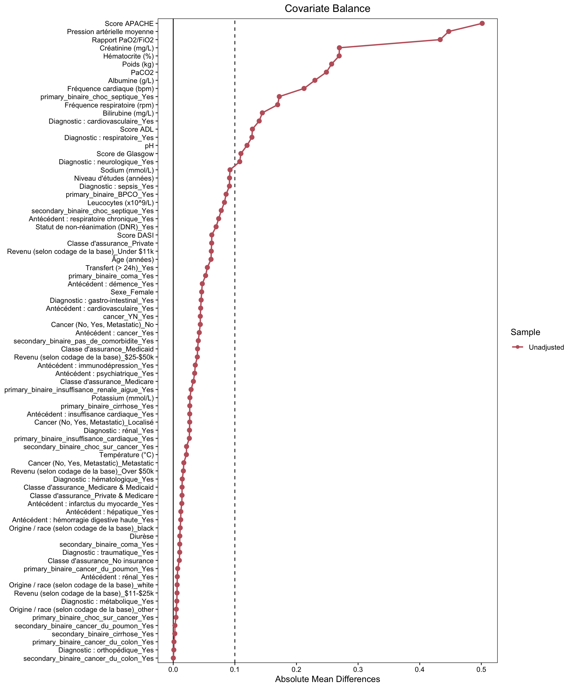
5 Appariement selon score de propension
Pour assurer la comparabilité initiale des patients, on apparie les patients selon un score de propension calculé à partir de variables “pré-traitement”.
L’objectif est de créer 2 groupes de patients qui auraient des probabilités similaires de recevoir le traitement, afin de réduire les biais de sélection.
L’identification des variables à inclure est cruciale : il s’agit d’inclure les variables qui influencent le choix du traitement ou non.
Pour l’identification des variables à inclure, on peut :
S’appuyer sur la littérature pour identifier les facteurs connus qui influencent le choix du traitement.
Consulter des experts cliniques pour obtenir des insights sur les variables pertinentes.
Utiliser des méthodes statistiques pour identifier les variables associées à la fois au traitement et à l’issue.
Dans notre cas, on a vu que quasiment toutes les variables basales étaient significativement différentes entre les groupes RHC et non-RHC, ce qui suggère que les patients ayant eu un RHC sont différents des patients n’ayant pas eu de RHC en termes de caractéristiques basales.
5.1 Quelles variables inclure dans le score de propension ?
5.1.1 Choix des auteurs de l’article original publié
Dans l’article original publié, les auteurs ont basé leur choix sur une discussion entre 7 experts en soins critiques, qui ont identifié les variables qu’ils considéraient comme étant liées à la décision de réaliser un RHC. Les variables sélectionnées sont :
Démographiques : âge (
df$age), sexe (df$sex), race (df$race), années d’éducation (df$education_years), revenu (df$income), type d’assurance médicale (df$insurance_class)Cliniques : catégorie de maladie principale (
df$primary_disease_category), catégorie de maladie secondaire (df$secondary_disease_category), 12 catégories de diagnostic d’admission (toutes les variablesdf$diagnosis_), score ADL (df$adl_score) et DASI 2 semaines (df$DASI_score) avant l’admission, statut non réanimatoire (df$dnr_status), cancer (df$cancer) (aucun, localisé, métastatique), estimation de la probabilité de survie à 2 mois (df$survival_probability_2mths), score APACHE (df$apache_score), score de Glasgow (df$glasgow_score), poids (df$weight), température (df$temperature), pression artérielle moyenne (df$mean_blood_pressure), fréquence respiratoire (df$respiratory_rate), fréquence cardiaque (df$heart_rate), rapport PaO2/FiO2 (df$pa_fi_ratio), PaCO2 (df$paco2), pH (df$ph), numération globulaire (WBC) (df$wbc), hématocrite (df$hematocrit), sodium (df$sodium), potassium (df$potassium), créatinine (df$creatinine), bilirubine (df$bilirubin), albumine (df$albumin), diurèse (df$urine_output) et 13 catégories de comorbidités (toutes les variablesdf$comorbidity_).
On voit qu’ils ont inclu la diurèse et le score ADL dans leur modèle de propension, même si ces variables avaient des taux de données manquantes très élevés (environ 75% pour le score ADL et 53% pour la diurèse).
Concernant la gestion des données manquantes, les auteurs disent avoir supposé que les données manquantes étaient des valeurs normales (“Missing measurements were assumed to have normal values”), ce qui correspond à une imputation simple (imputation par la valeur normale).
5.1.2 Choix dans notre analyse
- On propose d’inclure les mêmes variables que celles sélectionnées par les auteurs de l’article original (car étant identifiées par des experts).
5.2 Gestion des données manquantes
5.2.1 Problématique des données manquantes
- Une imputation est nécessaire avant appariement, car les méthodes d’appariement ne peuvent pas gérer les données manquantes. En effet, si une variable incluse dans le score de propension a des données manquantes, les patients avec des données manquantes pour cette variable seront exclus de l’appariement, ce qui peut réduire la taille de l’échantillon et introduire un biais si les données manquantes ne sont pas aléatoires.
5.2.2 Méthode d’imputation
Initialement :
Pour ce devoir, une imputation par la médiane avait initialement été effectuée pour les deux variables avec des données manquantes (score ADL et diurèse), ainsi que pour les autres variables avec données aberrantes.
Ce choix était basé sur une recherche dans la littérature, qui suggérait que combinait imputation multiple et appariement était “tout sauf trivial”, du fait de la gestion de la multiplicité des jeux de données imputés (Eiset and Frydenberg 2022).
Ensuite, après lectures spécialisées..
Une imputation multiple a été réalisée pour les variables avec données manquantes
Puis appariement et pooling des résultats à travers les jeux de données imputés.
De ce fait, j’ai choisi de laisser les deux méthodes dans ce devoir. Si je devais n’en choisir qu’une, je choisirais l’imputation multiple, qui est plus robuste que l’imputation par la médiane.
5.3 Partie 1 : imputation par la médiane et appariement selon score de propension
5.3.1 Imputation par la médiane pour les variables avec données manquantes
- Les variables numériques avec données manquantes ou aberrantes qui avaient été considérées comme manquantes sont imputées par la médiane de chaque variable.
5.3.2 Calcul du score de propension et appariement après imputation par la médiane
Paramètrage du score de propension :
Modèle de régression logistique avec comme variable dépendante la réalisation d’un cathéterisme (variable
rhc) et comme variables indépendantes les variables sélectionnées (toutes les variables listées ci-dessus).Appariement 1:1 sans remplacement (c’est à dire que chaque patient ayant eu un cathéterisme est apparié à un seul patient n’ayant pas eu de cathéterisme, et qu’un patient n’ayant pas eu de cathéterisme ne peut être apparié qu’à un seul patient ayant eu un cathéterisme)
Caliper = avec un caliper de \(0,2 \times \text{SD}\) du score de propension (c’est à dire que les patients sont appariés uniquement s’ils ont des scores de propension qui diffèrent de moins de \(0,2 \times \text{écart type}\) du score de propension)
Choix du Caliper basé sur Austin (2011) (Peter C. Austin 2011)
5.3.3 Évaluation de l’équilibre des covariables après appariement et de la qualité de l’appariement
L’évaluation de l’équilibre des covariables après appariement est essentielle pour vérifier que les groupes appariés sont comparables en termes de caractéristiques basales, ce qui est crucial pour réduire les biais de sélection et améliorer la validité des conclusions de l’étude.
Pour ce devoir, elle suit les recommandations citées par Garrido et al. (2014) (Garrido et al. 2014), Zhang et al. (2019) (Zhang et al. 2019), Austin (2009) (Peter C. Austin 2009), Stuart et al. (2013) (Stuart, Lee, and Leacy 2013) et Imai et al. (2008) (Imai, King, and Stuart 2008).
5.3.3.1 Distribution du score de propension avant et après appariement
On peut visualiser l’équilibre du score de propension entre les groupes RHC et non-RHC avant et après appariement à l’aide d’un histogramme de densité du score de propension pour les deux groupes.
Avant appariement, on s’attend à voir des distributions de score de propension différentes entre les groupes RHC et non-RHC, avec une distribution plus élevée de scores de propension dans le groupe RHC (car les patients ayant eu un RHC sont plus susceptibles d’avoir des caractéristiques associées à une probabilité plus élevée de recevoir un RHC).
On utilise la fonction
bal.plotdu packagecobaltpour créer ces graphiques.la variable
distancecorrespond au score de propension variant entre 0 et 1, calculé parmatchit(variabledistancedans l’objetmatchit_out)Treatment = 0 correspond au groupe non-RHC et Treatment = 1 correspond au groupe RHC
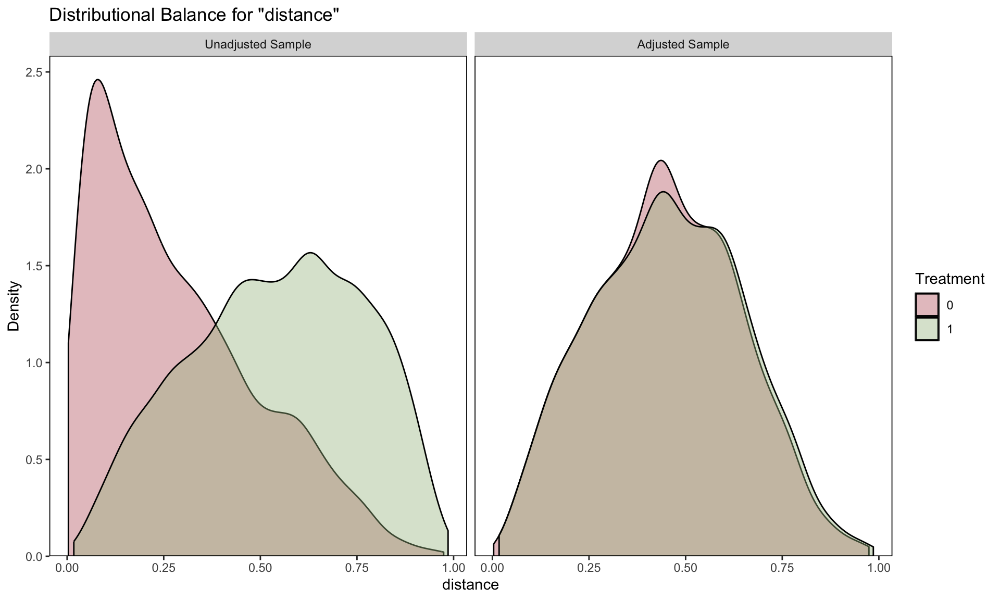
Les distributions du score de propension sont similaires après appariement, ce qui suggère que l’appariement a réussi à équilibrer les groupes
Un histogramme miroir du score de propension permet de voir la même chose.
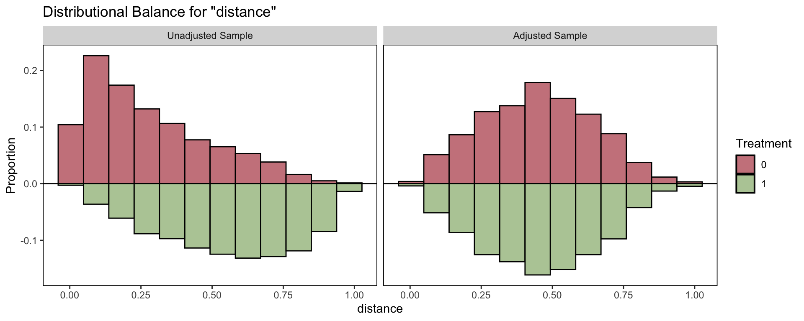
5.3.3.2 Love plot des différences moyennes standardisées pour les variables basales après appariement
Comme avant l’appariement, on peut visualiser l’équilibre des covariables basales après appariement à l’aide d’un love plot, qui montre les différences moyennes standardisées (SMD).
Après un appariement réussi, les SMD sont < 0,1 dans l’idéal.
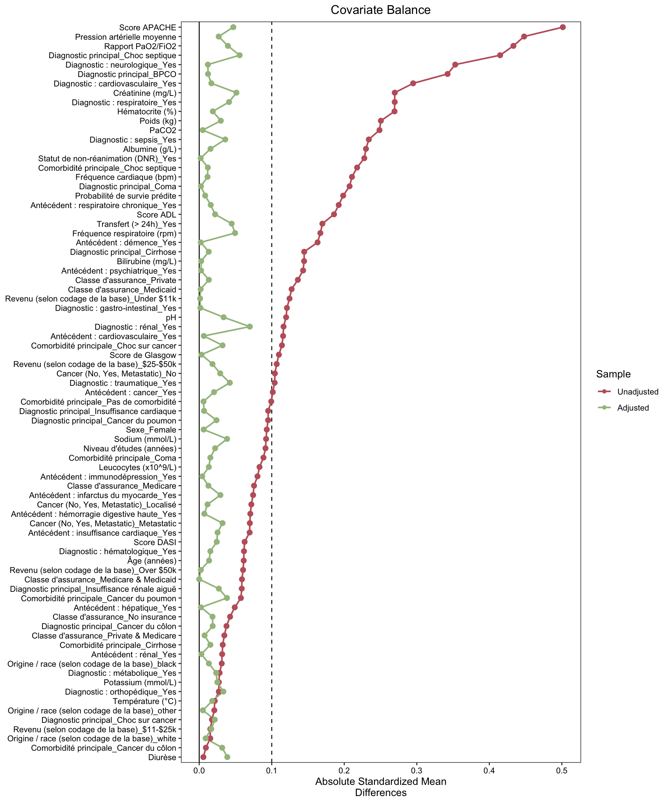
5.3.3.3 Tests comparatifs pour les variables basales après appariement
Après appariement, on peut se poser la quesion de réaliser des tests comparatifs pour les variables basales afin de vérifier l’équilibre entre les groupes appariés.
Cependant, comme on cherche à mettre en évidence l’absence de différence entre les groupes, les tests de significativité ne sont pas appropriés (les tests utilisés sont plutôt conçus pour détecter des différences).
De plus, le fait que les groupes soient appariés signifie que les échantillons sont plus petits, ce qui réduit la puissance des tests statistiques pour détecter des différences, même si elles existent.
Ces tests ont tout de même été effectués en annexe.
5.3.3.4 Conclusion sur l’évaluation de l’équilibre après appariement
Au total, l’évaluation de l’équilibre des covariables après appariement suggère que l’appariement a réussi à équilibrer les groupes RHC et non-RHC en termes de caractéristiques basales, avec des distributions de score de propension similaires et des SMD < 0.1 pour toutes les variables basales après appariement.
Cependant, il est important de noter que l’équilibre des covariables basales ne garantit pas l’absence de biais de sélection ou de confusion résiduelle, notamment du fait que certaines variables potentiellement confondantes n’ont pas été mesurées, donc pas incluses dans le score de propension.
Ce n’est donc pas une preuve absolue de la comparabilité initiale des groupes, mais cela suggère que l’appariement a permis de réduire les différences observées entre les groupes en termes de caractéristiques basales.
5.4 Partie 2 : imputation multiple et appariement selon score de propension
5.4.1 Imputation multiple avec le package mice
5.4.1.1 Justification du choix de la méthode d’imputation
Dans l’analyse initiale, une imputation simple par la médiane avait été réalisée pour les variables avec des données manquantes, ce qui ne tient pas compte de l’incertitude liée aux données manquantes.
La méthode combinant imputation multiple et appariement est plus complexe et plusieurs articles ont été nécessaires pour la réalisation de ce devoir :
“Propensity score matching after multiple imputation when a confounder has missing data” de Segalas et al., Stat Med 2023(Ségalas et al. 2023)
“Avoiding pitfalls when combining multiple imputation and propensity scores” de Granger et al., Stat Med 2019 (Granger, Sergeant, and Lunt 2019)
“Multiple imputation for propensity score analysis with covariates missing at random: some clarity on “within” and “across” methods” de Nguyen et al., American Journal of Epidemiology 2024 (Nguyen and Stuart 2024)
“How to Apply Multiple Imputation in Propensity Score Matching with Partially Observed Confounders: A Simulation Study and Practical Recommendations” de Ling et al., Journal of Modern Applied Statistical Methods 2020 (Ling et al. 2020)
“Avoiding Pitfalls When Combining Multiple Imputation and Propensity Scores” de Granger et al., Stat Med 2019 (Granger, Sergeant, and Lunt 2019)
“Model Diagnostics for Remote Access Regression Servers” de Reiter, Statistics and Computing 2003 (Reiter 2003)
“Bootstrap Inference When Using Multiple Imputation” de Schomaker et al., Stat Med 2019 (Schomaker and Heumann 2018)
Ainsi que 2 tutoriels publiés :
“
mice(): Multivariate Imputation by Chained Equations in R”, Van Buuren et al., Journal of Statistical Software 2011 (van Buuren and Groothuis-Oudshoorn 2011)“
MatchThem():: Matching and Weighting after Multiple Imputation”, Pishgar et al., The R Journal 2021 (Pishgar et al. 2021)
5.4.1.2 Résumé de la méthode
On met donc en œuvre :
Une imputation multiple
Un appariement selon score de propension dans chaque dataset imputé (= appariement “within”)
Une analyse des résultats au sein de chaque dataset imputé,
Enfin une combinaison des résultats pour obtenir des estimations globales qui tiennent compte de l’incertitude liée à l’imputation.
5.4.2 Visualisation des données manquantes
Des données manquantes sont présentes dans les variables :
mean_blood_pressure,wbc,heart_rate,respiratory_rate,weight,adl_scoreeturine_output.Les variables de date et liées au décès ne sont pas inclues dans l’imputation, car elles ne sont pas des variables de prédiction pour le score de propension, mais plutôt des variables d’issue.
5.4.3 Imputation multiple des données manquantes
Imputation multiple par “predictive mean matching” (PMM) avec
mice()Seules les variables continues avec des données manquantes sont imputées par PMM, les autres variables sont utilisées comme prédicteurs dans le modèle d’imputation mais ne sont pas elles-mêmes imputées.
Les variables crées pour les analyses précédentes (variables de date, variables de résultat intermédiaire de survie, variables binaires pour les diagnostics et comorbidités) sont exclues des prédicteurs.
5 jeux de données imputés sont générés.
NoteDéfinitions nécessaires pour interprétation du code
Objet
mids: Multiply Imputed Data Set, obtenu avecmice().Objet
mimids: Multiply Imputed Matched Data Set (après appariement dans chaque jeu imputé), obtenu avecMatchThem().Objet
mipo: Multiply Imputed Pooled Object, obtenu après combinaison des résultats des analyses dans les jeux imputés, avecpool().Objet
mira: Multiply Imputed Repeated Analysis, obtenu après analyse dans les jeux imputés, avecwith().
5.4.4 Appariement selon score de propension sur le dataset imputé
L’appariement après imputation multiple est réalisé avec la méthode “within”, c’est à dire que l’appariement est réalisé dans chaque jeu de données imputé séparément, en utilisant le score de propension estimé dans ce jeu imputé (Nguyen and Stuart 2024).
Une autre approche possible serait l’appariement “across”, qui consiste à calculer un score de propension moyen à partir des scores de propension estimés dans chaque jeu de données imputé, puis à réaliser l’appariement dans chaque jeu imputé en utilisant ce score moyen.
5.4.4.1 Appariement “within”
On réalise l’appariement dans chaque dataset imputé
Le score de propension est estimé dans chaque dataset imputé en utilisant les mêmes variables que celles utilisées pour le score de propension dans l’analyse principale (c’est à dire les variables basales utilisées pour l’appariement dans la population totale avant imputation)
Le package
MatchThem()est spécifiquement conçu pour apparier des données imputées multiples, et faciliter ensuite les analyses poolées des résultats à travers les jeux de données imputés.Il prend comme entrée un objet
mids(= objet d’imputation multiple “Multiple Imputed Data Set” créé parmice()).
5.4.5 Évaluation de la qualité de l’appariement après imputation multiple
- De la même manière que pour l’appariement réalisé après imputation par la médiane, on peut évaluer la qualité de l’appariement réalisé avec différentes visualisations.
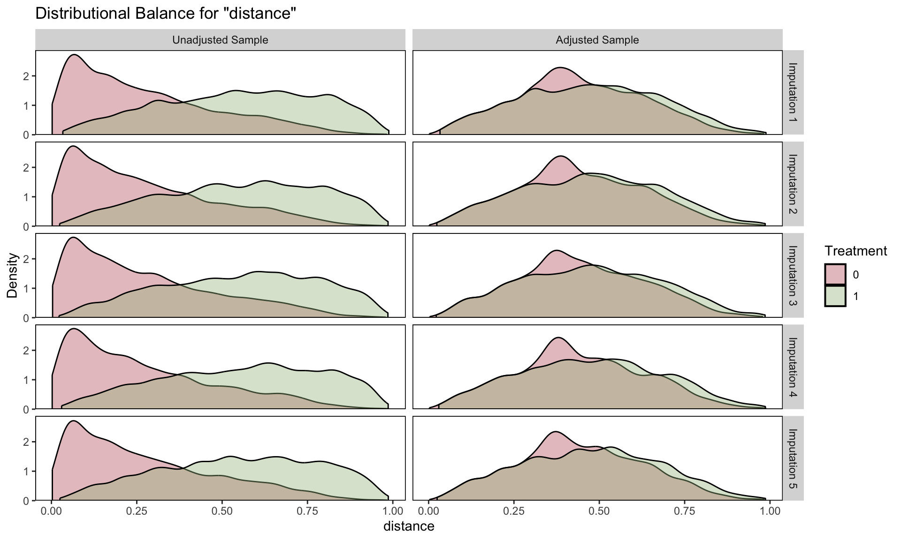
- Les distributions du score de propension sont beaucoup plus similaires après appariement, ce qui suggère que l’appariement a permis d’améliorer la comparabilité des groupes.
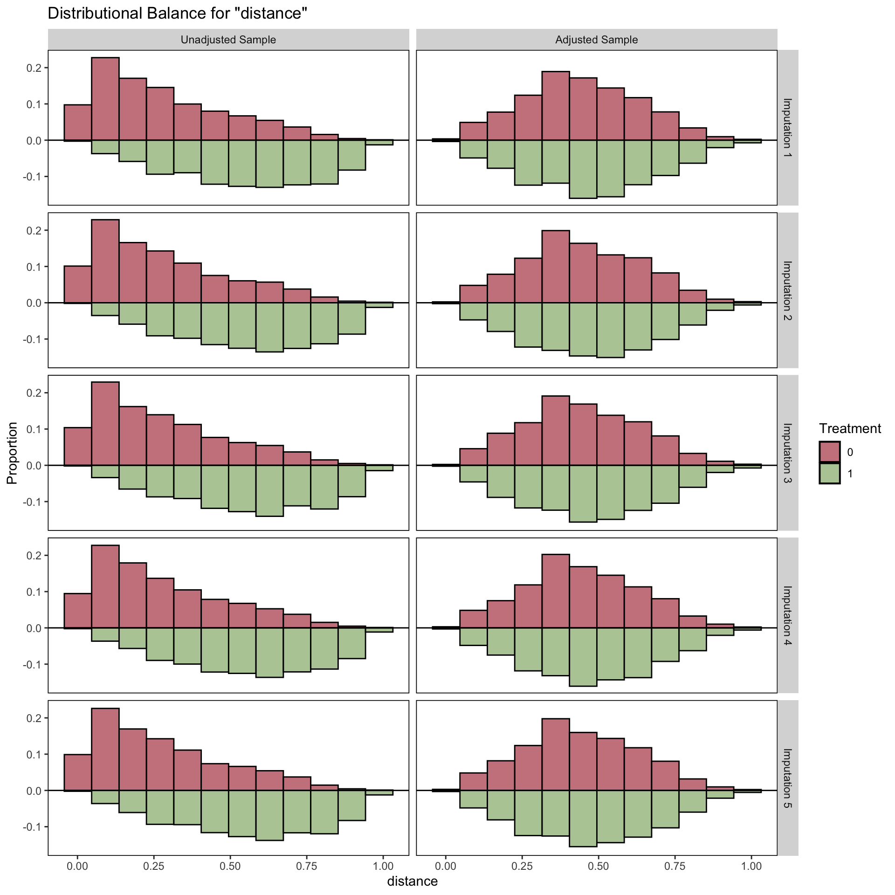
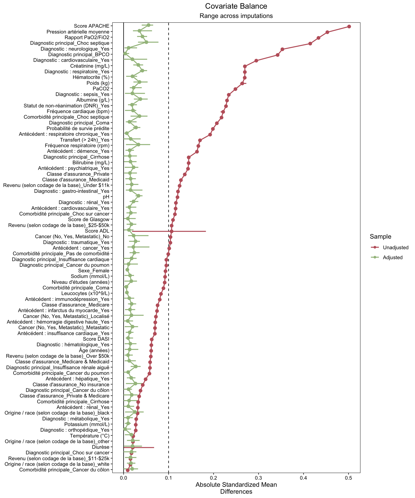
Les différences moyennes standardisées sont fournies avec une “plage” de valeurs, correspondante à l’incertitude liée à l’imputation multiple.
Elles sont toutes < 0,1.
6 Analyse après appariement
ImportantPlan de l’analyse après appariement
Les résultats obtenus après imputation par la médiane sont présentés en première partie
Puis sont présentés les résultats obtenus après imputation multiple, qui sont ceux que je considère comme les plus robustes et sur lesquels je me baserais pour tirer des conclusions.
6.1 Dans la population appariée après imputation par la médiane
6.1.1 Après imputation par la médiane : critères binaires (décès à 30 jours et à 180 jours)
| Variable | No RHC N = 1,6431 |
RHC N = 1,6431 |
p-value2 |
|---|---|---|---|
| Décès à 30 jours | 518 (32%) | 616 (37%) | <0.001 |
| Décès à 180 jours | 1,019 (62%) | 1,131 (69%) | <0.001 |
| 1 n (%) | |||
| 2 Pearson’s Chi-squared test | |||
| Critère | OR | IC 95% |
|---|---|---|
| Décès à 30 jours | 1.30 | (1.128, 1.505) |
| Décès à 180 jours | 1.35 | (1.171, 1.563) |
Il y a significativement plus de décès à 30 jours et à 180 jours dans le groupe RHC que dans le groupe non-RHC (p < 0.001 pour les deux critères).
Les OR sont significativement positifs à 30 et 180 jours et sont très proches.
6.1.2 Après imputation par la médiane : régression logistique conditionnelle
Les OR ci-dessus sont calculés sur l’échantillon apparié, mais ils restent des OR “simples” obtenus à partir d’un tableau 2 x 2 et ne tiennent pas explicitement compte des paires issues du score de propension.
Après appariement 1:1, on peut estimer un OR conditionnel par paire avec une régression logistique conditionnelle, en stratifiant sur l’identifiant de paire (
subclass).La fonction
clogitpermet de faire ça, en utilisant la variablesubclasscréée parmatchitpour indiquer les paires appariées.C’est l’aproche recommandée par plusieurs articles, qui montre qu’une régression logistique sans approche conditionnelle peut donner des estimations biaisées après appariement, car elle ne tient pas compte de la structure de dépendance induite par l’appariement, notamment Pike et al. (1980) (Pike, Hill, and Smith 1980), Wan et al. (2021) (Wan, Colditz, and Sutcliffe 2021) et Iwagami et al. (2023) (Iwagami and Shinozaki 2022).
| Critère | OR conditionnel | IC 95% | p-value |
|---|---|---|---|
| Décès à 30 jours | 1.30 | (1.13, 1.5) | <0.001 |
| Décès à 180 jours | 1.36 | (1.17, 1.57) | <0.001 |
- Même en prenant en compte la structure appariée, les OR sont très proches de ceux obtenus sans prise en compte de la structure appariée.
6.1.3 Après imputation par la médiane : survie
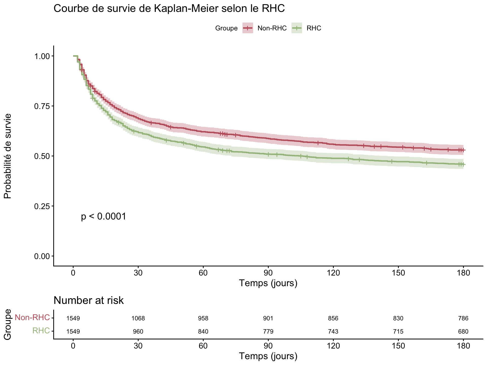
Le test du logrank indique une différence significative entre les courbes de survie des groupes RHC et non-RHC (p < 0.001), suggérant une différence persistante entre les courbes de survie après appariement.
L’hypothèse de proportionnalité des risques semble être vérifiée, car les courbes de survie ne se croisent pas et restent parallèles au fil du temps
NB : le test du log-rank “conventionnel” n’est peut-être pas idéal dans le contexte de données appariées, car il ne prend pas en compte la structure de dépendance introduite par l’appariement. S’en suit un risque d’erreur de type 1 artificiellement bas, comme cité dans un autre article d’Austin (2013) (Peter C. Austin 2014)
L’article recommande :
de réaliser un “log-rank stratifié sur les paires”, qui est un test de rang qui prend en compte la structure de dépendance introduite par l’appariement en stratifiant les paires appariées.
on pourra aussi réaliser un modèle de Cox avec estimation robuste de la variance. Nous utiliserons un estimateur sandwich (qui fonctionne en ajustant les erreurs standard pour tenir compte de la corrélation au sein des paires appariées) pour obtenir des intervalles de confiance et des p-values corrects.
6.1.3.1 Prise en compte de la structure de dépendance introduite par l’appariement
6.1.3.1.1 Test du log-rank conventionnel vs test du log-rank stratifié sur les paires
| Test | p_value |
|---|---|
| Log-rank conventionnel | < 0.001 |
| Log-rank stratifié | < 0.001 |
- Dans les 2 cas, le test du log-rank indique une différence significative entre les courbes de survie des groupes RHC et non-RHC, suggérant une différence persistante entre les courbes de survie après appariement, même en prenant en compte la structure de dépendance introduite par l’appariement.
6.1.3.2 Modèle de Cox stratifié sur les paires avec estimation robuste de la variance
| Variable | HR | IC.95. | p_value |
|---|---|---|---|
| RHC vs No RHC | 1.22 | (1.11, 1.35) | <0.001 |
Le modèle de Cox stratifié sur les paires avec estimation robuste de la variance indique que le RHC est associé à un risque de décès à 180 jours significativement plus élevé que le non-RHC.
Le risque instantané de décès à 180 jours est multiplié par 1.22 chez les patients ayant eu un RHC par rapport à ceux n’ayant pas eu de RHC, avec un intervalle de confiance à 95% allant de et une p-value < 0.001.
En détails :
Le clustering sur les paires permet de prendre en compte la structure de dépendance introduite par l’appariement, en ajustant les erreurs standard pour tenir compte de la corrélation au sein des paires appariées.
L’estimation robuste de la variance (estimateur sandwich) permet d’obtenir des intervalles de confiance et des p-values mieux estimés.
Conditions de validité du modèle de Cox (par graphiques des résidus de Schoenfeld) :
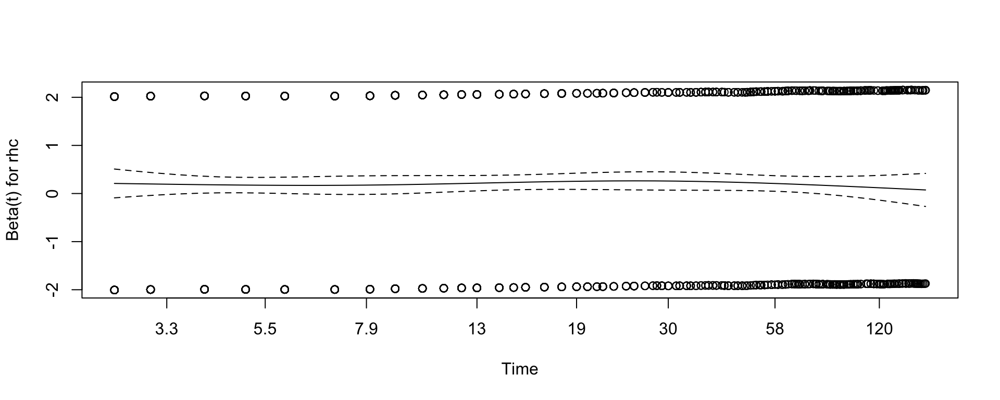
- Les résidus semblent stationnaires dans le temps, ce qui suggère que l’hypothèse de proportionalité des risques est vérifiée pour le modèle de Cox ajusté.
6.2 Dans la population appariée après imputation multiple
D’abord analyse des résultats dans chaque jeu de données imputé séparément
Puis combinaison des résultats pour obtenir des estimations globales qui tiennent compte de l’incertitude liée à l’imputation
On utilise la méthode de Rubin pour la combinaison des résultats, reposant sur le calcul de la moyenne des coefficients estimés puis l’addition des 2 composantes de la variance (Rosenbaum and Rubin 1983)
Variance moyenne au sein de chaque imputation (fluctuation due à l’échantillonnage)
Variance entre les imputations (fluctuation due à l’imputation, liée aux données manquantes)
Variance totale permet de calculer une erreur standard pooler et des intervalles de confiance poolés qui tiennent compte de l’incertitude liée à l’imputation.
6.2.1 Tableau descriptif post-appariement dans les données imputées multiples
- Effectifs des 5 jeux de données :
| Imputation | RHC_n | No_RHC_n |
|---|---|---|
| Jeu 1 | 1654 | 1654 |
| Jeu 2 | 1629 | 1629 |
| Jeu 3 | 1617 | 1617 |
| Jeu 4 | 1654 | 1654 |
| Jeu 5 | 1639 | 1639 |
6.2.2 Après imputation multiple : critères binaires (régressions logistiques conditionnelles)
D’abord régression logistique conditionnelle par paire dans chaque jeu apparié
Puis combinaison des résultats des 5 analyses en utilisant la règle de Rubin pour obtenir une estimation globale de l’odds ratio conditionnel.
Règle de Rubin : calcule la moyenne des coefficients estimés puis additioner 2 composantes de la variance :
Variance moyenne au sein de chaque imputation (fluctuation due à l’échantillonnage)
Variance entre les imputations (fluctuation due à l’imputation, liée aux données manquantes)
La variance totale obtenue permet de calculer une erreur standard poolée, donc des intervalles de confiance poolés qui tiennent compte de l’incertitude liée à l’imputation.
| Critère | OR conditionnel | IC 95% | p-value |
|---|---|---|---|
| Décès à 30 jours | 1.41 | (1.17, 1.69) | <0.001 |
| Décès à 180 jours | 1.37 | (1.16, 1.62) | <0.001 |
6.2.3 Après imputation multiple : survie
6.2.4 Kaplan Meier et log-rank
Les fonctions utilisés sont faites pour pooler des estimations de modèle avec estimateur, erreur standard et degrés de libertés.
Il n’existe pas de solution “clé en main” pour pooler des objets de survie et obtenir une courbe de Kaplan-Meier poolée, ou un test de log-rank poolé.
On prend donc le parti de présenter une courbe de Kaplan-Meier pour une imputation appariée (par exemple la première imputation).
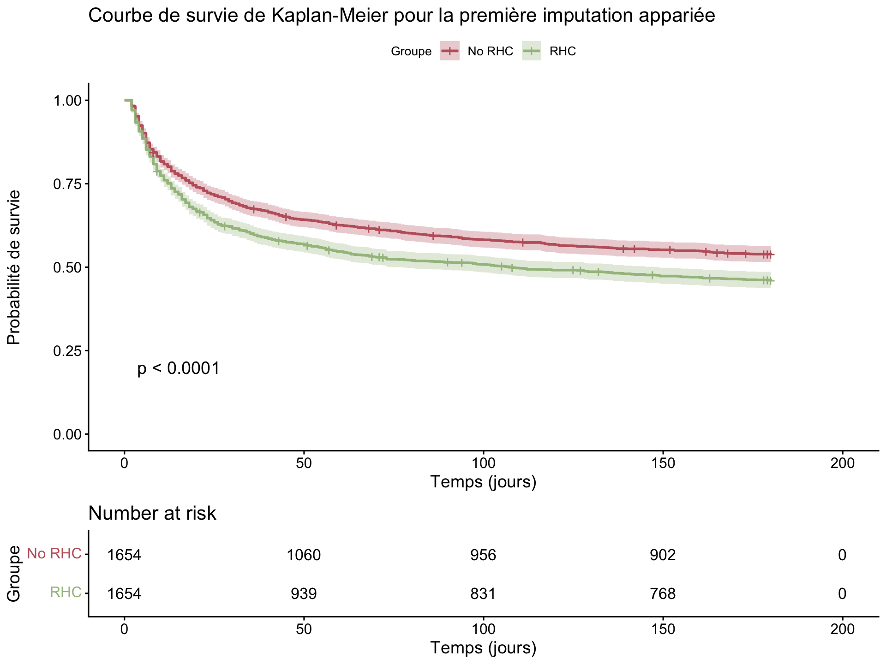
Comme le test du logrank compare les courbes, il compare ici les courbes de la première imputation appariée, et ne tient pas compte de l’incertitude liée à l’imputation multiple.
On peut calculer le log-rank pour chaque imputation appariée :
| Imputation | p.value.log.rank |
|---|---|
| Jeu 1 | <0.001 |
| Jeu 2 | <0.001 |
| Jeu 3 | <0.001 |
| Jeu 4 | <0.001 |
| Jeu 5 | <0.001 |
- En pratique, on pourrait essayer de faire une courbe de Kaplan-Meier “moyenne” en moyennant les points de survie point par point sur les 5 imputations.
6.2.4.1 Après imputation multiple : modèle de Cox poolé avec clustering sur les paires
| Variable | HR | IC 95% | p-value |
|---|---|---|---|
| RHC vs No RHC | 1.28 | (1.15, 1.42) | <0.001 |
6.3 Interprétation des résultats
Après appariement, le cathéterisme cardiaque droit (RHC) est associé à un risque de décès à 30 jours et à 180 jours significativement plus élevé que le non-RHC.
Les analyses de survie indiquent que les patients ayant eu un RHC ont une probabilité de survie à 180 jours significativement plus faible que les patients n’ayant pas eu de RHC, même après appariement.
7 Autre approche : analyse multivariée sur population totale (non appariée)
7.1 Principe
L’analyse de survie multivariée sur la population totale (non appariée) permet d’estimer l’association entre le RHC et le risque de décès à 180 jours en ajustant pour les variables basales qui pourraient confondre cette association.
Si l’association entre le RHC et le risque de décès à 180 jours reste significative après ajustement pour les variables basales, cela suggère que le RHC pourrait être associé à un risque de décès plus élevé indépendamment des caractéristiques basales des patients.
7.2 Quelles variables inclure dans le modèle de survie multivarié ?
On peut inclure dans le modèle de survie multivarié les mêmes variables basales que celles utilisées pour le score de propension, car ce sont des variables qui ont été identifiées par les auteurs de l’article original comme étant liées à la décision de réaliser un RHC.
Un seuil de 10 événements par variable est recommandé pour éviter le sur-ajustement.
Dans la cohorte totale avant appariement, 3722 patients sont décédés à 180 jours. En suivant la règle de 10 événements par variable, on pourrait inclure jusqu’à environ 372 variables dans le modèle de survie multivarié sans risque majeur de sur-ajustement.
7.3 Quelle population utiliser ?
On ne peut pas utiliser le jeu de données initiales avant imputation, car il contient des données manquantes sur les variables basales, ce qui rendrait l’ajustement du modèle de survie multivarié impossible ou biaisé.
En témoigne le tableau suivant qui simulerait l’effectif disponible pour le modèle de Cox multivarié si on utilisait les données brutes avant imputation, en incluant toutes les variables basales (84 variables) :
| Patients totaux | Patients analyses | Patients exclus | % exclus |
|---|---|---|---|
| 5735 | 578 | 5157 | 89.9 |
Il faut donc utiliser les données après imputation multiple et ajuster le modèle de Cox dans chaque jeu de données imputé, puis pooler les résultats avec la règle de Rubin
En annexe, sont présentées aussi :
les résultats d’un modèle de Cox multivarié ajusté sur les données brutes avant imputation (donc avec des données manquantes), à titre de comparaison. Ça diminue fortement l’effet car diminue énormément l’effectif, et ce n’est pas valide car > 10 événements par variable.
les résultats d’un modèle de Cox multivarié ajusté sur données brutes en retirant ces variables basales avec des données manquantes, à titre de comparaison. Le HR obtenu est quasiment le même que celui du modèle de Cox multivarié poolé après imputation multiple.
7.3.1 Modèle de Cox multivarié poolé après imputation multiple
Le modèle de Cox est ajusté dans chacun des jeux de données imputés, puis les estimateurs sont poolés avec la règle de Rubin.
Les variables basales incluses dans le modèle de Cox sont les mêmes que celles utilisées pour le score de propension, la variable d’événement est le décès à 180 jours. La variable d’exposition est le cathéterisme cardiaque droit (
rhc).Cela revient à inclure 84 variables basales (+ quelques “dummy variables” pour les catégories de variables catégorielles) dans le modèle de Cox, ce qui est faisable compte tenu du nombre d’événements disponibles.
| Variable | HR | IC95 | p_value |
|---|---|---|---|
| RHC vs No RHC | 1.28 | (1.17, 1.4) | <0.001 |
7.4 Interprétation des résultats du modèle de régression multivariée
Le risque instantané de décès à 180 jours calculé par analyse multivariée en population totale après imputation multiple est de 1.28, avec un intervalle de confiance à 95% de (1.17, 1.4).
Le RHC est associé à un risque de décès à 180 jours significativement plus élevé que le non-RHC, même après ajustement pour les variables basales dans le modèle multivarié poolé sur les jeux imputés.
8 Synthèse des estimateurs et analyse de robustesse
- Afin de vérifier la cohérence globale de nos résultats, on regroupe ci-dessous les estimateurs déjà calculés plus haut et on y ajoute le HR issu du modèle de Cox multivarié poolé après imputation multiple. Cela permet de comparer directement l’effet du RHC selon le critère étudié et la stratégie d’ajustement.
| Analyse | OR décès 30 j | OR décès 180 j | HR survie 180 j |
|---|---|---|---|
| Avant ajustement | 1.39 (1.24, 1.55) | 1.25 (1.12, 1.4) | 1.26 (1.17, 1.36) |
| Imputation médiane + appariement | 1.3 (1.13, 1.5) | 1.36 (1.17, 1.57) | 1.22 (1.11, 1.35) |
| Imputation multiple + appariement | 1.41 (1.17, 1.69) | 1.37 (1.16, 1.62) | 1.28 (1.15, 1.42) |
| Cox multivarié poolé, imputation multiple | - | - | 1.28 (1.17, 1.4) |
Pour le décès à 30 jours, les estimations restent toutes supérieures à 1, avec des OR de 1.39, 1.3 et 1.41, et des intervalles de confiance qui n’incluent pas 1. Cela suggère une augmentation du risque de décès à 30 jours chez les patients ayant eu un RHC.
Pour le décès à 180 jours, les résultats sont du même ordre de grandeur, avec des OR de 1.25, 1.36 et 1.37. L’association défavorable observée à 30 jours persiste donc à 180 jours.
Pour la survie à 180 jours, les HR sont très proches entre l’analyse brute (1.26), l’analyse appariée après imputation par la médiane (1.22), l’analyse appariée après imputation multiple (1.28) et l’analyse multivariée poolée après imputation multiple (1.28). Cette convergence renforce la robustesse du résultat, avec un excès de risque instantané de décès à 180 jours d’environ 20 à 30 % associé au RHC.
9 Au total : que conserver / que mettre dans l’analyse de sensibilité ?
Certaines analyses sont redondantes : analyse brute, imputations par la médiane et par imputation multiple, prise en compte de la structure de dépendance après appariement ou non…
Pour la partie descriptive : il n’y a pas de redondance : tout est à garder !
Pour la partie analytique :
Imputation multiple + appariement
Estimation de l’OR conditionnel par paire pour les critères binaires
Log-rank avec prise en compte de l’appariement
Modèle de Cox avec prise en compte de l’appariement
En analyse de sensibilité / supplementaire :
L’analyse brute n’a pas vraiment d’intérêt car on sait que les groupes sont très différents, mais on peut la présenter pour montrer l’effet de l’ajustement.
L’analyse multivariée sur la population totale peut être présentée en analyse de sensibilité, pour montrer que les résultats sont similaires à ceux obtenus dans la population appariée, même sans appariement.
L’imputation par la médiane est une analyse de sensibilité intéressante pour montrer que les résultats sont globalement similaires, même avec une méthode d’imputation plus simple et plus conservatrice.
Les analyses sans prise en compte de l’appariement n’ont pas vraiment d’interêt, car elles ne tiennent pas compte de la structure de dépendance induite par l’appariement, et peuvent donc être biaisées (même si les résultats sont très proches).
10 Conclusion
Le cathéterisme cardiaque droit est associé à un risque de décès à 30 jours et à 180 jours significativement plus élevé que le non-RHC, que ce soit dans la population totale en analyse “brute”, dans une population appariée sur un score de propension quelque soit la méthode d’imputation utilisée, ou dans une analyse multivariée ajustée pour les variables basales.
L’appariement a permis d’améliorer la comparabilité initiale des groupes ayant eu ou non un cathéterisme cardiaque droit en équilibrant les caractéristiques basales, mais il est important de noter que l’équilibre des covariables basales ne garantit pas l’absence de biais de sélection ou de confusion résiduelle, notamment du fait que certaines variables potentiellement confondantes n’ont pas été mesurées, donc pas incluses dans le score de propension.
L’analyse multivariable sur la population totale ajustée pour les variables basales a permis de confirmer l’association entre le RHC et le risque de décès à 180 jours en ajustant pour les variables basales qui pourraient confondre cette association, et les résultats sont similaires à ceux obtenus dans la population appariée.
Une randomisation a priori, c’est à dire avant la réalisation ou non du cathéterisme cardiaque droit, serait nécessaire pour mieux caractériser s’il existe une relation causale entre cathéterisme et risque de décès, en réduisant au maximum les biais de sélection et de confusion résiduels.
Au total : le cathéterisme cardiaque droit est associé à un risque de décès plus élevé, mais on ne peut pas conclure à une relation causale à partir de ces analyses observationnelles, même après appariement et ajustement pour les variables basales.
11 Bibliographie
Austin, Peter C. 2011. “Optimal Caliper Widths for Propensity-Score Matching When Estimating Differences in Means and Differences in Proportions in Observational Studies.” Pharmaceutical Statistics 10 (2): 150–61. https://doi.org/10.1002/pst.433.
———. 2014. “The Use of Propensity Score Methods with Survival or Time-to-Event Outcomes: Reporting Measures of Effect Similar to Those Used in Randomized Experiments.” Statistics in Medicine 33 (7): 1242–58. https://doi.org/10.1002/sim.5984.
Austin, Peter C. 2009. “Balance Diagnostics for Comparing the Distribution of Baseline Covariates Between Treatment Groups in Propensity-Score Matched Samples.” Statistics in Medicine 28 (25): 3083–3107. https://doi.org/10.1002/sim.3697.
Connors, Alfred F., Jr, Theodore Speroff, Neal V. Dawson, Charles Thomas, Frank E. Harrell Jr, Douglas Wagner, Norman Desbiens, et al. 1996. “The Effectiveness of Right Heart Catheterization in the Initial Care of Critically III Patients.” JAMA 276 (11): 889–97. https://doi.org/10.1001/jama.1996.03540110043030.
Eiset, Andreas Halgreen, and Morten Frydenberg. 2022. “Considerations for Using Multiple Imputation in Propensity Score-Weighted Analysis – A Tutorial with Applied Example.” Clinical Epidemiology 14 (July): 835–47. https://doi.org/10.2147/CLEP.S354733.
Garrido, Melissa M, Amy S Kelley, Julia Paris, Katherine Roza, Diane E Meier, R Sean Morrison, and Melissa D Aldridge. 2014. “Methods for Constructing and Assessing Propensity Scores.” Health Services Research 49 (5): 1701–20. https://doi.org/10.1111/1475-6773.12182.
Granger, Emily, Jamie C. Sergeant, and Mark Lunt. 2019. “Avoiding Pitfalls When Combining Multiple Imputation and Propensity Scores.” Statistics in Medicine 38 (26): 5120–32. https://doi.org/10.1002/sim.8355.
Imai, Kosuke, Gary King, and Elizabeth A. Stuart. 2008. “Misunderstandings Between Experimentalists and Observationalists about Causal Inference.” Journal of the Royal Statistical Society Series A: Statistics in Society 171 (2): 481–502. https://doi.org/10.1111/j.1467-985X.2007.00527.x.
Iwagami, Masao, and Tomohiro Shinozaki. 2022. “Introduction to Matching in Case-Control and Cohort Studies.” Annals of Clinical Epidemiology 4 (2): 33–40. https://doi.org/10.37737/ace.22005.
Ling, Albee, Maria Montez-Rath, Maya Mathur, Kris Kapphahn, and Manisha Desai. 2020. “How to Apply Multiple Imputation in Propensity Score Matching with Partially Observed Confounders: A Simulation Study and Practical Recommendations.” Journal of Modern Applied Statistical Methods 19 (May). https://doi.org/10.22237/jmasm/1608552120.
Nguyen, Trang Quynh, and Elizabeth A Stuart. 2024. “Multiple Imputation for Propensity Score Analysis with Covariates Missing at Random: Some Clarity on ‘Within’ and ‘Across’ Methods.” American Journal of Epidemiology 193 (10): 1470–76. https://doi.org/10.1093/aje/kwae105.
Pike, M. C., A. P. Hill, and P. G. Smith. 1980. “Bias and Efficiency in Logistic Analyses of Stratified Case-Control Studies.” International Journal of Epidemiology 9 (1): 89–95. https://doi.org/10.1093/ije/9.1.89.
Pishgar, Farhad, Noah Greifer, Clémence Leyrat, and Elizabeth Stuart. 2021. “MatchThem:: Matching and Weighting After Multiple Imputation.” The R Journal 13 (2): 292–305. https://doi.org/10.32614/RJ-2021-073.
Reiter, Jerome P. 2003. “Model Diagnostics for Remote Access Regression Servers.” Statistics and Computing.
Rosenbaum, Paul R, and Donald B Rubin. 1983. “The Central Role of the Propensity Score in Observational Studies for Causal Effects.” Biometrika 70 (1): 41–55.
Schomaker, M., and C. Heumann. 2018. “Bootstrap Inference When Using Multiple Imputation.” Statistics in Medicine 37 (14): 2252–66. https://doi.org/10.1002/sim.7654.
Ségalas, Corentin, Clémence Leyrat, James R. Carpenter, and Elizabeth Williamson. 2023. “Propensity Score Matching After Multiple Imputation When a Confounder Has Missing Data.” Statistics in Medicine 42 (7): 1082–95. https://doi.org/10.1002/sim.9658.
Stuart, Elizabeth A., Brian K. Lee, and Finbarr P. Leacy. 2013. “Prognostic Score–Based Balance Measures Can Be a Useful Diagnostic for Propensity Score Methods in Comparative Effectiveness Research.” Journal of Clinical Epidemiology, Methods for Comparative Effectiveness Research/Patient-Centered Outcomes Research: From Efficacy to Effectiveness, 66 (8, Supplement): S84–S90.e1. https://doi.org/10.1016/j.jclinepi.2013.01.013.
van Buuren, Stef, and Karin Groothuis-Oudshoorn. 2011. “Mice: Multivariate Imputation by Chained Equations in R.” Journal of Statistical Software 45 (3): 1–67. https://doi.org/10.18637/jss.v045.i03.
Wan, Fei, Graham A. Colditz, and Siobhan Sutcliffe. 2021. “Matched Versus Unmatched Analysis of Matched Case-Control Studies.” American Journal of Epidemiology 190 (9): 1859–66. https://doi.org/10.1093/aje/kwab056.
Zhang, Zhongheng, Hwa Jung Kim, Guillaume Lonjon, and Yibing Zhu. 2019. “Balance Diagnostics After Propensity Score Matching.” Annals of Translational Medicine 7 (1): 16. https://doi.org/10.21037/atm.2018.12.10.
12 Annexes
12.1 Annexe 1 : tableau comparatif post-appariement
| Variable | No RHC N = 1,643 |
RHC N = 1,643 |
p-value |
|---|---|---|---|
| Démographie / socio-économique | |||
| Âge | 61 (17) | 61 (16) | 0.5 |
| Sexe | 0.9 | ||
| Male | 944 (57%) | 939 (57%) | |
| Female | 699 (43%) | 704 (43%) | |
| Ethnie | >0.9 | ||
| black | 265 (16%) | 257 (16%) | |
| other | 104 (6.3%) | 106 (6.5%) | |
| white | 1,274 (78%) | 1,280 (78%) | |
| Années d'éducation | 11.8 (3.2) | 11.8 (3.1) | 0.7 |
| Revenu | >0.9 | ||
| Under $11k | 883 (54%) | 882 (54%) | |
| $11-$25k | 334 (20%) | 345 (21%) | |
| $25-$50k | 285 (17%) | 274 (17%) | |
| Over $50k | 141 (8.6%) | 142 (8.6%) | |
| Classe d'assurance | >0.9 | ||
| No insurance | 91 (5.5%) | 98 (6.0%) | |
| Medicaid | 159 (9.7%) | 158 (9.6%) | |
| Medicare | 383 (23%) | 392 (24%) | |
| Medicare & Medicaid | 95 (5.8%) | 95 (5.8%) | |
| Private | 537 (33%) | 527 (32%) | |
| Private & Medicare | 378 (23%) | 373 (23%) | |
| Statut fonctionnel / scores | |||
| Score ADL | 0.24 (0.91) | 0.22 (0.90) | 0.3 |
| Score DASI | 20.7 (5.4) | 20.5 (5.0) | 0.7 |
| Score Coma | 19 (29) | 19 (29) | >0.9 |
| Score APACHE | 57 (20) | 58 (20) | 0.090 |
| Statut DNR | 133 (8.1%) | 134 (8.2%) | >0.9 |
| Comorbidités | |||
| Cardiopathie | 335 (20%) | 339 (21%) | 0.9 |
| Insuffisance cardiaque congestive | 319 (19%) | 335 (20%) | 0.5 |
| Infarctus du myocarde | 52 (3.2%) | 61 (3.7%) | 0.4 |
| Maladie pulmonaire chronique | 249 (15%) | 259 (16%) | 0.7 |
| Insuffisance rénale | 84 (5.1%) | 85 (5.2%) | >0.9 |
| Insuffisance hépatique | 110 (6.7%) | 109 (6.6%) | >0.9 |
| Saignement GI supérieur | 49 (3.0%) | 47 (2.9%) | >0.9 |
| Démence | 118 (7.2%) | 119 (7.2%) | >0.9 |
| Psychologique | 83 (5.1%) | 82 (5.0%) | >0.9 |
| Malignité | 387 (24%) | 373 (23%) | 0.6 |
| Immunosuppression | 475 (29%) | 478 (29%) | >0.9 |
| Transfert | 198 (12%) | 222 (14%) | 0.2 |
| Diagnostic principal (CAT1) | |||
| BPCO | 52 (3.2%) | 57 (3.5%) | 0.7 |
| Choc septique | 396 (24%) | 434 (26%) | 0.12 |
| Choc sur cancer | 133 (8.1%) | 124 (7.5%) | 0.6 |
| Insuffisance rénale aiguë | 737 (45%) | 715 (44%) | 0.5 |
| Insuffisance cardiaque | 183 (11%) | 180 (11%) | >0.9 |
| Coma | 82 (5.0%) | 81 (4.9%) | >0.9 |
| Cirrhose | 50 (3.0%) | 46 (2.8%) | 0.8 |
| Cancer du poumon | 8 (0.5%) | 5 (0.3%) | 0.6 |
| Cancer du colon | 2 (0.1%) | 1 (<0.1%) | >0.9 |
| Comorbidité principale (CAT2) | |||
| Choc septique | 274 (17%) | 281 (17%) | 0.8 |
| Choc sur cancer | 66 (4.0%) | 56 (3.4%) | 0.4 |
| Coma | 15 (0.9%) | 18 (1.1%) | 0.7 |
| Cirrhose | 12 (0.7%) | 10 (0.6%) | 0.8 |
| Cancer du poumon | 5 (0.3%) | 2 (0.1%) | 0.4 |
| Cancer du colon | 0 (0%) | 1 (<0.1%) | >0.9 |
| secondary_binaire_pas_de_comorbidite | 1,271 (77%) | 1,275 (78%) | >0.9 |
| Diagnostics | |||
| Diagnostic respiratoire | 557 (34%) | 525 (32%) | 0.2 |
| Diagnostic cardiovasculaire | 627 (38%) | 640 (39%) | 0.7 |
| Diagnostic neurologique | 119 (7.2%) | 113 (6.9%) | 0.7 |
| Diagnostic gastro-intestinal | 294 (18%) | 295 (18%) | >0.9 |
| Diagnostic rénal | 88 (5.4%) | 114 (6.9%) | 0.067 |
| Diagnostic métabolique | 78 (4.7%) | 70 (4.3%) | 0.6 |
| Diagnostic hématologique | 106 (6.5%) | 100 (6.1%) | 0.7 |
| Diagnostic sepsis | 342 (21%) | 365 (22%) | 0.3 |
| Diagnostic traumatique | 14 (0.9%) | 21 (1.3%) | 0.3 |
| Diagnostic orthopédique | 1 (<0.1%) | 3 (0.2%) | 0.6 |
| Cancer | |||
| Cancer (Oui/Non) | 403 (25%) | 383 (23%) | 0.4 |
| Type de cancer | 0.6 | ||
| No | 1,240 (75%) | 1,260 (77%) | |
| Localisé | 289 (18%) | 282 (17%) | |
| Metastatic | 114 (6.9%) | 101 (6.1%) | |
| Paramètres cliniques | |||
| Poids | 75 (20) | 76 (19) | 0.2 |
| Pression artérielle moyenne | 74 (34) | 73 (34) | 0.4 |
| Fréquence cardiaque | 121 (37) | 121 (35) | >0.9 |
| Fréquence respiratoire | 29 (13) | 28 (14) | 0.15 |
| Température | 37.67 (1.88) | 37.64 (1.73) | 0.5 |
| Ratio Pa/FI | 210 (108) | 206 (108) | 0.3 |
| Diurèse | 2,104 (1,086) | 2,062 (1,119) | 0.2 |
| Biologie | |||
| Globules blancs | 16 (12) | 16 (12) | 0.5 |
| Albumine | 3.04 (0.69) | 3.03 (0.96) | 0.5 |
| Hématocrite | 31 (8) | 31 (7) | 0.6 |
| Bilirubine | 2.6 (5.6) | 2.6 (5.4) | 0.2 |
| Créatinine | 2.24 (2.27) | 2.34 (2.02) | <0.001 |
| Sodium | 137 (8) | 136 (7) | 0.5 |
| Potassium | 4.03 (1.03) | 4.05 (1.00) | 0.5 |
| PaCO2 | 37 (11) | 37 (11) | 0.5 |
| pH | 7.39 (0.11) | 7.39 (0.11) | 0.3 |
| 1 Mean (SD); n (%) | |||
| 2 Wilcoxon apparié (continues), McNemar (binaires). |
12.2 Annexe 2 : Analyse multivariée en population totale, sans imputation (données brutes)
12.2.1 Sans imputation, avec toutes les variables basales (donc avec données manquantes)
- Tableau de l’effectif disponible pour le modèle de Cox multivarié si on utilise les données brutes avant imputation, en incluant toutes les variables basales (84 variables) :
| Patients totaux | Patients analyses | Patients exclus | % exclus |
|---|---|---|---|
| 5735 | 578 | 5157 | 89.9 |
| Variable | HR | IC95 | p_value |
|---|---|---|---|
| RHC vs No RHC | 1.27 | (0.78, 2.07) | 0.32847 |
L’exclusion des observations avec données manquantes dans le modèle de Cox multivarié (donc en utilisant les données brutes avant imputation) diminue fortement l’effectif disponible pour l’analyse, et le HR obtenu est de 1.27 avec un intervalle de confiance à 95% de (0.78, 2.07) n’est pas significatif.
Cependant, cette analyse n’est pas valide car elle ne respecte pas la règle de 10 événements par variable, et elle est très biaisée du fait de l’exclusion des patients avec données manquantes.
12.2.2 Sans imputation, en retirant les variables basales avec des données manquantes
- Tableau de l’effectif disponible pour le modèle de Cox multivarié si on utilise les données brutes avant imputation, en excluant les variables basales avec des données manquantes (donc en retirant les variables avec des données manquantes du modèle) :
| Patients totaux | Patients analyses | Patients exclus | % exclus |
|---|---|---|---|
| 5735 | 5735 | 0 | 0 |
| Variable | HR | IC95 | p_value |
|---|---|---|---|
| RHC vs No RHC | 1.26 | (1.16, 1.37) | < 0.001 |
- Finalement, une exclusion des variables avec des données manquantes dans le modèle de Cox multivarié ne change pas significativement les résultats, avec un HR de 1.26 et un intervalle de confiance à 95% de (1.16, 1.37).
12.3 code R
library(forecast)
library(cobalt)
library(plotrix)
library(randomForest)
library(dplyr)
library(tidyr)
library(epiR)
library(viridisLite)
library(ggplot2)
library(binom)
library(survminer)
library(MatchThem)
library(pROC)
library(treemap)
library(psy)
library(MASS)
library(rpart)
library(rpart.plot)
library(plotly)
library(lmerTest)
library(psych)
library(lme4)
library(prettyR)
library(zoo)
library(kableExtra)
library(gtsummary)
library(lattice)
library(survey)
library(corrplot)
library(mice)
library(paletteer)
library(skimr)
library(nord)
library(wesanderson)
library(lubridate)
library(qgraph)
library(nlme)
library(pwr)
library(ape)
library(survival)
library(gmodels)
library(httpgd)
library(e1071)
library(psy)
library(reshape2)
knitr::opts_chunk$set(echo = TRUE)
if (knitr::is_latex_output()) {
knitr::opts_chunk$set(dev = "pdf", fig.path = "devoir_epidemio_files/figure-pdf/")
}
#file_qmd <- "/Users/thomashusson/Documents/Projets/M2biostatistiques/devoir_stats_avancees/devoir_stats_avancees.qmd"
#extraction du code R pour le mettre à la fin du quarto md
detect_qmd_path <- function() {
candidates <- c(
knitr::current_input(),
Sys.getenv("QUARTO_DOCUMENT_PATH", ""),
Sys.getenv("QUARTO_INPUT_FILE", ""),
"devoir_epidemio.qmd",
file.path("S2", "devoir_epidemio", "devoir_epidemio.qmd")
)
candidates <- unique(candidates[nzchar(candidates)])
for (p in candidates) {
if (file.exists(p)) return(normalizePath(p, winslash = "/", mustWork = TRUE))
}
NA_character_
}
file_qmd <- detect_qmd_path()
if (is.na(file_qmd)) {
warning("Extraction des chunks R sautée : impossible de localiser le .qmd (problème de working directory / IDE).")
} else {
lines <- readLines(file_qmd, warn = FALSE)
# trouver les débuts de chunks R
starts <- grep("^```\\{r\\b", lines)
code_r <- character(0)
for (s in starts) {
if (s >= length(lines)) next
rel_end <- which(grepl("^```\\s*$", lines[(s + 1):length(lines)]))[1]
if (is.na(rel_end)) {
warning("Extraction des chunks R partielle : fin de chunk manquante après la ligne ", s, ".")
next
}
e <- s + rel_end
# lignes à l’intérieur du chunk (excluant les balises de début et fin)
chunk_lines <- lines[(s + 1):(e - 1)]
# filtrer : garder seulement les lignes qui **ne sont pas des options Quarto**
real_code <- chunk_lines[!grepl("^\\s*#\\|", chunk_lines)]
code_r <- c(code_r, real_code, "")
}
outfile <- file.path(dirname(file_qmd), "all_chunks_code.R")
cat(code_r, file = outfile, sep = "\n")
}
# Charger les données
df <- read.csv2("/Users/thomashusson/Documents/Projets/M2biostatistiques/S2/devoir_epidemio/rhc devoir épidémio-RC csv.csv", header = TRUE, stringsAsFactors = FALSE)
#linux
#df <- read.csv2("/home/thomashusson/Documents/Projets/M2biostatistiques/S2/devoir_epidemio/rhc devoir épidémio-RC csv.csv", header = TRUE, stringsAsFactors = FALSE)
summary(df)
colnames(df)
skimr::skim(df)
sum(is.na(df))
# Supprimer les colonnes inutile (ROWNAMES et PTID) en appelant explictement les noms des colonnes à supprimer
df <- df[, !(colnames(df) %in% c("ROWNAMES", "PTID"))]
colnames(df)
# Renommer les colonnes
# syntaxe : names(df)[names(df) == "ANCIEN_NOM"] <- "NOUVEAU_NOM"
names(df)[names(df) == "CAT1"] <- "primary_disease_category"
names(df)[names(df) == "CAT2"] <- "secondary_disease_category"
names(df)[names(df) == "CA"] <- "cancer"
names(df)[names(df) == "SADMDTE"] <- "date_admission"
names(df)[names(df) == "DSCHDTE"] <- "date_discharge"
names(df)[names(df) == "DTHDTE"] <- "date_death"
names(df)[names(df) == "LSTCTDTE"] <- "date_last_news"
names(df)[names(df) == "DEATH"] <- "death_180d"
names(df)[names(df) == "CARDIOHX"] <- "comorbidity_cardiovascular"
names(df)[names(df) == "CHFHX"] <- "comorbidity_congestive_heart"
names(df)[names(df) == "DEMENTHX"] <- "comorbidity_dementia"
names(df)[names(df) == "PSYCHHX"] <- "comorbidity_psych"
names(df)[names(df) == "CHRPULHX"] <- "comorbidity_chronic_pulmonary"
names(df)[names(df) == "RENALHX"] <- "comorbidity_renal"
names(df)[names(df) == "LIVERHX"] <- "comorbidity_liver"
names(df)[names(df) == "GIBLEDHX"] <- "comorbidity_upper_gi_bleeding"
names(df)[names(df) == "MALIGHX"] <- "comorbidity_malignancy"
names(df)[names(df) == "IMMUNHX"] <- "comorbidity_immunosuppression"
names(df)[names(df) == "TRANSHX"] <- "comorbidity_transfer"
names(df)[names(df) == "AMIHX"] <- "comorbidity_myocardial_infarction"
names(df)[names(df) == "AGE"] <- "age"
names(df)[names(df) == "SEX"] <- "sex"
names(df)[names(df) == "EDU"] <- "education_years"
names(df)[names(df) == "SURV2MD1"] <- "survival_probability_2mths"
names(df)[names(df) == "DAS2D3PC"] <- "DASI_score"
names(df)[names(df) == "T3D30"] <- "time_to_death_if_death_within_30d"
names(df)[names(df) == "DTH30"] <- "death_30d"
names(df)[names(df) == "APS1"] <- "apache_score"
names(df)[names(df) == "SCOMA1"] <- "glasgow_score"
names(df)[names(df) == "MEANBP1"] <- "mean_blood_pressure"
names(df)[names(df) == "WBLC1"] <- "wbc"
names(df)[names(df) == "HRT1"] <- "heart_rate"
names(df)[names(df) == "RESP1"] <- "respiratory_rate"
names(df)[names(df) == "TEMP1"] <- "temperature"
names(df)[names(df) == "PAFI1"] <- "pa_fi_ratio"
names(df)[names(df) == "ALB1"] <- "albumin"
names(df)[names(df) == "HEMA1"] <- "hematocrit"
names(df)[names(df) == "BILI1"] <- "bilirubin"
names(df)[names(df) == "CREA1"] <- "creatinine"
names(df)[names(df) == "SOD1"] <- "sodium"
names(df)[names(df) == "POT1"] <- "potassium"
names(df)[names(df) == "PACO21"] <- "paco2"
names(df)[names(df) == "PH1"] <- "ph"
names(df)[names(df) == "SWANG1"] <- "rhc"
names(df)[names(df) == "WTKILO1"] <- "weight"
names(df)[names(df) == "DNR1"] <- "dnr_status"
names(df)[names(df) == "NINSCLAS"] <- "insurance_class"
names(df)[names(df) == "RESP"] <- "diagnosis_respiratory"
names(df)[names(df) == "CARD"] <- "diagnosis_cardiovascular"
names(df)[names(df) == "NEURO"] <- "diagnosis_neurological"
names(df)[names(df) == "GASTR"] <- "diagnosis_gastrointestinal"
names(df)[names(df) == "RENAL"] <- "diagnosis_renal"
names(df)[names(df) == "META"] <- "diagnosis_metabolic"
names(df)[names(df) == "HEMA"] <- "diagnosis_hematologic"
names(df)[names(df) == "SEPS"] <- "diagnosis_sepsis"
names(df)[names(df) == "TRAUMA"] <- "diagnosis_trauma"
names(df)[names(df) == "ORTHO"] <- "diagnosis_orthopedic"
names(df)[names(df) == "ADLD3P"] <- "adl_score"
names(df)[names(df) == "URIN1"] <- "urine_output"
names(df)[names(df) == "RACE"] <- "race"
names(df)[names(df) == "INCOME"] <- "income"
# Ajout d'une description des variables
desc <- c(
primary_disease_category = "Diagnostic principal",
secondary_disease_category = "Comorbidité principale",
cancer = "Cancer (No, Yes, Metastatic)",
date_admission = "Date d'admission",
date_discharge = "Date de sortie",
date_death = "Date de décès",
date_last_news = "Date des dernières nouvelles",
death_180d = "Décès à 180 jours (Yes/No)",
comorbidity_cardiovascular = "Antécédent : cardiovasculaire",
comorbidity_congestive_heart = "Antécédent : insuffisance cardiaque",
comorbidity_dementia = "Antécédent : démence",
comorbidity_psych = "Antécédent : psychiatrique",
comorbidity_chronic_pulmonary = "Antécédent : respiratoire chronique",
comorbidity_renal = "Antécédent : rénal",
comorbidity_liver = "Antécédent : hépatique",
comorbidity_upper_gi_bleeding = "Antécédent : hémorragie digestive haute",
comorbidity_malignancy = "Antécédent : cancer",
comorbidity_immunosuppression = "Antécédent : immunodépression",
comorbidity_transfer = "Transfert (> 24h)",
comorbidity_myocardial_infarction = "Antécédent : infarctus du myocarde",
age = "Âge (années)",
sex = "Sexe",
education_years = "Niveau d'études (années)",
survival_probability_2mths = "Probabilité de survie prédite",
DASI_score = "Score DASI",
death_30d = "Décès à 30 jours",
apache_score = "Score APACHE",
glasgow_score = "Score de Glasgow",
mean_blood_pressure = "Pression artérielle moyenne",
wbc = "Leucocytes (x10^9/L)",
heart_rate = "Fréquence cardiaque (bpm)",
respiratory_rate = "Fréquence respiratoire (rpm)",
temperature = "Température (°C)",
pa_fi_ratio = "Rapport PaO2/FiO2",
albumin = "Albumine (g/L)",
hematocrit = "Hématocrite (%)",
bilirubin = "Bilirubine (mg/L)",
creatinine = "Créatinine (mg/L)",
sodium = "Sodium (mmol/L)",
potassium = "Potassium (mmol/L)",
paco2 = "PaCO2",
ph = "pH",
rhc = "Cathétérisme cardiaque droit (RHC)",
weight = "Poids (kg)",
dnr_status = "Statut de non-réanimation (DNR)",
insurance_class = "Classe d'assurance",
diagnosis_respiratory = "Diagnostic : respiratoire",
diagnosis_cardiovascular = "Diagnostic : cardiovasculaire",
diagnosis_neurological = "Diagnostic : neurologique",
diagnosis_gastrointestinal = "Diagnostic : gastro-intestinal",
diagnosis_renal = "Diagnostic : rénal",
diagnosis_metabolic = "Diagnostic : métabolique",
diagnosis_hematologic = "Diagnostic : hématologique",
diagnosis_sepsis = "Diagnostic : sepsis",
diagnosis_trauma = "Diagnostic : traumatique",
diagnosis_orthopedic = "Diagnostic : orthopédique",
adl_score = "Score ADL",
urine_output = "Diurèse",
race = "Origine / race (selon codage de la base)",
income = "Revenu (selon codage de la base)"
)
rename_map <- data.frame(
old_name = c(
"CAT1", "CAT2", "CA", "SADMDTE", "DSCHDTE", "DTHDTE", "LSTCTDTE", "DEATH",
"CARDIOHX", "CHFHX", "DEMENTHX", "PSYCHHX", "CHRPULHX", "RENALHX", "LIVERHX",
"GIBLEDHX", "MALIGHX", "IMMUNHX", "TRANSHX", "AMIHX",
"AGE", "SEX", "EDU", "SURV2MD1", "DAS2D3PC", "T3D30", "DTH30",
"APS1", "SCOMA1", "MEANBP1", "WBLC1", "HRT1", "RESP1", "TEMP1", "PAFI1",
"ALB1", "HEMA1", "BILI1", "CREA1", "SOD1", "POT1", "PACO21", "PH1",
"SWANG1", "WTKILO1", "DNR1", "NINSCLAS",
"RESP", "CARD", "NEURO", "GASTR", "RENAL", "META", "HEMA", "SEPS",
"TRAUMA", "ORTHO",
"ADLD3P", "URIN1", "RACE", "INCOME"
),
new_name = c(
"primary_disease_category", "secondary_disease_category", "cancer", "date_admission",
"date_discharge", "date_death", "date_last_news", "death_180d",
"comorbidity_cardiovascular", "comorbidity_congestive_heart", "comorbidity_dementia",
"comorbidity_psych", "comorbidity_chronic_pulmonary", "comorbidity_renal",
"comorbidity_liver", "comorbidity_upper_gi_bleeding", "comorbidity_malignancy",
"comorbidity_immunosuppression", "comorbidity_transfer", "comorbidity_myocardial_infarction",
"age", "sex", "education_years", "survival_probability_2mths", "DASI_score",
"time_to_death_if_death_within_30d", "death_30d",
"apache_score", "glasgow_score", "mean_blood_pressure", "wbc", "heart_rate",
"respiratory_rate", "temperature", "pa_fi_ratio", "albumin", "hematocrit",
"bilirubin", "creatinine", "sodium", "potassium", "paco2", "ph",
"rhc", "weight", "dnr_status", "insurance_class",
"diagnosis_respiratory", "diagnosis_cardiovascular", "diagnosis_neurological",
"diagnosis_gastrointestinal", "diagnosis_renal", "diagnosis_metabolic",
"diagnosis_hematologic", "diagnosis_sepsis", "diagnosis_trauma", "diagnosis_orthopedic",
"adl_score", "urine_output", "race", "income"
),
stringsAsFactors = FALSE
)
rename_map$Description <- unname(desc[rename_map$new_name])
escape_latex <- function(x) {
x <- gsub("\\\\", "\\\\textbackslash{}", x)
x <- gsub("([#$%&_{}])", "\\\\\\1", x, perl = TRUE)
x <- gsub("~", "\\\\textasciitilde{}", x, fixed = TRUE)
x <- gsub("\\^", "\\\\textasciicircum{}", x, perl = TRUE)
x
}
rename_map[] <- lapply(rename_map, escape_latex)
rename_map$old_name <- gsub("\\\\_", "\\\\_\\\\allowbreak{}", rename_map$old_name)
rename_map$new_name <- gsub("\\\\_", "\\\\_\\\\allowbreak{}", rename_map$new_name)
header <- c(
"\\begin{longtable}{p{2.4cm}p{4.3cm}p{7.3cm}}",
"\\caption{Tableau de correspondance des noms de variables}\\\\",
"\\toprule",
"Nom avant & Nom après & Description\\\\",
"\\midrule",
"\\endfirsthead",
"\\toprule",
"Nom avant & Nom après & Description\\\\",
"\\midrule",
"\\endhead",
"\\bottomrule",
"\\endfoot"
)
rows <- apply(rename_map, 1, function(row) {
paste0(row[["old_name"]], " & ", row[["new_name"]], " & ", row[["Description"]], "\\\\")
})
footer <- "\\end{longtable}"
cat(paste(c(header, rows, footer), collapse = "\n"))
missing_data_summary <- data.frame(
variable = names(colSums(is.na(df))),
missing_nombre = colSums(is.na(df)),
missing_pourcentage = round(colSums(is.na(df)) / nrow(df) * 100, 1)
)
missing_data_summary <- missing_data_summary[missing_data_summary$missing_nombre > 0, ]
#affichage du tableau des données manquantes avec kableExtra pour un rendu plus lisible
missing_data_summary %>%
arrange(desc(missing_pourcentage)) %>%
kable(
col.names = c("Variable", "Nombre de données manquantes", "Pourcentage de données manquantes"),
align = c("l", "r", "r"),
row.names = FALSE
) %>%
kable_styling(full_width = FALSE, position = "center")
# Conversion des dates (les chaînes vides -> NA pour éviter les warnings)
df$date_admission[df$date_admission == ""] <- NA
df$date_discharge[df$date_discharge == ""] <- NA
df$date_death[df$date_death == ""] <- NA
df$date_last_news[df$date_last_news == ""] <- NA
# Conversion en format date
df$date_admission <- as.Date(df$date_admission, format = "%d/%m/%Y")
df$date_discharge <- as.Date(df$date_discharge, format = "%d/%m/%Y")
df$date_death <- as.Date(df$date_death, format = "%d/%m/%Y")
df$date_last_news <- as.Date(df$date_last_news, format = "%d/%m/%Y")
str(df$date_death)
df$date_death <- as.Date(df$date_death, format = "%d/%m/%Y")
str(df$date_death)
# Facteurs et numériques
df$death_180d <- factor(df$death_180d, levels = c("No", "Yes"))
df$primary_disease_category <- factor(
df$primary_disease_category,
levels = c("COPD","MOSF w/Sepsis","MOSF w/Malignancy","ARF","CHF","Coma","Cirrhosis","Lung Cancer","Colon Cancer"),
labels = c("BPCO","Choc septique","Choc sur cancer","Insuffisance rénale aiguë","Insuffisance cardiaque","Coma","Cirrhose","Cancer du poumon","Cancer du côlon")
)
unique(df$primary_disease_category)
table(df$primary_disease_category)
df$secondary_disease_category <- factor(
df$secondary_disease_category,
levels = c("", "MOSF w/Sepsis","MOSF w/Malignancy", "Coma","Cirrhosis","Lung Cancer","Colon Cancer"),
labels = c("Pas de comorbidité","Choc septique","Choc sur cancer", "Coma","Cirrhose","Cancer du poumon","Cancer du côlon")
)
df$comorbidity_cardiovascular <- factor(df$comorbidity_cardiovascular, levels = c(0, 1), labels = c("No", "Yes"))
df$comorbidity_congestive_heart <- factor(df$comorbidity_congestive_heart, levels = c(0, 1), labels = c("No", "Yes"))
df$comorbidity_dementia <- factor(df$comorbidity_dementia, levels = c(0, 1), labels = c("No", "Yes"))
df$comorbidity_psych <- factor(df$comorbidity_psych, levels = c(0, 1), labels = c("No", "Yes"))
df$comorbidity_chronic_pulmonary <- factor(df$comorbidity_chronic_pulmonary, levels = c(0, 1), labels = c("No", "Yes"))
df$comorbidity_renal <- factor(df$comorbidity_renal, levels = c(0, 1), labels = c("No", "Yes"))
df$comorbidity_liver <- factor(df$comorbidity_liver, levels = c(0, 1), labels = c("No", "Yes"))
df$comorbidity_upper_gi_bleeding <- factor(df$comorbidity_upper_gi_bleeding, levels = c(0, 1), labels = c("No", "Yes"))
df$comorbidity_malignancy <- factor(df$comorbidity_malignancy, levels = c(0, 1), labels = c("No", "Yes"))
df$comorbidity_immunosuppression <- factor(df$comorbidity_immunosuppression, levels = c(0, 1), labels = c("No", "Yes"))
df$comorbidity_transfer <- factor(df$comorbidity_transfer, levels = c(0, 1), labels = c("No", "Yes"))
df$comorbidity_myocardial_infarction <- factor(df$comorbidity_myocardial_infarction, levels = c(0, 1), labels = c("No", "Yes"))
#recodage de la variable cancer (No, Yes, Metastatic en No, Localisé, Metastatic)
df$cancer <- factor(df$cancer, levels = c("No", "Yes", "Metastatic"), labels = c("No", "Localisé", "Metastatic"))
#créer une variable binaire pour le cancer (Yes/No) à partir de la variable cancer (No, Localisé, Metastatic, codé Yes si Localisé ou Metastatic, No sinon)
df$cancer_YN <- ifelse(df$cancer %in% c("Localisé", "Metastatic"), "Yes", "No")
table(df$cancer_YN)
df$sex <- factor(df$sex, levels = c("Male", "Female"))
df$death_30d <- factor(df$death_30d, levels = c("No", "Yes"))
df$apache_score <- as.numeric(df$apache_score)
df$glasgow_score <- as.numeric(df$glasgow_score)
df$heart_rate <- as.numeric(df$heart_rate)
df$sodium <- as.numeric(df$sodium)
df$dnr_status <- factor(df$dnr_status, levels = c("No", "Yes"))
df$insurance_class <- factor(
df$insurance_class,
levels = c(
"No insurance",
"Medicaid",
"Medicare",
"Medicare & Medicaid",
"Private",
"Private & Medicare"
)
)
df$diagnosis_respiratory <- factor(df$diagnosis_respiratory, levels = c("No", "Yes"))
df$diagnosis_cardiovascular <- factor(df$diagnosis_cardiovascular, levels = c("No", "Yes"))
df$diagnosis_neurological <- factor(df$diagnosis_neurological, levels = c("No", "Yes"))
df$diagnosis_gastrointestinal <- factor(df$diagnosis_gastrointestinal, levels = c("No", "Yes"))
df$diagnosis_renal <- factor(df$diagnosis_renal, levels = c("No", "Yes"))
df$diagnosis_metabolic <- factor(df$diagnosis_metabolic, levels = c("No", "Yes"))
df$diagnosis_hematologic <- factor(df$diagnosis_hematologic, levels = c("No", "Yes"))
df$diagnosis_sepsis <- factor(df$diagnosis_sepsis, levels = c("No", "Yes"))
df$diagnosis_trauma <- factor(df$diagnosis_trauma, levels = c("No", "Yes"))
df$diagnosis_orthopedic <- factor(df$diagnosis_orthopedic, levels = c("No", "Yes"))
df$adl_score <- as.numeric(df$adl_score)
df$race <- factor(df$race)
df$income <- as.character(df$income)
df$income[df$income == "> $50k"] <- "Over $50k"
df$income <- factor(df$income, levels = c("Under $11k", "$11-$25k", "$25-$50k", "Over $50k"))
df$rhc <- factor(df$rhc, levels = c("No RHC", "RHC"))
#recodage en binaire des primary_disease_category et secondary_disease_category (présence ou absence de chaque catégorie de maladie)
df$primary_binaire_BPCO <- ifelse(df$primary_disease_category == "BPCO", "Yes", "No")
df$primary_binaire_choc_septique <- ifelse(df$primary_disease_category == "Choc septique", "Yes", "No")
df$primary_binaire_choc_sur_cancer <- ifelse(df$primary_disease_category == "Choc sur cancer", "Yes", "No")
df$primary_binaire_insuffisance_renale_aigue <- ifelse(df$primary_disease_category == "Insuffisance rénale aiguë", "Yes", "No")
df$primary_binaire_insuffisance_cardiaque <- ifelse(df$primary_disease_category == "Insuffisance cardiaque", "Yes", "No")
df$primary_binaire_coma <- ifelse(df$primary_disease_category == "Coma", "Yes", "No")
df$primary_binaire_cirrhose <- ifelse(df$primary_disease_category == "Cirrhose", "Yes", "No")
df$primary_binaire_cancer_du_poumon <- ifelse(df$primary_disease_category == "Cancer du poumon", "Yes", "No")
df$primary_binaire_cancer_du_colon <- ifelse(df$primary_disease_category == "Cancer du côlon", "Yes", "No")
#recodage de la variable secondary_disease_category en binaire (présence ou absence de chaque catégorie de maladie)
df$secondary_binaire_choc_septique <- ifelse(df$secondary_disease_category == "Choc septique", "Yes", "No")
df$secondary_binaire_choc_sur_cancer <- ifelse(df$secondary_disease_category == "Choc sur cancer", "Yes", "No")
df$secondary_binaire_coma <- ifelse(df$secondary_disease_category == "Coma", "Yes", "No")
df$secondary_binaire_cirrhose <- ifelse(df$secondary_disease_category == "Cirrhose", "Yes", "No")
df$secondary_binaire_cancer_du_poumon <- ifelse(df$secondary_disease_category == "Cancer du poumon", "Yes", "No")
df$secondary_binaire_cancer_du_colon <- ifelse(df$secondary_disease_category == "Cancer du côlon", "Yes", "No")
df$secondary_binaire_pas_de_comorbidite <- ifelse(df$secondary_disease_category == "Pas de comorbidité", "Yes", "No")
str(df)
#vérification du format des datese
is.Date(df$date_death)
is.Date(df$date_last_news)
# Vérification de la cohérence entre date_death et date_last_news pour les patients décédés
incoherent_death_dates <- df$death_180d == "Yes" & df$date_death != df$date_last_news
sum(incoherent_death_dates) # Nombre de cas incohérents
# Correction des dates incohérentes
df$date_last_news[incoherent_death_dates] <- df$date_death[incoherent_death_dates]
# Vérification après correction
incoherent_death_dates_after <- df$death_180d == "Yes" & df$date_death != df$date_last_news
sum(incoherent_death_dates_after) # Nombre de cas incohérents après correction (devrait être 0)
# vérification du format des dates
is.Date(df$date_discharge)
is.Date(df$date_last_news)
# Vérification de la cohérence entre date_discharge et date_last_news
incoherent_discharge_dates <- df$date_discharge > df$date_last_news
sum(incoherent_discharge_dates) # Nombre de cas incohérents
# Vérification du patient avec date de sortie d'hospitalisation inconnue
patient_missing_discharge <- is.na(df$date_discharge)
sum(patient_missing_discharge) # Nombre de patients avec date de sortie d'hospitalisation inconnue
# Vérification du statut de décès de ce patient
if (df$death_180d[patient_missing_discharge] == "Yes") {
df$date_death[patient_missing_discharge]
} else {
cat("Le patient n'est pas décédé)")
}
# Calcul de la différence entre la date de décès et la date d'admission pour ce patient
days_missing_discharge <- as.numeric(df$date_death[patient_missing_discharge] - df$date_admission[patient_missing_discharge])
days_missing_discharge
n_rows <- nrow(df)
n_cols <- ncol(df)
tab <- data.frame(
`Nombre d'observations` = n_rows,
`Nombre de variables` = n_cols,
check.names = FALSE
)
knitr::kable(tab, booktabs = TRUE)
col_type <- sapply(df, function(x) class(x)[1])
col_type[col_type %in% c("Date", "POSIXct", "POSIXlt")] <- "Date"
col_type[col_type %in% c("factor", "ordered")] <- "factor"
col_type[col_type %in% c("numeric", "integer")] <- "numeric"
type_freq <- sort(table(col_type), decreasing = TRUE)
type_freq_str <- paste(names(type_freq), as.integer(type_freq), sep = " : ", collapse = ", ")
tab <- data.frame(
Type = names(type_freq),
`Nombre` = as.integer(type_freq),
check.names = FALSE
)
knitr::kable(tab, booktabs = TRUE)
cat_cols <- names(col_type)[col_type == "factor"]
cat_cols <- intersect(cat_cols, names(df))
cat_vars_df <- data.frame(
Variable = cat_cols,
check.names = FALSE,
Description = desc[cat_cols],
row.names = NULL
)
knitr::kable(cat_vars_df, booktabs = TRUE)
# Séparation des variables catégorielles en sous-catégories thématiques
cat_cols_disease_category <- grep("disease_category", cat_cols, value = TRUE)
cat_cols_cancer <- grep("cancer", cat_cols, value = TRUE)
cat_cols_comorbidity <- grep("comorbidity", cat_cols, value = TRUE)
cat_cols_diagnosis <- grep("diagnosis", cat_cols, value = TRUE)
cat_cols_death <- grep("death", cat_cols, value = TRUE)
cat_cols_demographic <- c("sex", "dnr_status", "insurance_class", "race", "income")
cat_cols_RHC <- grep("rhc", cat_cols, value = TRUE)
# Création de deux barplots côte à côte pour les variables de catégorie de maladie principale et de comorbidité principale
df_descriptif <- df
# Calcul des effectifs pour les catégories de maladie principale et de comorbidité principale
counts_primary <- sort(table(df_descriptif$primary_disease_category), decreasing = FALSE)
counts_secondary <- sort(table(df_descriptif$secondary_disease_category), decreasing = FALSE)
# Disposition côte à côte des barplots
op <- par(no.readonly = TRUE)
on.exit(par(op), add = TRUE)
par(mfrow = c(1, 2))
par(mai = c(0.9, 1.75, 0.9, 0.25)) # marge gauche fixe (à ajuster)
# Création des barplots
barplot(
counts_primary,
names.arg = names(counts_primary),
main = "Diagnostic principal",
xlab = "Nombre de patients",
horiz = TRUE,
col = nord::nord("frost", length(counts_primary)),
las = 2,
cex.names = 0.75,
cex.axis = 0.8,
cex.lab = 0.9,
cex.main = 0.9
)
barplot(
counts_secondary,
names.arg = names(counts_secondary),
main = "Comorbidité principale",
xlab = "Nombre de patients",
horiz = TRUE,
col = nord::nord("aurora", length(counts_secondary)),
las = 2,
cex.names = 0.75,
cex.axis = 0.8,
cex.lab = 0.9,
cex.main = 0.9
)
# Bar plot pour chacun des diagnostics
par(op, no.readonly = TRUE) # réinitialiser les paramètres graphiques
par(mfrow = c(2, 5))
barplot(
table(df$diagnosis_respiratory, useNA = "ifany"),
main = "Respiratoire",
col = nord::nord("frost", length(table(df$diagnosis_respiratory, useNA = "ifany"))),
border = NA
)
barplot(
table(df$diagnosis_cardiovascular, useNA = "ifany"),
main = "Cardiovasculaire",
col = nord::nord("frost", length(table(df$diagnosis_cardiovascular, useNA = "ifany"))),
border = NA
)
barplot(
table(df$diagnosis_neurological, useNA = "ifany"),
main = "Neurologique",
col = nord::nord("frost", length(table(df$diagnosis_neurological, useNA = "ifany"))),
border = NA
)
barplot(
table(df$diagnosis_gastrointestinal, useNA = "ifany"),
main = "Gastro-intestinal",
col = nord::nord("frost", length(table(df$diagnosis_gastrointestinal, useNA = "ifany"))),
border = NA
)
barplot(
table(df$diagnosis_renal, useNA = "ifany"),
main = "Rénal",
col = nord::nord("frost", length(table(df$diagnosis_renal, useNA = "ifany"))),
border = NA
)
barplot(
table(df$diagnosis_metabolic, useNA = "ifany"),
main = "Métabolique",
col = nord::nord("frost", length(table(df$diagnosis_metabolic, useNA = "ifany"))),
border = NA
)
barplot(
table(df$diagnosis_hematologic, useNA = "ifany"),
main = "Hématologique",
col = nord::nord("frost", length(table(df$diagnosis_hematologic, useNA = "ifany"))),
border = NA
)
barplot(
table(df$diagnosis_sepsis, useNA = "ifany"),
main = "Sepsis",
col = nord::nord("frost", length(table(df$diagnosis_sepsis, useNA = "ifany"))),
border = NA
)
barplot(
table(df$diagnosis_trauma, useNA = "ifany"),
main = "Trauma",
col = nord::nord("frost", length(table(df$diagnosis_trauma, useNA = "ifany"))),
border = NA
)
barplot(
table(df$diagnosis_orthopedic, useNA = "ifany"),
main = "Orthopédique",
col = nord::nord("frost", length(table(df$diagnosis_orthopedic, useNA = "ifany"))),
border = NA
)
# Bar plot pour chacune des comorbidités
par(op, no.readonly = TRUE) # réinitialiser les paramètres graphiques
par(mfrow = c(3, 4))
barplot(
table(df$comorbidity_cardiovascular, useNA = "ifany"),
main = "Cardiovasculaire",
col = nord::nord("aurora", length(table(df$comorbidity_cardiovascular, useNA = "ifany"))),
border = NA
)
barplot(
table(df$comorbidity_congestive_heart, useNA = "ifany"),
main = "Insuffisance cardiaque",
col = nord::nord("aurora", length(table(df$comorbidity_congestive_heart, useNA = "ifany"))),
border = NA
)
barplot(
table(df$comorbidity_dementia, useNA = "ifany"),
main = "Démence",
col = nord::nord("aurora", length(table(df$comorbidity_dementia, useNA = "ifany"))),
border = NA
)
barplot(
table(df$comorbidity_psych, useNA = "ifany"),
main = "Psychiatrique",
col = nord::nord("aurora", length(table(df$comorbidity_psych, useNA = "ifany"))),
border = NA
)
barplot(
table(df$comorbidity_chronic_pulmonary, useNA = "ifany"),
main = "Respiratoire chronique",
col = nord::nord("aurora", length(table(df$comorbidity_chronic_pulmonary, useNA = "ifany"))),
border = NA
)
barplot(
table(df$comorbidity_renal, useNA = "ifany"),
main = "Rénal",
col = nord::nord("aurora", length(table(df$comorbidity_renal, useNA = "ifany"))),
border = NA
)
barplot(
table(df$comorbidity_liver, useNA = "ifany"),
main = "Hépatique",
col = nord::nord("aurora", length(table(df$comorbidity_liver, useNA = "ifany"))),
border = NA
)
barplot(
table(df$comorbidity_upper_gi_bleeding, useNA = "ifany"),
main = "Hémorragie digestive haute",
col = nord::nord("aurora", length(table(df$comorbidity_upper_gi_bleeding, useNA = "ifany"))),
border = NA
)
barplot(
table(df$comorbidity_malignancy, useNA = "ifany"),
main = "Cancer",
col = nord::nord("aurora", length(table(df$comorbidity_malignancy, useNA = "ifany"))),
border = NA
)
barplot(
table(df$comorbidity_immunosuppression, useNA = "ifany"),
main = "Immunodépression",
col = nord::nord("aurora", length(table(df$comorbidity_immunosuppression, useNA = "ifany"))),
border = NA
)
barplot(
table(df$comorbidity_transfer, useNA = "ifany"),
main = "Transfert (> 24h)",
col = nord::nord("aurora", length(table(df$comorbidity_transfer, useNA = "ifany"))),
border = NA
)
barplot(
table(df$comorbidity_myocardial_infarction, useNA = "ifany"),
main = "Infarctus du myocarde",
col = nord::nord("aurora", length(table(df$comorbidity_myocardial_infarction, useNA = "ifany"))),
border = NA
)
cat_cols_comorbidity <- grep("comorbidity", cat_cols, value = TRUE)
cat_cols_diagnosis <- grep("diagnosis", cat_cols, value = TRUE)
# création des matrices dans chunk
comorbidity_matrix <- as.matrix(df[cat_cols_comorbidity]) == "Yes"
diagnosis_matrix <- as.matrix(df[cat_cols_diagnosis]) == "Yes"
n <- nrow(df)
bg_grey <- "grey92"
op <- par(no.readonly = TRUE)
on.exit(par(op), add = TRUE)
par(mfrow = c(1, 2))
par(mai = c(0.9, 2.4, 0.9, 0.25)) # un peu plus de marge pour des libellés longs
yes_c <- sort(colSums(comorbidity_matrix, na.rm = TRUE), decreasing = FALSE)
lab_c <- unname(desc[names(yes_c)])
lab_c <- gsub("^Antécédent\\s*:?\\s*", "", lab_c)
barplot(
rep(n, length(yes_c)),
names.arg = lab_c,
main = "Comorbidités",
xlab = "Nombre de patients",
horiz = TRUE,
col = bg_grey,
border = NA,
las = 2,
cex.names = 0.75,
cex.axis = 0.8,
cex.lab = 0.9,
cex.main = 0.9,
xlim = c(0, n)
)
barplot(
yes_c,
horiz = TRUE,
col = nord::nord("frost", length(yes_c)),
border = NA,
add = TRUE,
axes = FALSE,
names.arg = rep("", length(yes_c))
)
# ---- Diagnostics ----
yes_d <- sort(colSums(diagnosis_matrix, na.rm = TRUE), decreasing = FALSE)
lab_d <- unname(desc[names(yes_d)])
lab_d <- gsub("^Diagnostic\\s*:\\s*", "", lab_d)
barplot(
rep(n, length(yes_d)),
names.arg = lab_d,
main = "Diagnostics",
xlab = "Nombre de patients",
horiz = TRUE,
col = bg_grey,
border = NA,
las = 2,
cex.names = 0.75,
cex.axis = 0.8,
cex.lab = 0.9,
cex.main = 0.9,
xlim = c(0, n)
)
barplot(
yes_d,
horiz = TRUE,
col = nord::nord("aurora", length(yes_d)),
border = NA,
add = TRUE,
axes = FALSE,
names.arg = rep("", length(yes_d))
)
op <- par(no.readonly = TRUE)
on.exit(par(op), add = TRUE)
par(mfrow = c(2, 3))
barplot(
table(df$sex, useNA = "ifany"),
main = "Sexe",
col = nord::nord("frost", length(table(df$sex, useNA = "ifany"))),
border = NA,
las = 1,
cex.names = 0.8
)
barplot(
table(df$dnr_status, useNA = "ifany"),
main = "Non-réanimatoire",
col = nord::nord("frost", length(table(df$dnr_status, useNA = "ifany"))),
border = NA,
las = 1,
cex.names = 0.8
)
barplot(
table(df$race, useNA = "ifany"),
main = "Origine / race",
col = nord::nord("frost", length(table(df$race, useNA = "ifany"))),
border = NA,
las = 1,
cex.names = 0.6
)
par(mar = c(4, 12, 3, 1) + 0.1)
barplot(
table(df$insurance_class, useNA = "ifany"),
main = "Assurance",
col = nord::nord("frost", length(table(df$insurance_class, useNA = "ifany"))),
border = NA,
horiz = TRUE,
las = 1,
cex.names = 0.8
)
barplot(
table(df$income, useNA = "ifany"),
main = "Revenu",
col = nord::nord("frost", length(table(df$income, useNA = "ifany"))),
border = NA,
horiz = TRUE,
las = 1,
cex.names = 0.8
)
# avec pourcentage et effectifs
cancer_yes_count <- sum(df$cancer_YN == "Yes", na.rm = TRUE)
cancer_yes_percentage <- round(mean(df$cancer_YN == "Yes", na.rm = TRUE) * 100, 1)
cancer_localized_count <- sum(df$cancer == "Localisé", na.rm = TRUE)
cancer_metastatic_count <- sum(df$cancer == "Metastatic", na.rm = TRUE)
cancer_localized_percentage <- round(cancer_localized_count / sum(df$cancer_YN == "Yes", na.rm = TRUE) * 100, 1)
cancer_metastatic_percentage <- round(cancer_metastatic_count / sum(df$cancer_YN == "Yes", na.rm = TRUE) * 100, 1
)
cancer_summary_df <- data.frame(
`Variable` = c("Cancer (Yes/No)", "Cancer localisé", "Cancer métastatique"),
`Pourcentage` = c(paste0(cancer_yes_percentage, "%"), paste0(cancer_localized_percentage, "%"), paste0(cancer_metastatic_percentage, "%")),
`Effectifs` = c(paste0(cancer_yes_count, "/", nrow(df)), paste0(cancer_localized_count, "/", sum(df$cancer_YN == "Yes", na.rm = TRUE)), paste0(cancer_metastatic_count, "/", sum(df$cancer_YN == "Yes", na.rm = TRUE))),
check.names = FALSE
)
knitr::kable(cancer_summary_df, booktabs = TRUE)
barplot(
table(df$cancer, useNA = "ifany"),
col = nord::nord("lumina", length(table(df$cancer, useNA = "ifany"))),
border = NA,
las = 1,
cex.names = 0.8
)
par(op, no.readonly = TRUE) # réinitialiser les paramètres graphiques
par(mfrow = c(1, 2))
barplot(
table(df$death_30d, useNA = "ifany"),
main = "Décès à 30 jours",
col = nord::nord("baie_mouton", length(table(df$death_30d, useNA = "ifany"))),
border = NA,
las = 1,
cex.names = 0.8
)
barplot(
table(df$death_180d, useNA = "ifany"),
main = "Décès à 180 jours",
col = nord::nord("baie_mouton", length(table(df$death_180d, useNA = "ifany"))),
border = NA,
las = 1,
cex.names = 0.8
)
death_30d_percentage <- round(mean(df$death_30d == "Yes", na.rm = TRUE) * 100, 1)
death_180d_percentage <- round(mean(df$death_180d == "Yes", na.rm = TRUE) * 100, 1)
# affichage aussi des effectifs dans une colonne (n/N)
death_30d_count <- sum(df$death_30d == "Yes", na.rm = TRUE)
death_30d_total <- sum(!is.na(df$death_30d))
death_180d_count <- sum(df$death_180d == "Yes", na.rm = TRUE)
death_180d_total <- sum(!is.na(df$death_180d))
death_summary_df <- data.frame(
`Variable` = c("Décès à 30 jours", "Décès à 180 jours"),
`Pourcentage` = c(paste0(death_30d_percentage, "%"), paste0(death_180d_percentage, "%")),
`Effectifs` = c(paste0(death_30d_count, "/", death_30d_total), paste0(death_180d_count, "/", death_180d_total)),
check.names = FALSE
)
knitr::kable(death_summary_df, booktabs = TRUE)
barplot(
table(df$rhc, useNA = "ifany"),
col = nord::nord("lumina", length(table(df$rhc, useNA = "ifany"))),
border = NA,
las = 1,
cex.names = 0.8
)
rhc_percentage <- round(mean(df$rhc == "RHC", na.rm = TRUE) * 100, 1)
rhc_count <- sum(df$rhc == "RHC", na.rm = TRUE)
rhc_total <- sum(!is.na(df$rhc))
rhc_summary_df <- data.frame(
`Variable` = "Cathéterisme cardiaque droit (RHC)",
`Pourcentage` = paste0(rhc_percentage, "%"),
`Effectifs` = paste0(rhc_count, "/", rhc_total),
check.names = FALSE
)
knitr::kable(rhc_summary_df, booktabs = TRUE)
# tableau avec moyenne, SD, médiane, Q1, Q3, min et max pour chacune des variables numériques
numeric_cols <- names(col_type)[col_type == "numeric"]
numeric_cols <- setdiff(numeric_cols, "time_to_death_if_death_within_30d")
#création du tableau récapitulatif des variables numériques
numeric_summary_df <- data.frame(
Variables = desc[numeric_cols],
Moyenne = sapply(df[numeric_cols], function(x) round(mean(x, na.rm = TRUE), 2)),
SD = sapply(df[numeric_cols], function(x) round(sd(x, na.rm = TRUE), 2)),
Médiane = sapply(df[numeric_cols], function(x) round(median(x, na.rm = TRUE), 2)),
Q1 = sapply(df[numeric_cols], function(x) round(quantile(x, 0.25, na.rm = TRUE), 2)),
Q3 = sapply(df[numeric_cols], function(x) round(quantile(x, 0.75, na.rm = TRUE), 2)),
Min = sapply(df[numeric_cols], function(x) round(min(x, na.rm = TRUE), 2)),
Max = sapply(df[numeric_cols], function(x) round(max(x, na.rm = TRUE), 2)),
check.names = FALSE
)
#affichage du tableau
knitr::kable(
numeric_summary_df,
booktabs = FALSE,
row.names = FALSE
) %>%
kableExtra::column_spec(1, width = "6cm")
# quel pourcentage les valeurs 0 représentent-elles pour chacune de ces variables ?
outlier_summary_df <- data.frame(
Variable = c("Pression artérielle moyenne", "Leucocytose", "Fréquence cardiaque", "Fréquence respiratoire", "Poids"),
`Valeur aberrante` = c(sum(df$mean_blood_pressure == 0, na.rm = TRUE), sum(df$wbc == 0, na.rm = TRUE), sum(df$heart_rate == 0, na.rm = TRUE), sum(df$respiratory_rate == 0, na.rm = TRUE), sum(df$weight == 0, na.rm = TRUE)),
`Pourcentage de valeurs 0` = c(round(mean(df$mean_blood_pressure == 0, na.rm = TRUE) * 100, 2), round(mean(df$wbc == 0, na.rm = TRUE) * 100, 2), round(mean(df$heart_rate == 0, na.rm = TRUE) * 100, 2), round(mean(df$respiratory_rate == 0, na.rm = TRUE) * 100, 2), round(mean(df$weight == 0, na.rm = TRUE) * 100, 2))
)
#affichage du tableau
knitr::kable(outlier_summary_df, booktabs = TRUE)
#création d'un dataframe pour l'imputation multiple
df_avant_imputation <- df
#remplacement des valeurs 0 dans df_avant_imputation par NA
df_avant_imputation$mean_blood_pressure[df_avant_imputation$mean_blood_pressure == 0] <- NA
df_avant_imputation$wbc[df_avant_imputation$wbc == 0] <- NA
df_avant_imputation$heart_rate[df_avant_imputation$heart_rate == 0] <- NA
df_avant_imputation$respiratory_rate[df_avant_imputation$respiratory_rate == 0] <- NA
df_avant_imputation$weight[df_avant_imputation$weight == 0] <- NA
numeric_cols <- names(col_type)[col_type == "numeric"]
op <- par(no.readonly = TRUE)
on.exit(par(op), add = TRUE)
cols <- viridisLite::viridis(n = max(length(numeric_cols), 1), begin = 0.1, end = 0.95)
par(mfrow = c(4, 6), mar = c(4, 4, 2, 1))
hist(
df_avant_imputation$age,
breaks = 20,
main = "Âge",
xlab = "Âge",
ylab = "Fréquence",
col = cols[1],
border = TRUE,
freq = FALSE
)
lines(density(df_avant_imputation$age, na.rm = TRUE), col = "blue", lwd = 2)
hist(
df_avant_imputation$education_years,
breaks = 20,
main = "Années d'éducation",
xlab = "Années d'éducation",
ylab = "Fréquence",
col = cols[2],
border = TRUE,
freq = FALSE
)
lines(density(df_avant_imputation$education_years, na.rm = TRUE), col = "blue", lwd = 2)
hist(
df_avant_imputation$survival_probability_2mths,
breaks = 20,
main = "Probabilité de survie",
xlab = "Probabilité de survie",
ylab = "Fréquence",
col = cols[3],
border = TRUE,
freq = FALSE
)
lines(density(df_avant_imputation$survival_probability_2mths, na.rm = TRUE), col = "blue", lwd = 2)
hist(
df_avant_imputation$DASI_score,
breaks = 20,
main = "Score DASI",
xlab = "Score DASI",
ylab = "Fréquence",
col = cols[4],
border = TRUE,
freq = FALSE
)
lines(density(df_avant_imputation$DASI_score, na.rm = TRUE), col = "blue", lwd = 2)
hist(
df_avant_imputation$apache_score,
breaks = 20,
main = "Score APACHE",
xlab = "Score APACHE",
ylab = "Fréquence",
col = cols[6],
border = TRUE,
freq = FALSE
)
lines(density(df_avant_imputation$apache_score, na.rm = TRUE), col = "blue", lwd = 2)
hist(
df_avant_imputation$glasgow_score,
breaks = 20,
main = "score de Glasgow",
xlab = "score de Glasgow",
ylab = "Fréquence",
col = cols[7],
border = TRUE,
freq = FALSE
)
lines(density(df_avant_imputation$glasgow_score, na.rm = TRUE), col = "blue", lwd = 2)
hist(
df_avant_imputation$mean_blood_pressure,
breaks = 20,
main = "PA moyenne",
xlab = "PA moyenne (mmHg)",
ylab = "Fréquence",
col = cols[8],
border = TRUE,
freq = FALSE
)
lines(density(df_avant_imputation$mean_blood_pressure, na.rm = TRUE), col = "blue", lwd = 2)
hist(
df_avant_imputation$wbc,
breaks = 20,
main = "Leucocytose ",
xlab = "Leucocytose (10^3/µL)",
ylab = "Fréquence",
col = cols[9],
border = TRUE,
freq = FALSE
)
lines(density(df_avant_imputation$wbc, na.rm = TRUE), col = "blue", lwd = 2)
hist(
df_avant_imputation$heart_rate,
breaks = 20,
main = "Pouls",
xlab = "Pouls (bpm)",
ylab = "Fréquence",
col = cols[10],
border = TRUE,
freq = FALSE
)
lines(density(df_avant_imputation$heart_rate, na.rm = TRUE), col = "blue", lwd = 2)
hist(
df_avant_imputation$respiratory_rate,
breaks = 20,
main = "Fréquence respiratoire",
xlab = "FR (resp/min)",
ylab = "Fréquence",
col = cols[11],
border = TRUE,
freq = FALSE
)
lines(density(df_avant_imputation$respiratory_rate, na.rm = TRUE), col = "blue", lwd = 2)
hist(
df_avant_imputation$temperature,
breaks = 20,
main = "Température",
xlab = "T (°C)",
ylab = "Fréquence",
col = cols[12],
border = TRUE,
freq = FALSE
)
lines(density(df_avant_imputation$temperature, na.rm = TRUE), col = "blue", lwd = 2)
hist(
df_avant_imputation$pa_fi_ratio,
breaks = 20,
main = "PaO2/FiO2",
xlab = "PaO2/FiO2",
ylab = "Fréquence",
col = cols[13],
border = TRUE,
freq = FALSE
)
lines(density(df_avant_imputation$pa_fi_ratio, na.rm = TRUE), col = "blue", lwd = 2)
hist(
df_avant_imputation$albumin,
breaks = 20,
main = "Albuminémie",
xlab = "Albuminémie (g/dL)",
ylab = "Fréquence",
col = cols[14],
border = TRUE,
freq = FALSE
)
lines(density(df_avant_imputation$albumin, na.rm = TRUE), col = "blue", lwd = 2)
hist(
df_avant_imputation$hematocrit,
breaks = 20,
main = "Hématocrite",
xlab = "Hématocrite (%)",
ylab = "Fréquence",
col = cols[15],
border = TRUE,
freq = FALSE
)
lines(density(df_avant_imputation$hematocrit, na.rm = TRUE), col = "blue", lwd = 2)
hist(
df_avant_imputation$bilirubin,
breaks = 20,
main = "Bilirubinémie",
xlab = "Bilirubine (µmol/L)",
ylab = "Fréquence",
col = cols[16],
border = TRUE,
freq = FALSE
)
lines(density(df_avant_imputation$bilirubin, na.rm = TRUE), col = "blue", lwd = 2)
hist(
df_avant_imputation$creatinine,
breaks = 20,
main = "Créatininémie",
xlab = "Créatinine (µmol/L)",
ylab = "Fréquence",
col = cols[17],
border = TRUE,
freq = FALSE
)
lines(density(df_avant_imputation$creatinine, na.rm = TRUE), col = "blue", lwd = 2)
hist(
df_avant_imputation$sodium,
breaks = 20,
main = "Natrémie",
xlab = "Natrémie (mmol/L)",
ylab = "Fréquence",
col = cols[18],
border = TRUE,
freq = FALSE
)
lines(density(df_avant_imputation$sodium, na.rm = TRUE), col = "blue", lwd = 2)
hist(
df_avant_imputation$potassium,
breaks = 20,
main = "Kalémie",
xlab = "Kalémie (mmol/L)",
ylab = "Fréquence",
col = cols[19],
border = TRUE,
freq = FALSE
)
lines(density(df_avant_imputation$potassium, na.rm = TRUE), col = "blue", lwd = 2)
hist(
df_avant_imputation$paco2,
breaks = 20,
main = "PaCO2",
xlab = "PaCO2 (mmHg)",
ylab = "Fréquence",
col = cols[20],
border = TRUE,
freq = FALSE
)
lines(density(df_avant_imputation$paco2, na.rm = TRUE), col = "blue", lwd = 2)
hist(
df_avant_imputation$ph,
breaks = 20,
main = "pH",
xlab = "pH",
ylab = "Fréquence",
col = cols[21],
border = TRUE,
freq = FALSE
)
lines(density(df_avant_imputation$ph, na.rm = TRUE), col = "blue", lwd = 2)
hist(
df_avant_imputation$weight,
breaks = 20,
main = "Poids",
xlab = "Poids (kg)",
ylab = "Fréquence",
col = cols[22],
border = TRUE,
freq = FALSE
)
lines(density(df_avant_imputation$weight, na.rm = TRUE), col = "blue", lwd = 2)
hist(
df_avant_imputation$adl_score,
breaks = 20,
main = "Score ADL",
xlab = "Score ADL",
ylab = "Fréquence",
col = cols[23],
border = TRUE,
freq = FALSE
)
lines(density(df_avant_imputation$adl_score, na.rm = TRUE), col = "blue", lwd = 2)
hist(
df_avant_imputation$urine_output,
breaks = 20,
main = "Diurèse",
xlab = "Diurèse (mL)",
ylab = "Fréquence",
col = cols[24],
border = TRUE,
freq = FALSE
)
lines(density(df_avant_imputation$urine_output, na.rm = TRUE), col = "blue", lwd = 2)
qqnorm(
df_avant_imputation$age,
main = "QQ-plot pour l'âge"
)
qqline(df_avant_imputation$age, col = "red", lwd = 2)
# avec pourcentage de décès à 30 jours et à 180 jours dans les groupes R
# utilisation de tbl_summary de gtsummary pour faire un tableau comparatif des décès à 30 jours et à 180 jours entre les groupes RHC vs non-RHC
summary_table <- df_avant_imputation %>%
select(rhc, death_30d, death_180d) %>%
tbl_summary(
by = rhc,
statistic = list(
death_30d ~ "{n} ({p}%)",
death_180d ~ "{n} ({p}%)"
),
label = list(
death_30d ~ "Décès à 30 jours",
death_180d ~ "Décès à 180 jours"
),
missing = "no"
) %>%
add_p() %>%
modify_header(label = "**Variable**")
#affichage du tableau
summary_table
# calcul de l'OR pour le décès à 30 jours
or_30d_nonajuste <- epitools::oddsratio(
x = table(df_avant_imputation$rhc, df_avant_imputation$death_30d),
method = "wald",
conf.level = 0.95
)
# calcul de l'OR pour le décès à 180 jours
or_180d_nonajuste <- epitools::oddsratio(
x = table(df_avant_imputation$rhc, df_avant_imputation$death_180d),
method = "wald",
conf.level = 0.95
)
# création d'un tableau récapitulatif des OR
or_summary_df_OR_30d_nonajuste <- round(or_30d_nonajuste$measure[2, "estimate"], 2)
or_summary_df_IC_30d_nonajuste <- paste0("(", round(or_30d_nonajuste$measure[2, "lower"], 2), ", ", round(or_30d_nonajuste$measure[2, "upper"], 2), ")")
or_summary_df_OR_180d_nonajuste <- round(or_180d_nonajuste$measure[2, "estimate"], 2)
or_summary_df_IC_180d_nonajuste <- paste0("(", round(or_180d_nonajuste$measure[2, "lower"], 2), ", ", round(or_180d_nonajuste$measure[2, "upper"], 2), ")")
or_summary_df <- data.frame(
`Critère` = c(
"Décès à 30 jours",
"Décès à 180 jours"),
`OR` = c(
or_summary_df_OR_30d_nonajuste,
or_summary_df_OR_180d_nonajuste),
`IC 95%` = c(
or_summary_df_IC_30d_nonajuste,
or_summary_df_IC_180d_nonajuste),
check.names = FALSE
)
knitr::kable(or_summary_df, booktabs = TRUE)
# Recalcul des temps à partir des dates (suivi "complet")
df_avant_imputation$time_to_death <- as.numeric(df_avant_imputation$date_death - df_avant_imputation$date_admission)
df_avant_imputation$time_to_last_news <- as.numeric(df_avant_imputation$date_last_news - df_avant_imputation$date_admission)
# Événement "décès" selon la présence d'une date de décès
df_avant_imputation$event_death <- as.integer(!is.na(df_avant_imputation$date_death))
# Temps de suivi complet (décès -> date_death, sinon -> date_last_news)
df_avant_imputation$followup_time <- df_avant_imputation$time_to_last_news
# Si décès, temps de suivi = temps jusqu'au décès
df_avant_imputation$followup_time[df_avant_imputation$event_death == 1] <- df_avant_imputation$time_to_death[df_avant_imputation$event_death == 1]
# Temps d'inclusion : prend le minimum entre le temps de suivi et 180 jours (donc censure après 180 jours)
df_avant_imputation$survival_time_180d <- pmin(df_avant_imputation$followup_time, 180)
# Événement "décès" à 180 jours : vaut 1 si décès ET temps jusqu'au décès <= 180 jours
df_avant_imputation$event_180d <- as.integer(df_avant_imputation$event_death == 1 & df_avant_imputation$time_to_death <= 180)
# Temps négatifs -> NA
df_avant_imputation$survival_time_180d[df_avant_imputation$survival_time_180d < 0] <- NA
df_avant_imputation$event_180d[is.na(df_avant_imputation$survival_time_180d)] <- NA
# création de l'objet de survie
surv_object_brut <- Surv(time = df_avant_imputation$survival_time_180d, event = df_avant_imputation$event_180d)
# ajustement du modèle de survie de Kaplan-Meier
km_fit <- survfit(surv_object_brut ~ rhc, data = df_avant_imputation)
# affichage du graphique de survie
km_plot <- ggsurvplot(
km_fit,
data = df_avant_imputation,
pval = TRUE,
conf.int = TRUE,
risk.table = TRUE,
risk.table.height = 0.2,
risk.table.fontsize = 3.2,
break.time.by = 30,
xlim = c(0, 180),
legend.labs = c("Non-RHC", "RHC"),
legend.title = "Groupe",
xlab = "Temps (jours)",
ylab = "Probabilité de survie",
title = "Courbe de survie de Kaplan-Meier selon le RHC",
palette = c(nord::nord("aurora")[1], nord::nord("aurora")[4])
)
print(km_plot)
# ajustement du modèle de Cox non ajusté
cox_fit_non_ajuste <- coxph(surv_object_brut ~ rhc, data = df_avant_imputation)
# mise en forme des résultats sous forme de tableau
cox_summary_non_ajuste <- summary(cox_fit_non_ajuste)
cox_summary_non_ajuste_HR <- round(cox_summary_non_ajuste$coefficients[, "exp(coef)"], 2)
cox_summary_non_ajuste_IC95 <- paste0(
"(",
round(cox_summary_non_ajuste$conf.int[, "lower .95"], 2),
", ",
round(cox_summary_non_ajuste$conf.int[, "upper .95"], 2),
")"
)
cox_summary_non_ajuste_p_value <- format.pval(
cox_summary_non_ajuste$coefficients[, "Pr(>|z|)"],
digits = 3,
eps = 0.001
)
cox_results_non_ajuste <- data.frame(
Variable = rownames(cox_summary_non_ajuste$coefficients),
HR = cox_summary_non_ajuste_HR,
IC95 = cox_summary_non_ajuste_IC95,
p_value = cox_summary_non_ajuste_p_value,
row.names = NULL
)
cox_results_non_ajuste <- cox_results_non_ajuste[
cox_results_non_ajuste$Variable == "rhcRHC",
]
cox_results_non_ajuste$Variable <- "RHC vs No RHC"
knitr::kable(cox_results_non_ajuste, booktabs = TRUE)
# utilisation de tbl_summary de gtsummary pour faire un tableau comparatif des caractéristiques basales entre les groupes RHC vs non-RHC
# regroupement des variables
primary_columns <- grep("^(primary_binaire_|secondary_binaire_)", names(df_avant_imputation), value = TRUE)
vars_demo <- c("age", "sex", "race", "education_years", "income", "insurance_class")
vars_scores <- c("adl_score", "DASI_score", "glasgow_score", "apache_score", "dnr_status")
vars_comorb <- c(
"comorbidity_cardiovascular",
"comorbidity_congestive_heart",
"comorbidity_myocardial_infarction",
"comorbidity_chronic_pulmonary",
"comorbidity_renal",
"comorbidity_liver",
"comorbidity_upper_gi_bleeding",
"comorbidity_dementia",
"comorbidity_psych",
"comorbidity_malignancy",
"comorbidity_immunosuppression",
"comorbidity_transfer"
)
vars_diag_other <- c(
"diagnosis_respiratory",
"diagnosis_cardiovascular",
"diagnosis_neurological",
"diagnosis_gastrointestinal",
"diagnosis_renal",
"diagnosis_metabolic",
"diagnosis_hematologic",
"diagnosis_sepsis",
"diagnosis_trauma",
"diagnosis_orthopedic"
)
vars_cancer <- c("cancer_YN", "cancer")
vars_clinical <- c(
"weight", "mean_blood_pressure", "heart_rate",
"respiratory_rate", "temperature", "pa_fi_ratio",
"urine_output"
)
vars_bio <- c(
"wbc", "albumin", "hematocrit", "bilirubin",
"creatinine", "sodium", "potassium", "paco2", "ph"
)
# colonnes à inclure
cols_to_include_baseline <- c(
vars_demo,
vars_scores,
vars_comorb,
primary_columns,
vars_diag_other,
vars_cancer,
vars_clinical,
vars_bio
)
df_baseline_tbl <- df_avant_imputation[, unique(c("rhc", cols_to_include_baseline))]
# répartition des variables en sous groupes pour la mise en forme du tableau
primary_binaire_columns <- grep("^primary_binaire_", primary_columns, value = TRUE)
secondary_binaire_columns <- grep("^secondary_binaire_", primary_columns, value = TRUE)
var_to_section <- c(
stats::setNames(rep("Démographie / socio-économique", length(vars_demo)), vars_demo),
stats::setNames(rep("Statut fonctionnel / scores", length(vars_scores)), vars_scores),
stats::setNames(rep("Comorbidités", length(vars_comorb)), vars_comorb),
stats::setNames(rep("Diagnostic principal (CAT1)", length(primary_binaire_columns)), primary_binaire_columns),
stats::setNames(rep("Comorbidité principale (CAT2)", length(secondary_binaire_columns)), secondary_binaire_columns),
stats::setNames(rep("Diagnostics", length(vars_diag_other)), vars_diag_other),
stats::setNames(rep("Cancer", length(vars_cancer)), vars_cancer),
stats::setNames(rep("Paramètres cliniques", length(vars_clinical)), vars_clinical),
stats::setNames(rep("Biologie", length(vars_bio)), vars_bio)
)
# Tableau avec gtsummary
baseline_comparison_table <- gtsummary::tbl_summary(
df_baseline_tbl,
by = "rhc",
missing = "no",
statistic = list(
gtsummary::all_continuous() ~ "{mean} ({sd})",
gtsummary::all_categorical() ~ "{n} ({p}%)"
),
label = list(
age ~ "Âge",
sex ~ "Sexe",
race ~ "Ethnie",
education_years ~ "Années d'éducation",
income ~ "Revenu",
insurance_class ~ "Classe d'assurance",
adl_score ~ "Score ADL",
DASI_score ~ "Score DASI",
glasgow_score ~ "Score Coma",
apache_score ~ "Score APACHE",
dnr_status ~ "Statut DNR",
primary_binaire_BPCO ~ "BPCO",
primary_binaire_choc_septique ~ "Choc septique",
primary_binaire_choc_sur_cancer ~ "Choc sur cancer",
primary_binaire_insuffisance_renale_aigue ~ "Insuffisance rénale aiguë",
primary_binaire_insuffisance_cardiaque ~ "Insuffisance cardiaque",
primary_binaire_coma ~ "Coma",
primary_binaire_cirrhose ~ "Cirrhose",
primary_binaire_cancer_du_poumon ~ "Cancer du poumon",
primary_binaire_cancer_du_colon ~ "Cancer du colon",
secondary_binaire_choc_septique ~ "Choc septique",
secondary_binaire_choc_sur_cancer ~ "Choc sur cancer",
secondary_binaire_coma ~ "Coma",
secondary_binaire_cirrhose ~ "Cirrhose",
secondary_binaire_cancer_du_poumon ~ "Cancer du poumon",
secondary_binaire_cancer_du_colon ~ "Cancer du colon",
comorbidity_cardiovascular ~ "Cardiopathie",
comorbidity_congestive_heart ~ "Insuffisance cardiaque congestive",
comorbidity_myocardial_infarction ~ "Infarctus du myocarde",
comorbidity_chronic_pulmonary ~ "Maladie pulmonaire chronique",
comorbidity_renal ~ "Insuffisance rénale",
comorbidity_liver ~ "Insuffisance hépatique",
comorbidity_upper_gi_bleeding ~ "Saignement GI supérieur",
comorbidity_dementia ~ "Démence",
comorbidity_psych ~ "Psychologique",
comorbidity_malignancy ~ "Malignité",
comorbidity_immunosuppression ~ "Immunosuppression",
comorbidity_transfer ~ "Transfert",
diagnosis_respiratory ~ "Diagnostic respiratoire",
diagnosis_cardiovascular ~ "Diagnostic cardiovasculaire",
diagnosis_neurological ~ "Diagnostic neurologique",
diagnosis_gastrointestinal ~ "Diagnostic gastro-intestinal",
diagnosis_renal ~ "Diagnostic rénal",
diagnosis_metabolic ~ "Diagnostic métabolique",
diagnosis_hematologic ~ "Diagnostic hématologique",
diagnosis_sepsis ~ "Diagnostic sepsis",
diagnosis_trauma ~ "Diagnostic traumatique",
diagnosis_orthopedic ~ "Diagnostic orthopédique",
cancer_YN ~ "Cancer (Oui/Non)",
cancer ~ "Type de cancer",
weight ~ "Poids",
mean_blood_pressure ~ "Pression artérielle moyenne",
heart_rate ~ "Fréquence cardiaque",
respiratory_rate ~ "Fréquence respiratoire",
temperature ~ "Température",
pa_fi_ratio ~ "Ratio Pa/FI",
urine_output ~ "Diurèse",
wbc ~ "Globules blancs",
albumin ~ "Albumine",
hematocrit ~ "Hématocrite",
bilirubin ~ "Bilirubine",
creatinine ~ "Créatinine",
sodium ~ "Sodium",
potassium ~ "Potassium",
paco2 ~ "PaCO2",
ph ~ "pH"
),
type = list(adl_score ~ "continuous")
)
#mise en forme du tableau pour rendu quarto vers pdf
baseline_comparison_table <- baseline_comparison_table |>
gtsummary::add_p(test = list(gtsummary::all_continuous() ~ "t.test")) |>
gtsummary::modify_header(label = "**Variable**")
tb <- baseline_comparison_table$table_body
tb$.pos <- seq_len(nrow(tb))
section <- unname(var_to_section[tb$variable])
mask <- tb$row_type == "label" & !is.na(section)
first_pos <- tapply(tb$.pos[mask], section[mask], min)
first_pos <- first_pos[order(first_pos)]
sections <- names(first_pos)
pos_cat <- as.numeric(first_pos) - 0.5
template <- tb[1, , drop = FALSE]
template[,] <- NA
stat_cols <- grep("^stat_", names(tb), value = TRUE)
cat_rows <- template[rep(1, length(sections)), , drop = FALSE]
cat_rows$.pos <- pos_cat
cat_rows$row_type <- "category"
cat_rows$label <- sections
cat_rows$variable <- paste0("cat__", make.names(sections))
cat_rows[, stat_cols] <- ""
cat_rows$p.value <- NA_real_
out <- base::rbind(tb, cat_rows)
out <- out[order(out$.pos), , drop = FALSE]
out$.pos <- NULL
baseline_comparison_table$table_body <- out
baseline_comparison_table <- gtsummary::modify_table_styling(
baseline_comparison_table, columns = "label", rows = row_type == "category", text_format = "bold"
)
baseline_comparison_table <- gtsummary::modify_table_styling(
baseline_comparison_table, columns = "label", rows = row_type == "category", text_format = "italic"
)
# affichage du tableau pour quarto vers pdf
baseline_comparison_table |>
gtsummary::as_kable_extra(booktabs = TRUE, longtable = TRUE) |>
kableExtra::kable_styling(
font_size = 8,
latex_options = c("repeat_header", "scale_down")
) |>
kableExtra::row_spec(
which(baseline_comparison_table$table_body$row_type == "category"),
bold = TRUE,
italic = TRUE
)
# avec bal.tab et love.plot()
# création d'un objet de balance pour les variables basales
balance_baseline <- bal.tab(
x = as.formula(paste("rhc ~", paste(cols_to_include_baseline, collapse = " + "))),
data = df_avant_imputation,
estimand = "ATE"
)
# Retirer les lignes de missingness (":<NA>") sans changer les SMD des vraies covariables
balance_baseline_clean <- balance_baseline
if (!is.null(balance_baseline_clean$Balance)) {
keep <- !grepl(":<NA>$", rownames(balance_baseline_clean$Balance))
balance_baseline_clean$Balance <- balance_baseline_clean$Balance[keep, , drop = FALSE]
}
# identification des variables avec SMD > 0.1 en valeur absolue
imbalanced_vars <- rownames(balance_baseline_clean$Balance)[abs(balance_baseline_clean$Balance$Diff.Un) > 0.1]
smd_summary_df <- data.frame(
`Variable` = imbalanced_vars,
`SMD` = abs(round(balance_baseline_clean$Balance[imbalanced_vars, "Diff.Un"], 3))
)
knitr::kable(smd_summary_df, booktabs = TRUE)
#labels pour lisibilité (on reprend les labels du tableau comparatif)
labels_love_plot <- desc
# création du love plot pour les variables basales
love_plot_baseline <- cobalt::love.plot(
balance_baseline_clean,
threshold = 0.1,
var.order = "unadjusted",
abs = TRUE,
drop.missing = TRUE,
line = TRUE,
colors = c(nord::nord("aurora")[1], nord::nord("aurora")[4]),
var.names = labels_love_plot
)
print(love_plot_baseline)
df_imputation_mediane <- df_avant_imputation
# imputation des valeurs NA par la médiane de chaque variable
df_imputation_mediane$mean_blood_pressure[is.na(df_imputation_mediane$mean_blood_pressure)] <- median(df_imputation_mediane$mean_blood_pressure, na.rm = TRUE)
df_imputation_mediane$wbc[is.na(df_imputation_mediane$wbc)] <- median(df_imputation_mediane$wbc, na.rm = TRUE)
df_imputation_mediane$heart_rate[is.na(df_imputation_mediane$heart_rate)] <- median(df_imputation_mediane$heart_rate, na.rm = TRUE)
df_imputation_mediane$respiratory_rate[is.na(df_imputation_mediane$respiratory_rate)] <- median(df_imputation_mediane$respiratory_rate, na.rm = TRUE)
df_imputation_mediane$weight[is.na(df_imputation_mediane$weight)] <- median(df_imputation_mediane$weight, na.rm = TRUE)
# imputation par la médiane pour les variables score ADL et diurèse
df_imputation_mediane$adl_score[is.na(df_imputation_mediane$adl_score)] <- median(df_imputation_mediane$adl_score, na.rm = TRUE)
df_imputation_mediane$urine_output[is.na(df_imputation_mediane$urine_output)] <- median(df_imputation_mediane$urine_output, na.rm = TRUE)
#vérification de l'imputation
sum(is.na(df_imputation_mediane$adl_score))
sum(is.na(df_imputation_mediane$urine_output))
# calcul du score de propension avec les variables sélectionnées
df_imputation_mediane$rhc <- factor(df_imputation_mediane$rhc)
vars_propension <- c(
"age", "sex", "race", "education_years", "income", "insurance_class",
"primary_disease_category", "secondary_disease_category",
grep("^diagnosis_", names(df_imputation_mediane), value = TRUE),
grep("^comorbidity_", names(df_imputation_mediane), value = TRUE),
"adl_score", "DASI_score", "dnr_status", "cancer",
"survival_probability_2mths", "apache_score", "glasgow_score",
"weight", "temperature", "mean_blood_pressure", "respiratory_rate", "heart_rate", "pa_fi_ratio", "paco2", "ph", "wbc", "hematocrit", "sodium", "potassium", "creatinine", "bilirubin", "albumin", "urine_output")
formula_propension <- paste("rhc ~", paste(vars_propension, collapse = " + "))
#estimation du score de propension
set.seed(123) # pour la reproductibilité
score_propension <- glm(
formula = as.formula(formula_propension),
data = df_imputation_mediane,
family = binomial()
)
# ajout du score de propension dans le dataframe
df_imputation_mediane$score_propension <- predict(score_propension, type = "response")
# appariement 1:1 sans remplacement avec un caliper de 0.2*SD du score de propension
library(MatchIt)
matchit_out <- matchit(
formula = as.formula(formula_propension),
data = df_imputation_mediane,
method = "nearest",
std.caliper = TRUE,
caliper = 0.2,
ratio = 1,
replace = FALSE
)
# création du dataframe apparié
df_matched_mediane <- match.data(matchit_out)
# vérification de la taille des groupes appariés
table(df_matched_mediane$rhc)
density_plot <- cobalt::bal.plot(
matchit_out,
var.name = "distance",
which = "both",
type = "density",
colors = c(nord::nord("aurora")[1], nord::nord("aurora")[4]),
xlab = "Score de propension",
ylab = "Densité",
title = "Distribution du score de propension avant et après appariement"
)
print(density_plot)
histogram_mirror_plot <- cobalt::bal.plot(
matchit_out,
var.name = "distance",
which = "both",
type = "histogram",
mirror = TRUE,
colors = c(nord::nord("aurora")[1], nord::nord("aurora")[4]),
xlab = "Score de propension",
ylab = "Fréquence",
title = "Histogramme-miroir du score de propension après appariement"
)
print(histogram_mirror_plot)
labels_love_plot_matched <- desc
love_plot_matched <- love.plot(
matchit_out,
stats = "mean.diffs",
s.d.denom = "pooled",
binary = "std",
drop.distance = TRUE,
threshold = 0.1,
var.order = "unadjusted",
abs = TRUE,
line = TRUE,
var.names = labels_love_plot_matched,
colors = c(nord("aurora")[1], nord("aurora")[4])
)
print(love_plot_matched)
balance <- cobalt::bal.tab(matchit_out, un = TRUE)$Balance
balance <- balance[rownames(balance) != "distance", , drop = FALSE]
tab <- data.frame(
Avant_appariement = sum(abs(balance$Diff.Un) > 0.1, na.rm = TRUE),
Apres_appariement = sum(abs(balance$Diff.Adj) > 0.1, na.rm = TRUE)
)
knitr::kable(
tab,
format = "latex",
booktabs = TRUE,
row.names = FALSE
)
# variables à imputer
vars_pmm <- c(
"mean_blood_pressure",
"wbc",
"heart_rate",
"respiratory_rate",
"weight",
"adl_score",
"urine_output"
)
# méthode d'imputation : seulement ces 7 variables
#attribue "pmm" pour les variables à imputer et "" pour les autres (pas d'imputation)
method_mice <- setNames(
ifelse(names(df_avant_imputation) %in% vars_pmm, "pmm", ""),
names(df_avant_imputation)
)
# les variables crées pour précédentes analyses sont exclues des prédicteurs
vars_exclues_predictors <- c(
grep("^date_", names(df_avant_imputation), value = TRUE),
grep("^primary_binaire_", names(df_avant_imputation), value = TRUE),
grep("^secondary_binaire_", names(df_avant_imputation), value = TRUE),
grep("^cancer_YN$", names(df_avant_imputation), value = TRUE),
"time_to_death", "time_to_last_news", "event_death", "followup_time",
"death_30d", "time_to_death_if_death_within_30d", "death_180d"
)
# matrice des prédicteurs : toutes les variables sauf celles exclues
predictor_matrix_mice <- mice::make.predictorMatrix(df_avant_imputation)
predictor_matrix_mice[, vars_exclues_predictors] <- 0
# modèle d'imputation multiple (= objet de classe "mids" de mice)
imputation_mids <- mice(
data = df_avant_imputation,
m = 5,
method = method_mice,
predictorMatrix = predictor_matrix_mice,
seed = 123
)
# extraction du dataset complet après imputation multiple
# fonction "complete" de mice avec "action = long" pour obtenir un dataset long avec tous les jeux imputés empilés, et "include = TRUE" pour inclure le dataset original incomplet
# entrée = objet mids (ici imputation_mids) et output = dataframe
df_imputation_multiple_complete <- mice::complete(
imputation_mids,
action = "long",
include = TRUE
)
# variable de traitement
df_imputation_multiple_complete$rhc <- factor(df_imputation_multiple_complete$rhc)
# variables du score de propension
vars_propension <- c(
"age", "sex", "race", "education_years", "income", "insurance_class",
"primary_disease_category", "secondary_disease_category",
grep("^diagnosis_", names(df_imputation_multiple_complete), value = TRUE),
grep("^comorbidity_", names(df_imputation_multiple_complete), value = TRUE),
"adl_score", "DASI_score", "dnr_status", "cancer",
"survival_probability_2mths", "apache_score", "glasgow_score",
"weight", "temperature", "mean_blood_pressure", "respiratory_rate",
"heart_rate", "pa_fi_ratio", "paco2", "ph", "wbc", "hematocrit",
"sodium", "potassium", "creatinine", "bilirubin", "albumin",
"urine_output"
)
formula_propension <- as.formula(
paste("rhc ~", paste(vars_propension, collapse = " + "))
)
#on reprend l'objet d'imputation multiple mids créé précédemment "imputation_mids"
# variable de traitement dans l'objet mids
imputation_mids$data$rhc <- factor(imputation_mids$data$rhc)
set.seed(123)# reproductibilité
#fonction matchthem() : entrée = mids, output = mimids
matchthem_mimids <- matchthem(
formula = formula_propension,
datasets = imputation_mids, #objet de classe "mids" créé par mice
approach = "within",
method = "nearest",
caliper = 0.2,
std.caliper = TRUE,
ratio = 1,
replace = FALSE
)
#fonction complete() : entrée = mimids, output = dataframe apparié
#NB : 2 fonctions "complete" existent ! celle de mice pour extraire les jeux de données imputés (entrée = mids), et celle de MatchThem pour extraire les jeux de données appariés (entrée = mimids). En soi, MatchThem::complete appelle la fonction mice::complete, mais ça permet de ne pas trop se perdre dans les étapes
matchthem_dataframe_1 <- MatchThem::complete(matchthem_mimids, action = 1, all = FALSE)
matchthem_dataframe_2 <- MatchThem::complete(matchthem_mimids, action = 2, all = FALSE)
matchthem_dataframe_3 <- MatchThem::complete(matchthem_mimids, action = 3, all = FALSE)
matchthem_dataframe_4 <- MatchThem::complete(matchthem_mimids, action = 4, all = FALSE)
matchthem_dataframe_5 <- MatchThem::complete(matchthem_mimids, action = 5, all = FALSE)
# vérification des effectifs appariés
table(matchthem_dataframe_1$rhc)
table(matchthem_dataframe_2$rhc)
table(matchthem_dataframe_3$rhc)
table(matchthem_dataframe_4$rhc)
table(matchthem_dataframe_5$rhc)
#entrée = mimids, donc utilisation de matchthem_mimids.
density_plot <- bal.plot(
matchthem_mimids,
var.name = "distance",
which = "both",
type = "density",
colors = c(nord::nord("aurora")[1], nord::nord("aurora")[4]),
xlab = "Score de propension",
ylab = "Densité",
title = "Distribution du score de propension avant et après appariement"
)
print(density_plot)
histogram_mirror_plot <- bal.plot(
matchthem_mimids,
var.name = "distance",
which = "both",
type = "histogram",
mirror = TRUE,
colors = c(nord::nord("aurora")[1], nord::nord("aurora")[4]),
xlab = "Score de propension",
ylab = "Fréquence",
title = "Histogramme-miroir du score de propension après appariement"
)
print(histogram_mirror_plot)
labels_love_plot_matched <- desc
love_plot_matched <- love.plot(
matchthem_mimids,
stats = "mean.diffs",
s.d.denom = "pooled",
drop.distance = TRUE,
binary = "std",
threshold = 0.1,
var.order = "unadjusted",
abs = TRUE,
line = TRUE,
var.names = labels_love_plot_matched,
colors = c(nord::nord("aurora")[1], nord::nord("aurora")[4])
)
print(love_plot_matched)
# avec pourcentage de décès à 30 jours et à 180 jours dans les groupes R
# utilisation de tbl_summary de gtsummary pour faire un tableau comparatif des décès à 30 jours et à 180 jours entre les groupes RHC vs non-RHC
summary_table <- df_matched_mediane %>%
select(rhc, death_30d, death_180d) %>%
tbl_summary(
by = rhc,
statistic = list(
death_30d ~ "{n} ({p}%)",
death_180d ~ "{n} ({p}%)"
),
label = list(
death_30d ~ "Décès à 30 jours",
death_180d ~ "Décès à 180 jours"
),
missing = "no"
) %>%
add_p() %>%
modify_header(label = "**Variable**")
summary_table
# calcul de l'OR pour le décès à 30 jours
or_30d <- epitools::oddsratio(
x = table(df_matched_mediane$rhc, df_matched_mediane$death_30d),
method = "wald",
conf.level = 0.95
)
# calcul de l'OR pour le décès à 180 jours
or_180d <- epitools::oddsratio(
x = table(df_matched_mediane$rhc, df_matched_mediane$death_180d),
method = "wald",
conf.level = 0.95
)
# création d'un tableau récapitulatif des OR
or_summary_df_OR_30d_ajuste_mediane_nonconditionnel <- round(or_30d$measure[2, "estimate"], 2)
or_summary_df_OR_180d_ajuste_mediane_nonconditionnel <- round(or_180d$measure[2, "estimate"], 2)
or_summary_df_IC_30d_ajuste_mediane_nonconditionnel <- paste0(
"(",
round(or_30d$measure[2, "lower"], 3),
", ",
round(or_30d$measure[2, "upper"], 3),
")"
)
or_summary_df_IC_180d_ajuste_mediane_nonconditionnel <- paste0(
"(",
round(or_180d$measure[2, "lower"], 3),
", ",
round(or_180d$measure[2, "upper"], 3),
")"
)
or_summary_df <- data.frame(
`Critère` = c("Décès à 30 jours", "Décès à 180 jours"),
`OR` = c(or_summary_df_OR_30d_ajuste_mediane_nonconditionnel, or_summary_df_OR_180d_ajuste_mediane_nonconditionnel),
`IC 95%` = c(or_summary_df_IC_30d_ajuste_mediane_nonconditionnel, or_summary_df_IC_180d_ajuste_mediane_nonconditionnel),
check.names = FALSE
)
knitr::kable(or_summary_df, booktabs = TRUE)
df_matched_mediane$death_30d_num <- as.integer(df_matched_mediane$death_30d == "Yes")
df_matched_mediane$death_180d_num <- as.integer(df_matched_mediane$death_180d == "Yes")
clogit_30d <- clogit(
death_30d_num ~ rhc + strata(subclass),
data = df_matched_mediane
)
clogit_180d <- clogit(
death_180d_num ~ rhc + strata(subclass),
data = df_matched_mediane
)
coef_30d <- summary(clogit_30d)$coefficients["rhcRHC", ]
coef_180d <- summary(clogit_180d)$coefficients["rhcRHC", ]
or_summary_df_OR_30d_mediane_conditionnel <- round(exp(coef_30d["coef"]), 2)
or_summary_df_OR_180d_mediane_conditionnel <- round(exp(coef_180d["coef"]), 2)
or_summary_df_IC_30d_mediane_conditionnel <- paste0(
"(",
round(exp(coef_30d["coef"] - 1.96 * coef_30d["se(coef)"]), 2),
", ",
round(exp(coef_30d["coef"] + 1.96 * coef_30d["se(coef)"]), 2),
")"
)
or_summary_df_IC_180d_mediane_conditionnel <- paste0(
"(",
round(exp(coef_180d["coef"] - 1.96 * coef_180d["se(coef)"]), 2),
", ",
round(exp(coef_180d["coef"] + 1.96 * coef_180d["se(coef)"]), 2),
")"
)
or_conditional_df <- data.frame(
`Critère` = c("Décès à 30 jours", "Décès à 180 jours"),
`OR conditionnel` = c(or_summary_df_OR_30d_mediane_conditionnel, or_summary_df_OR_180d_mediane_conditionnel),
`IC 95%` = c(or_summary_df_IC_30d_mediane_conditionnel, or_summary_df_IC_180d_mediane_conditionnel
),
`p-value` = c(
coef_30d["Pr(>|z|)"],
coef_180d["Pr(>|z|)"]
),
check.names = FALSE
)
or_conditional_df$`p-value` <- format.pval(or_conditional_df$`p-value`, digits = 3, eps = 0.001)
knitr::kable(or_conditional_df, booktabs = TRUE)
# conversion des dates en format Date
df_matched_mediane$date_admission <- as.Date(df_matched_mediane$date_admission)
df_matched_mediane$date_death <- as.Date(df_matched_mediane$date_death)
df_matched_mediane$date_last_news <- as.Date(df_matched_mediane$date_last_news)
# Recalcul des temps à partir des dates (suivi "complet")
df_matched_mediane$time_to_death <- as.numeric(df_matched_mediane$date_death - df_matched_mediane$date_admission)
df_matched_mediane$time_to_last_news <- as.numeric(df_matched_mediane$date_last_news - df_matched_mediane$date_admission)
df_matched_mediane$time_to_death
# Événement "décès" selon la présence d'une date de décès
df_matched_mediane$event_death <- as.integer(!is.na(df_matched_mediane$date_death))
# Temps de suivi complet (décès -> date_death, sinon -> date_last_news)
df_matched_mediane$followup_time <- df_matched_mediane$time_to_last_news
# Si décès, temps de suivi = temps jusqu'au décès
df_matched_mediane$followup_time[df_matched_mediane$event_death == 1] <- df_matched_mediane$time_to_death[df_matched_mediane$event_death == 1]
# Temps d'inclusion : prend le minimum entre le temps de suivi et 180 jours (donc censure après 180 jours)
df_matched_mediane$survival_time_180d <- pmin(df_matched_mediane$followup_time, 180)
# Événement "décès" à 180 jours : vaut 1 si décès ET temps jusqu'au décès <= 180 jours
df_matched_mediane$event_180d <- as.integer(df_matched_mediane$event_death == 1 & df_matched_mediane$time_to_death <= 180)
# Temps négatifs -> NA
df_matched_mediane$survival_time_180d[df_matched_mediane$survival_time_180d < 0] <- NA
df_matched_mediane$event_180d[is.na(df_matched_mediane$survival_time_180d)] <- NA
# création de l'objet de survie
surv_object_matched_mediane <- Surv(time = df_matched_mediane$survival_time_180d, event = df_matched_mediane$event_180d)
# ajustement du modèle de survie de Kaplan-Meier
km_fit <- survfit(surv_object_matched_mediane ~ rhc, data = df_matched_mediane)
# affichage du graphique de survie
km_plot <- ggsurvplot(
km_fit,
data = df_matched_mediane,
pval = TRUE,
conf.int = TRUE,
risk.table = TRUE,
risk.table.height = 0.2,
risk.table.fontsize = 3.2,
break.time.by = 30,
xlim = c(0, 180),
legend.labs = c("Non-RHC", "RHC"),
legend.title = "Groupe",
xlab = "Temps (jours)",
ylab = "Probabilité de survie",
title = "Courbe de survie de Kaplan-Meier selon le RHC",
palette = c(nord::nord("aurora")[1], nord::nord("aurora")[4])
)
print(km_plot)
# test du log-rank conventionnel
logrank_conventional <- survdiff(surv_object_matched_mediane ~ rhc, data = df_matched_mediane)
p_logrank_conventional <- 1 - pchisq(logrank_conventional$chisq, df = 1)
# test du log-rank stratifié sur les paires
logrank_stratified <- survdiff(
surv_object_matched_mediane ~ rhc + strata(subclass),
data = df_matched_mediane
)
p_logrank_stratified <- 1 - pchisq(logrank_stratified$chisq, df = 1)
logrank_results <- data.frame(
Test = c("Log-rank conventionnel", "Log-rank stratifié"),
#pvalue : afficher la p-value < 0,001 comme "< 0.001"
p_value = ifelse(c(p_logrank_conventional, p_logrank_stratified) < 0.001, "< 0.001", c(p_logrank_conventional, p_logrank_stratified))
)
knitr::kable(logrank_results, booktabs = TRUE)
# ajustement du modèle de Cox avec variance robuste et cluster sur les paires appariées
cox_model <- coxph(
surv_object_matched_mediane ~ rhc,
data = df_matched_mediane,
cluster = subclass
)
#affichage des résultats du modèle de Cox
cox_summary <- summary(cox_model)
cox_summary_ajuste_mediane_HR <- round(cox_summary$coefficients[, "exp(coef)"], 2)
cox_summary_ajuste_mediane_IC95 <- paste0(
"(",
round(cox_summary$conf.int[, "lower .95"], 2),
", ",
round(cox_summary$conf.int[, "upper .95"], 2),
")"
)
cox_results <- data.frame(
Variable = rownames(cox_summary$coefficients),
HR = cox_summary_ajuste_mediane_HR,
`IC 95%` = cox_summary_ajuste_mediane_IC95,
p_value = format.pval(cox_summary$coefficients[, "Pr(>|z|)"], digits = 3, eps = 0.001),
row.names = NULL
)
cox_results$Variable <- "RHC vs No RHC"
knitr::kable(cox_results, booktabs = TRUE)
# vérification de l'hypothèse de proportionalité des risques avec les résidus de Schoenfeld
cox_zph <- cox.zph(cox_model)
plot(cox_zph)
effectifs_apres_appariement <- data.frame(
Imputation = paste0("Jeu ", 1:5),
RHC_n = c(
sum(matchthem_dataframe_1$rhc == "RHC"),
sum(matchthem_dataframe_2$rhc == "RHC"),
sum(matchthem_dataframe_3$rhc == "RHC"),
sum(matchthem_dataframe_4$rhc == "RHC"),
sum(matchthem_dataframe_5$rhc == "RHC")
),
No_RHC_n = c(
sum(matchthem_dataframe_1$rhc == "No RHC"),
sum(matchthem_dataframe_2$rhc == "No RHC"),
sum(matchthem_dataframe_3$rhc == "No RHC"),
sum(matchthem_dataframe_4$rhc == "No RHC"),
sum(matchthem_dataframe_5$rhc == "No RHC")
)
)
knitr::kable(effectifs_apres_appariement, booktabs = TRUE)
#La fonction "with" de `mice` permet d'appliquer une fonction à chaque jeu de données imputé, et de stocker les résultats dans un objet de classe "mira" (Multiply Imputed Repeated Analysis).
#obtention d'un objet de classe "mira" contenant les résultats de la régression logistique conditionnelle par paire pour le décès à 30 jours dans chaque jeu de données imputé
clogit_30d_mira <- with(
data = matchthem_mimids, #mimids créé par MatchThem
expr = clogit(
death_30d == "Yes" ~ rhc + strata(subclass)
)
)
#fonction "pool" de `mice` pour combiner les résultats des analyses dans les jeux imputés, en utilisant la règle de Rubin.
#obtention d'un objet de classe "mipo" (Multiply Imputed Pooled Object) contenant les résultats poolés de la régression logistique conditionnelle par paire pour le décès à 30 jours
clogit_30d_mipo <- pool(
object = clogit_30d_mira,
rule = "rubin1987")
clogit_30d_pooled_dataframe <- summary(
object = clogit_30d_mipo,
conf.int = TRUE,
exponentiate = TRUE
)
clogit_180d_mira <- with(
data = matchthem_mimids,
expr = clogit(
death_180d == "Yes" ~ rhc + strata(subclass)
)
)
clogit_180d_mipo <- pool(
object = clogit_180d_mira,
rule = "rubin1987")
clogit_180d_pooled_dataframe <- summary(
object = clogit_180d_mipo,
conf.int = TRUE,
exponentiate = TRUE
)
# extraction de la ligne rhc
ligne_30d <- clogit_30d_pooled_dataframe[clogit_30d_pooled_dataframe$term == "rhcRHC", ]
ligne_180d <- clogit_180d_pooled_dataframe[clogit_180d_pooled_dataframe$term == "rhcRHC", ]
or_summary_df_OR_30d_ajuste_multiple <- round(ligne_30d$estimate, 2)
or_summary_df_OR_180d_ajuste_multiple <- round(ligne_180d$estimate, 2)
or_summary_df_IC_30d_ajuste_multiple <- paste0(
"(", round(ligne_30d$`2.5 %`, 2), ", ", round(ligne_30d$`97.5 %`, 2), ")"
)
or_summary_df_IC_180d_ajuste_multiple <- paste0(
"(", round(ligne_180d$`2.5 %`, 2), ", ", round(ligne_180d$`97.5 %`, 2), ")"
)
or_conditional_mi_df <- data.frame(
`Critère` = c("Décès à 30 jours", "Décès à 180 jours"),
`OR conditionnel` = c(or_summary_df_OR_30d_ajuste_multiple, or_summary_df_OR_180d_ajuste_multiple)
,
`IC 95%` = c(or_summary_df_IC_30d_ajuste_multiple, or_summary_df_IC_180d_ajuste_multiple
),
`p-value` = c(
format.pval(ligne_30d$p.value, digits = 3, eps = 0.001),
format.pval(ligne_180d$p.value, digits = 3, eps = 0.001)
),
check.names = FALSE
)
knitr::kable(or_conditional_mi_df, booktabs = TRUE)
# création des variables de temps et d'événement pour l'analyse de survie
df_survie_matchthem <- matchthem_mimids$object$data
# Recalcul des temps à partir des dates
df_survie_matchthem$date_admission <- as.Date(df_survie_matchthem$date_admission)
df_survie_matchthem$date_death <- as.Date(df_survie_matchthem$date_death)
df_survie_matchthem$date_last_news <- as.Date(df_survie_matchthem$date_last_news)
df_survie_matchthem$time_to_death <- as.numeric(df_survie_matchthem$date_death - df_survie_matchthem$date_admission)
df_survie_matchthem$time_to_last_news <- as.numeric(df_survie_matchthem$date_last_news - df_survie_matchthem$date_admission)
# Événement décès
df_survie_matchthem$event_death <- as.integer(!is.na(df_survie_matchthem$date_death))
# Temps de suivi complet
df_survie_matchthem$followup_time <- df_survie_matchthem$time_to_last_news
df_survie_matchthem$followup_time[df_survie_matchthem$event_death == 1] <- df_survie_matchthem$time_to_death[df_survie_matchthem$event_death == 1]
# Censure à 180 jours
df_survie_matchthem$survival_time_180d <- pmin(df_survie_matchthem$followup_time, 180)
df_survie_matchthem$event_180d <- as.integer(df_survie_matchthem$event_death == 1 & df_survie_matchthem$time_to_death <= 180)
# Temps négatifs -> NA
df_survie_matchthem$survival_time_180d[df_survie_matchthem$survival_time_180d < 0] <- NA
df_survie_matchthem$event_180d[is.na(df_survie_matchthem$survival_time_180d)] <- NA
# ajout des variables à l'objet mimids pour les réutiliser ensuite
matchthem_mimids <- MatchThem::cbind(
matchthem_mimids,
survival_time_180d = df_survie_matchthem$survival_time_180d,
event_180d = df_survie_matchthem$event_180d
)
# extraction de la première imputation appariée
df_km_matchthem <- MatchThem::complete(matchthem_mimids, action = 1, all = FALSE)
km_fit <- survfit(
Surv(survival_time_180d, event_180d) ~ rhc,
data = df_km_matchthem
)
km_plot <- ggsurvplot(
km_fit,
data = df_km_matchthem,
risk.table = TRUE,
pval = TRUE,
conf.int = TRUE,
xlab = "Temps (jours)",
ylab = "Probabilité de survie",
title = "Courbe de survie de Kaplan-Meier pour la première imputation appariée",
legend.title = "Groupe",
legend.labs = c("No RHC", "RHC"),
palette = c(nord::nord("aurora")[1], nord::nord("aurora")[4])
)
print(km_plot)
# calcul du log-rank pour chaque imputation appariée
logrank_pvalues <- sapply(1:5, function(i) {
df_km <- MatchThem::complete(matchthem_mimids, action = i, all = FALSE)
surv_diff <- survdiff(Surv(survival_time_180d, event_180d) ~ rhc, data = df_km)
p_value <- 1 - pchisq(surv_diff$chisq, length(surv_diff$n) - 1)
return(p_value)
})
logrank_pvalues_df <- data.frame(
Imputation = paste0("Jeu ", 1:5),
`p-value log-rank` = format.pval(logrank_pvalues, digits = 3, eps = 0.001)
)
knitr::kable(logrank_pvalues_df, booktabs = TRUE)
# Cox dans chaque imputation puis pooling
cox_mira <- with(
data = matchthem_mimids,
expr = survival::coxph(
survival::Surv(survival_time_180d, event_180d) ~ rhc + cluster(subclass)
)
)
cox_mipo <- pool(
object = cox_mira,
rule = "rubin1987"
)
cox_pooled_dataframe <- summary(
cox_mipo,
conf.int = TRUE,
exponentiate = TRUE
)
ligne_cox <- cox_pooled_dataframe[cox_pooled_dataframe$term == "rhcRHC", ]
hr_original <- ligne_cox$estimate
cox_summary_ajuste_multiple_HR <- round(hr_original, 2)
cox_summary_ajuste_multiple_IC95 <- paste0(
"(", round(ligne_cox$`2.5 %`, 2), ", ", round(ligne_cox$`97.5 %`, 2), ")"
)
cox_results_pooled <- data.frame(
Variable = "RHC vs No RHC",
HR = cox_summary_ajuste_multiple_HR,
`IC 95%` = cox_summary_ajuste_multiple_IC95,
`p-value` = format.pval(ligne_cox$p.value, digits = 3, eps = 0.001),
check.names = FALSE
)
knitr::kable(cox_results_pooled, booktabs = TRUE)
formule_cox_multivariee <- Surv(survival_time_180d, event_180d) ~ rhc + age + sex + race + education_years + income + insurance_class +
primary_disease_category + secondary_disease_category +
diagnosis_respiratory + diagnosis_cardiovascular + diagnosis_neurological +
diagnosis_gastrointestinal + diagnosis_renal + diagnosis_metabolic +
diagnosis_hematologic + diagnosis_sepsis + diagnosis_trauma +
diagnosis_orthopedic + adl_score + DASI_score + dnr_status + cancer +
survival_probability_2mths + apache_score + glasgow_score +
weight + temperature + mean_blood_pressure + respiratory_rate +
heart_rate + pa_fi_ratio + paco2 + ph + wbc + hematocrit +
sodium + potassium + creatinine + bilirubin + albumin + comorbidity_cardiovascular + comorbidity_congestive_heart +
comorbidity_dementia + comorbidity_psych + comorbidity_chronic_pulmonary + comorbidity_renal + comorbidity_liver + comorbidity_upper_gi_bleeding +
comorbidity_malignancy + comorbidity_immunosuppression + comorbidity_transfer + comorbidity_myocardial_infarction +
urine_output
n_total_cox_multivarie <- nrow(df_avant_imputation)
n_analyse_cox_multivarie <- nrow(stats::na.omit(model.frame(formule_cox_multivariee, data = df_avant_imputation)))
n_exclus_cox_multivarie <- n_total_cox_multivarie - n_analyse_cox_multivarie
effectif_cox_multivarie <- data.frame(
`Patients totaux` = n_total_cox_multivarie,
`Patients analyses` = n_analyse_cox_multivarie,
`Patients exclus` = n_exclus_cox_multivarie,
`% exclus` = round(100 * n_exclus_cox_multivarie / n_total_cox_multivarie, 1),
check.names = FALSE
)
knitr::kable(effectif_cox_multivarie, booktabs = TRUE)
cox_multivariate_mira <- with(
data = imputation_mids,
expr = survival::coxph(
survival::Surv(survival_time_180d, event_180d) ~ rhc + age + sex + race + education_years + income + insurance_class +
primary_disease_category + secondary_disease_category +
diagnosis_respiratory + diagnosis_cardiovascular + diagnosis_neurological +
diagnosis_gastrointestinal + diagnosis_renal + diagnosis_metabolic +
diagnosis_hematologic + diagnosis_sepsis + diagnosis_trauma +
diagnosis_orthopedic + adl_score + DASI_score + dnr_status + cancer +
survival_probability_2mths + apache_score + glasgow_score +
weight + temperature + mean_blood_pressure + respiratory_rate +
heart_rate + pa_fi_ratio + paco2 + ph + wbc + hematocrit +
sodium + potassium + creatinine + bilirubin + albumin + comorbidity_cardiovascular + comorbidity_congestive_heart +
comorbidity_dementia + comorbidity_psych + comorbidity_chronic_pulmonary + comorbidity_renal + comorbidity_liver + comorbidity_upper_gi_bleeding +
comorbidity_malignancy + comorbidity_immunosuppression + comorbidity_transfer + comorbidity_myocardial_infarction +
urine_output
)
)
cox_multivariate_mipo <- pool(
object = cox_multivariate_mira,
rule = "rubin1987"
)
cox_multivariate_pooled_dataframe <- summary(
cox_multivariate_mipo,
conf.int = TRUE,
exponentiate = TRUE
)
cox_multivariate_pooled_results <- cox_multivariate_pooled_dataframe[cox_multivariate_pooled_dataframe$term == "rhcRHC", ]
cox_multivariate_pooled_results <- data.frame(
Variable = "RHC vs No RHC",
HR = round(cox_multivariate_pooled_results$estimate, 2),
IC95 = paste0("(", round(cox_multivariate_pooled_results$`2.5 %`, 2), ", ", round(cox_multivariate_pooled_results$`97.5 %`, 2), ")"),
p_value = format.pval(cox_multivariate_pooled_results$p.value, digits = 3, eps = 0.001),
row.names = NULL
)
knitr::kable(cox_multivariate_pooled_results, booktabs = TRUE)
synthese_estimateurs <- data.frame(
Estimateur = c(
"OR conditionnel, décès à 30 jours",
"OR conditionnel, décès à 180 jours",
"HR, survie à 180 jours"
),
`Avant ajustement` = c(
paste0(
or_summary_df_OR_30d_nonajuste, " ", or_summary_df_IC_30d_nonajuste
),
paste0(
or_summary_df_OR_180d_nonajuste, " ", or_summary_df_IC_180d_nonajuste
),
paste0(
cox_summary_non_ajuste_HR," ", cox_summary_non_ajuste_IC95
)
),
`Après imputation par la médiane et appariement` = c(
paste0(
or_summary_df_OR_30d_mediane_conditionnel, " ", or_summary_df_IC_30d_mediane_conditionnel
),
paste0(
or_summary_df_OR_180d_mediane_conditionnel, " ", or_summary_df_IC_180d_mediane_conditionnel
),
paste0(
cox_summary_ajuste_mediane_HR, " ", cox_summary_ajuste_mediane_IC95
)
),
`Après imputation multiple et appariement` = c(
paste0(
or_summary_df_OR_30d_ajuste_multiple, " ", or_summary_df_IC_30d_ajuste_multiple
),
paste0(
or_summary_df_OR_180d_ajuste_multiple, " ", or_summary_df_IC_180d_ajuste_multiple
),
paste0(
cox_summary_ajuste_multiple_HR, " ", cox_summary_ajuste_multiple_IC95
)
),
check.names = FALSE
)
# tableau transposé pour un meilleur rendu en PDF
comparaison_estimateurs <- data.frame(
Analyse = c(
"Avant ajustement",
"Imputation médiane + appariement",
"Imputation multiple + appariement",
"Cox multivarié poolé, imputation multiple"
),
`OR décès 30 j` = c(
paste0(or_summary_df_OR_30d_nonajuste, " ", or_summary_df_IC_30d_nonajuste),
paste0(or_summary_df_OR_30d_mediane_conditionnel, " ", or_summary_df_IC_30d_mediane_conditionnel),
paste0(or_summary_df_OR_30d_ajuste_multiple, " ", or_summary_df_IC_30d_ajuste_multiple),
"-"
),
`OR décès 180 j` = c(
paste0(or_summary_df_OR_180d_nonajuste, " ", or_summary_df_IC_180d_nonajuste),
paste0(or_summary_df_OR_180d_mediane_conditionnel, " ", or_summary_df_IC_180d_mediane_conditionnel),
paste0(or_summary_df_OR_180d_ajuste_multiple, " ", or_summary_df_IC_180d_ajuste_multiple),
"-"
),
`HR survie 180 j` = c(
paste0(cox_summary_non_ajuste_HR, " ", cox_summary_non_ajuste_IC95),
paste0(cox_summary_ajuste_mediane_HR, " ", cox_summary_ajuste_mediane_IC95),
paste0(cox_summary_ajuste_multiple_HR, " ", cox_summary_ajuste_multiple_IC95),
paste0(cox_multivariate_pooled_results$HR, " ", cox_multivariate_pooled_results$IC95)
),
check.names = FALSE
)
knitr::kable(
comparaison_estimateurs,
booktabs = TRUE,
align = c("l", "c", "c", "c"),
caption = "Synthèse des estimateurs selon la méthode d'analyse"
) %>%
kableExtra::column_spec(1, width = "5.2cm") %>%
kableExtra::kable_styling(
full_width = FALSE,
font_size = 9,
latex_options = c("hold_position", "scale_down")
)
# calcul des p-values pour les variables basales après appariement
df_baseline_post_matching <- df_matched_mediane[, unique(c("rhc", "subclass", cols_to_include_baseline))]
# Forcer l'affichage des variables binaires sur une seule ligne (compte du "Yes"),
binary_var_names <- setdiff(
names(df_baseline_post_matching)[
grepl("^(primary_binaire_|secondary_binaire_|comorbidity_|diagnosis_)|^cancer_YN$", names(df_baseline_post_matching))
],
"rhc"
)
df_baseline_post_matching[binary_var_names] <- lapply(df_baseline_post_matching[binary_var_names], function(x) {
x_chr <- as.character(x)
x_chr <- trimws(x_chr)
x_chr <- dplyr::case_when(
is.na(x_chr) ~ NA_character_,
x_chr %in% c("1", "TRUE", "True", "true", "Yes", "YES", "Oui", "OUI") ~ "Yes",
x_chr %in% c("0", "FALSE", "False", "false", "No", "NO", "Non", "NON") ~ "No",
TRUE ~ x_chr
)
factor(x_chr, levels = c("Yes", "No"))
})
# répartition des variables en sous groupes pour la mise en forme du tableau
primary_binaire_columns <- grep("^primary_binaire_", primary_columns, value = TRUE)
secondary_binaire_columns <- grep("^secondary_binaire_", primary_columns, value = TRUE)
var_to_section <- c(
stats::setNames(rep("Démographie / socio-économique", length(vars_demo)), vars_demo),
stats::setNames(rep("Statut fonctionnel / scores", length(vars_scores)), vars_scores),
stats::setNames(rep("Comorbidités", length(vars_comorb)), vars_comorb),
stats::setNames(rep("Diagnostic principal (CAT1)", length(primary_binaire_columns)), primary_binaire_columns),
stats::setNames(rep("Comorbidité principale (CAT2)", length(secondary_binaire_columns)), secondary_binaire_columns),
stats::setNames(rep("Diagnostics", length(vars_diag_other)), vars_diag_other),
stats::setNames(rep("Cancer", length(vars_cancer)), vars_cancer),
stats::setNames(rep("Paramètres cliniques", length(vars_clinical)), vars_clinical),
stats::setNames(rep("Biologie", length(vars_bio)), vars_bio)
)
# Tableau avec gtsummary
baseline_comparison_table <- gtsummary::tbl_summary(
df_baseline_post_matching,
by = "rhc",
include = -subclass,
missing = "no",
statistic = list(
gtsummary::all_continuous() ~ "{mean} ({sd})",
gtsummary::all_dichotomous() ~ "{n} ({p}%)",
gtsummary::all_categorical() ~ "{n} ({p}%)"
),
label = list(
age ~ "Âge",
sex ~ "Sexe",
race ~ "Ethnie",
education_years ~ "Années d'éducation",
income ~ "Revenu",
insurance_class ~ "Classe d'assurance",
adl_score ~ "Score ADL",
DASI_score ~ "Score DASI",
glasgow_score ~ "Score Coma",
apache_score ~ "Score APACHE",
dnr_status ~ "Statut DNR",
primary_binaire_BPCO ~ "BPCO",
primary_binaire_choc_septique ~ "Choc septique",
primary_binaire_choc_sur_cancer ~ "Choc sur cancer",
primary_binaire_insuffisance_renale_aigue ~ "Insuffisance rénale aiguë",
primary_binaire_insuffisance_cardiaque ~ "Insuffisance cardiaque",
primary_binaire_coma ~ "Coma",
primary_binaire_cirrhose ~ "Cirrhose",
primary_binaire_cancer_du_poumon ~ "Cancer du poumon",
primary_binaire_cancer_du_colon ~ "Cancer du colon",
secondary_binaire_choc_septique ~ "Choc septique",
secondary_binaire_choc_sur_cancer ~ "Choc sur cancer",
secondary_binaire_coma ~ "Coma",
secondary_binaire_cirrhose ~ "Cirrhose",
secondary_binaire_cancer_du_poumon ~ "Cancer du poumon",
secondary_binaire_cancer_du_colon ~ "Cancer du colon",
comorbidity_cardiovascular ~ "Cardiopathie",
comorbidity_congestive_heart ~ "Insuffisance cardiaque congestive",
comorbidity_myocardial_infarction ~ "Infarctus du myocarde",
comorbidity_chronic_pulmonary ~ "Maladie pulmonaire chronique",
comorbidity_renal ~ "Insuffisance rénale",
comorbidity_liver ~ "Insuffisance hépatique",
comorbidity_upper_gi_bleeding ~ "Saignement GI supérieur",
comorbidity_dementia ~ "Démence",
comorbidity_psych ~ "Psychologique",
comorbidity_malignancy ~ "Malignité",
comorbidity_immunosuppression ~ "Immunosuppression",
comorbidity_transfer ~ "Transfert",
diagnosis_respiratory ~ "Diagnostic respiratoire",
diagnosis_cardiovascular ~ "Diagnostic cardiovasculaire",
diagnosis_neurological ~ "Diagnostic neurologique",
diagnosis_gastrointestinal ~ "Diagnostic gastro-intestinal",
diagnosis_renal ~ "Diagnostic rénal",
diagnosis_metabolic ~ "Diagnostic métabolique",
diagnosis_hematologic ~ "Diagnostic hématologique",
diagnosis_sepsis ~ "Diagnostic sepsis",
diagnosis_trauma ~ "Diagnostic traumatique",
diagnosis_orthopedic ~ "Diagnostic orthopédique",
cancer_YN ~ "Cancer (Oui/Non)",
cancer ~ "Type de cancer",
weight ~ "Poids",
mean_blood_pressure ~ "Pression artérielle moyenne",
heart_rate ~ "Fréquence cardiaque",
respiratory_rate ~ "Fréquence respiratoire",
temperature ~ "Température",
pa_fi_ratio ~ "Ratio Pa/FI",
urine_output ~ "Diurèse",
wbc ~ "Globules blancs",
albumin ~ "Albumine",
hematocrit ~ "Hématocrite",
bilirubin ~ "Bilirubine",
creatinine ~ "Créatinine",
sodium ~ "Sodium",
potassium ~ "Potassium",
paco2 ~ "PaCO2",
ph ~ "pH"
),
type = list(adl_score ~ "continuous", all_of(binary_var_names) ~ "dichotomous"),
value = list(all_of(binary_var_names) ~ "Yes")
)
#mise en forme du tableau pour rendu quarto vers pdf
baseline_comparison_table <- baseline_comparison_table |>
gtsummary::add_p(
group = subclass,
test = list(
gtsummary::all_continuous() ~ "paired.wilcox.test",
gtsummary::all_dichotomous() ~ "mcnemar.test"
)
) |>
gtsummary::modify_footnote(
p.value ~ "Wilcoxon apparié (continues), McNemar (binaires)."
) |>
gtsummary::modify_header(label = "**Variable**")
tb <- baseline_comparison_table$table_body
tb$.pos <- seq_len(nrow(tb))
section <- unname(var_to_section[tb$variable])
mask <- tb$row_type == "label" & !is.na(section)
first_pos <- tapply(tb$.pos[mask], section[mask], min)
first_pos <- first_pos[order(first_pos)]
sections <- names(first_pos)
pos_cat <- as.numeric(first_pos) - 0.5
template <- tb[1, , drop = FALSE]
template[,] <- NA
stat_cols <- grep("^stat_", names(tb), value = TRUE)
cat_rows <- template[rep(1, length(sections)), , drop = FALSE]
cat_rows$.pos <- pos_cat
cat_rows$row_type <- "category"
cat_rows$label <- sections
cat_rows$variable <- paste0("cat__", make.names(sections))
cat_rows[, stat_cols] <- ""
cat_rows$p.value <- NA_real_
out <- base::rbind(tb, cat_rows)
out <- out[order(out$.pos), , drop = FALSE]
out$.pos <- NULL
baseline_comparison_table$table_body <- out
baseline_comparison_table <- gtsummary::modify_table_styling(
baseline_comparison_table, columns = "label", rows = row_type == "category", text_format = "bold"
)
baseline_comparison_table <- gtsummary::modify_table_styling(
baseline_comparison_table, columns = "label", rows = row_type == "category", text_format = "italic"
)
# affichage du tableau pour quarto vers pdf
baseline_comparison_table |>
gtsummary::as_kable_extra(booktabs = TRUE, longtable = TRUE) |>
kableExtra::kable_styling(
font_size = 8,
latex_options = c("repeat_header", "scale_down")
) |>
kableExtra::row_spec(
which(baseline_comparison_table$table_body$row_type == "category"),
bold = TRUE,
italic = TRUE
)
formule_cox_multivariee <- Surv(survival_time_180d, event_180d) ~ rhc + age + sex + race + education_years + income + insurance_class +
primary_disease_category + secondary_disease_category +
diagnosis_respiratory + diagnosis_cardiovascular + diagnosis_neurological +
diagnosis_gastrointestinal + diagnosis_renal + diagnosis_metabolic +
diagnosis_hematologic + diagnosis_sepsis + diagnosis_trauma +
diagnosis_orthopedic + adl_score + DASI_score + dnr_status + cancer +
survival_probability_2mths + apache_score + glasgow_score +
weight + temperature + mean_blood_pressure + respiratory_rate +
heart_rate + pa_fi_ratio + paco2 + ph + wbc + hematocrit +
sodium + potassium + creatinine + bilirubin + albumin + comorbidity_cardiovascular + comorbidity_congestive_heart +
comorbidity_dementia + comorbidity_psych + comorbidity_chronic_pulmonary + comorbidity_renal + comorbidity_liver + comorbidity_upper_gi_bleeding +
comorbidity_malignancy + comorbidity_immunosuppression + comorbidity_transfer + comorbidity_myocardial_infarction +
urine_output
n_total_cox_multivarie <- nrow(df_avant_imputation)
n_analyse_cox_multivarie <- nrow(stats::na.omit(model.frame(formule_cox_multivariee, data = df_avant_imputation)))
n_exclus_cox_multivarie <- n_total_cox_multivarie - n_analyse_cox_multivarie
effectif_cox_multivarie <- data.frame(
`Patients totaux` = n_total_cox_multivarie,
`Patients analyses` = n_analyse_cox_multivarie,
`Patients exclus` = n_exclus_cox_multivarie,
`% exclus` = round(100 * n_exclus_cox_multivarie / n_total_cox_multivarie, 1),
check.names = FALSE
)
knitr::kable(effectif_cox_multivarie, booktabs = TRUE)
# ajustement du modèle de Cox multivarié
cox_multivariate_model <- coxph(
formule_cox_multivariee,
data = df_avant_imputation
)
#extraction de l'OR pour le RHC et de son intervalle de confiance
cox_multivariate_summary <- summary(cox_multivariate_model)
cox_multivariate_results <- data.frame(
Variable = rownames(cox_multivariate_summary$coefficients),
HR = round(cox_multivariate_summary$coefficients[, "exp(coef)"], 2),
IC95 = paste0("(", round(cox_multivariate_summary$conf.int[, "lower .95"], 2), ", ", round(cox_multivariate_summary$conf.int[, "upper .95"], 2), ")"),
p_value = format.pval(cox_multivariate_summary$coefficients[, "Pr(>|z|)"], digits = 3, eps = 0.001),
row.names = NULL
)
cox_multivariate_results <- cox_multivariate_results[cox_multivariate_results$Variable == "rhcRHC", ]
cox_multivariate_results$Variable <- "RHC vs No RHC"
knitr::kable(cox_multivariate_results, booktabs = TRUE)
# identification des variables avec des données manquantes
variables_manquantes <- names(df_avant_imputation)[colSums(is.na(df_avant_imputation)) > 0]
# ajustement du modèle de Cox multivarié sans les variables avec des données manquantes
cox_multivariate_sans_missing_model <- coxph(
Surv(survival_time_180d, event_180d) ~ rhc + age + sex + race + education_years + income + insurance_class +
primary_disease_category + secondary_disease_category +
diagnosis_respiratory + diagnosis_cardiovascular + diagnosis_neurological +
diagnosis_gastrointestinal + diagnosis_renal + diagnosis_metabolic +
diagnosis_hematologic + diagnosis_sepsis + diagnosis_trauma +
diagnosis_orthopedic + DASI_score + dnr_status + cancer +
survival_probability_2mths + apache_score + glasgow_score +
temperature + pa_fi_ratio + paco2 + ph + hematocrit +
sodium + potassium + creatinine + bilirubin + albumin +
comorbidity_cardiovascular + comorbidity_congestive_heart +
comorbidity_dementia + comorbidity_psych + comorbidity_chronic_pulmonary +
comorbidity_renal + comorbidity_liver + comorbidity_upper_gi_bleeding +
comorbidity_malignancy + comorbidity_immunosuppression +
comorbidity_transfer + comorbidity_myocardial_infarction,
data = df_avant_imputation
)
n_total_cox_multivarie_sans_missing <- nrow(df_avant_imputation)
n_analyse_cox_multivarie_sans_missing <- nrow(stats::na.omit(model.frame(cox_multivariate_sans_missing_model, data = df_avant_imputation)))
n_exclus_cox_multivarie_sans_missing <- n_total_cox_multivarie_sans_missing - n_analyse_cox_multivarie_sans_missing
effectif_cox_multivarie_sans_missing <- data.frame(
`Patients totaux` = n_total_cox_multivarie_sans_missing,
`Patients analyses` = n_analyse_cox_multivarie_sans_missing,
`Patients exclus` = n_exclus_cox_multivarie_sans_missing,
`% exclus` = round(100 * n_exclus_cox_multivarie_sans_missing / n_total_cox_multivarie_sans_missing, 1),
check.names = FALSE
)
knitr::kable(effectif_cox_multivarie_sans_missing, booktabs = TRUE)
# identification des variables avec des données manquantes
variables_manquantes <- names(df_avant_imputation)[colSums(is.na(df_avant_imputation)) > 0]
# ajustement du modèle de Cox multivarié sans les variables avec des données manquantes
cox_multivariate_sans_missing_model <- coxph(
Surv(survival_time_180d, event_180d) ~ rhc + age + sex + race + education_years + income + insurance_class +
primary_disease_category + secondary_disease_category +
diagnosis_respiratory + diagnosis_cardiovascular + diagnosis_neurological +
diagnosis_gastrointestinal + diagnosis_renal + diagnosis_metabolic +
diagnosis_hematologic + diagnosis_sepsis + diagnosis_trauma +
diagnosis_orthopedic + DASI_score + dnr_status + cancer +
survival_probability_2mths + apache_score + glasgow_score +
temperature + pa_fi_ratio + paco2 + ph + hematocrit +
sodium + potassium + creatinine + bilirubin + albumin +
comorbidity_cardiovascular + comorbidity_congestive_heart +
comorbidity_dementia + comorbidity_psych + comorbidity_chronic_pulmonary +
comorbidity_renal + comorbidity_liver + comorbidity_upper_gi_bleeding +
comorbidity_malignancy + comorbidity_immunosuppression +
comorbidity_transfer + comorbidity_myocardial_infarction,
data = df_avant_imputation
)
#extraction de l'OR pour le RHC et de son intervalle de confiance
cox_multivariate_sans_missing_summary <- summary(cox_multivariate_sans_missing_model)
cox_multivariate_sans_missing_results <- data.frame(
Variable = rownames(cox_multivariate_sans_missing_summary$coefficients),
HR = round(cox_multivariate_sans_missing_summary$coefficients[, "exp(coef)"], 2),
IC95 = paste0("(", round(cox_multivariate_sans_missing_summary$conf.int[, "lower .95"], 2), ", ", round(cox_multivariate_sans_missing_summary$conf.int[, "upper .95"], 2), ")"),
p_value = format.pval(cox_multivariate_sans_missing_summary$coefficients[, "Pr(>|z|)"], digits = 3, eps = 0.001),
row.names = NULL
)
cox_multivariate_sans_missing_results <- cox_multivariate_sans_missing_results[cox_multivariate_sans_missing_results$Variable == "rhcRHC", ]
cox_multivariate_sans_missing_results$Variable <- "RHC vs No RHC"
knitr::kable(cox_multivariate_sans_missing_results, booktabs = FALSE)
#insérer le code à la fin du fichier
# lire le fichier code genere
code <- readLines("all_chunks_code.R", warn = FALSE)
code_wrapped <- code
if (knitr::is_latex_output()) {
code_safe <- code_wrapped
code_safe <- gsub("`([^`]*[’'][^`]*)`", "\"\\1\"", code_safe, perl = TRUE)
code_safe <- gsub("`([^`]*\\s+[^`]*)`", "\"\\1\"", code_safe, perl = TRUE)
code_safe <- gsub(
"\\\\(begin|end)\\{lstlisting\\}",
"\\\\textbackslash \\1{lstlisting}",
code_safe
)
cat("\\begin{lstlisting}\n")
cat(code_safe, sep = "\n")
cat("\n\\end{lstlisting}\n")
} else {
cat("```r\n")
cat(code_wrapped, sep = "\n")
cat("\n```")
}